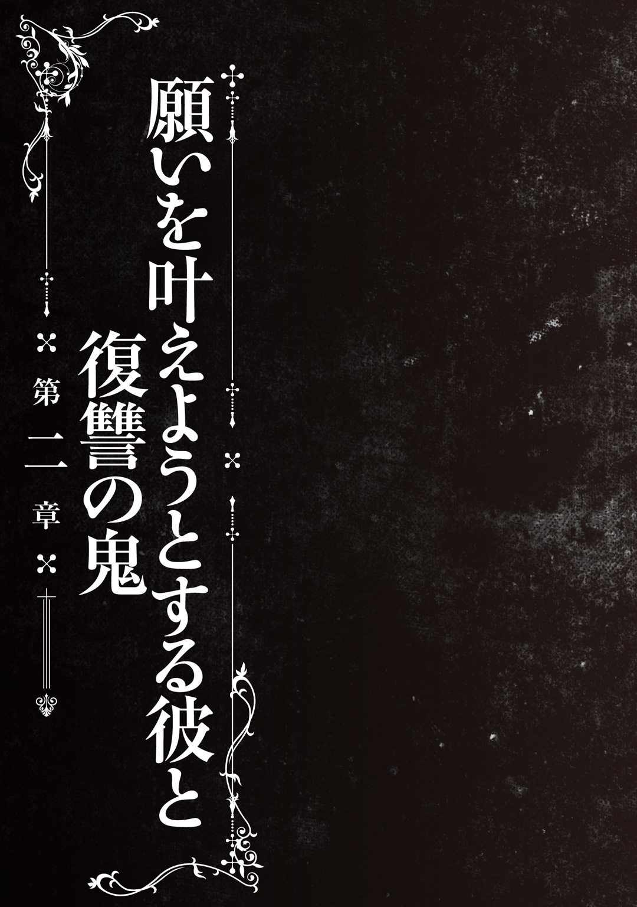

| 怪談彼女 2 ～口裂け女～ | |
| 永遠月心悟 | |
この本は縦書きでレイアウトされています。
また、ご覧になる機種により、表示の差が認められることがあります。
人物紹介
斉藤槍牙 さいとうそうが
12歳。鷹夏中学校１年。
存在しないものをこの世に定着させる『最悪器官』。
黒川夢乃 くろかわゆめの
槍牙の幼馴染で同級生。
槍牙無しでは存在できない『怪異』である。
異常な愛情を槍牙に向ける。
野波小百合 のなみさゆり
槍牙たちと同じクラス。
怪異を滅ぼすための組織『殲』の一員である。
あやとりをしている。私服のセンスは...。
零子 れいこ
怪異『口裂け女』である。
８年前、槍牙たちと出会っているというのだが...。
ジェイソン＝バスカヴィル
『殲』の一員。
養護施設を運営していた大男。
殿川和華 とのかわのどか
ジェイソンのパートナー。
風貌も仕草もおっとりしている。
CONTENTS
この作品はフィクションです。実在の人物・団体・事件などには、いっさい関係ありません。
それは、五月のことだった。
「夢乃が『黒龍』に呪われたときのことを、君は覚えているかな？」
和装の男が卓袱台に頰杖をついて尋ねる。左の袖が潰れており、端正な顔はいつもの柔和な表情ではなく、いかつく眉根を寄せていた。
いいえ、と首を横に振ると、男は低い声でもう一度尋ねた。
「よく思い出してくれ。八年前のことだ。神社で、確かに君は夢乃が『黒龍』の呪いを受ける場面を見ているはずなんだ。君と、夢乃と、あともうひとりだけがそれを知っている。覚えていないか？ 八年前の、夏祭りの日だ」
八年前――それは、最悪器官が暴走したとき。この世に怪異があふれたときだ。
言葉に詰まる。当時の記憶はひどく曖昧だ。あまりに多くの記憶が消去されたため、消えなくてもいい記憶まで消えてしまった可能性が高いと黒川は言っていた。
覚えていません、と正直に答えた。和装の男は頭をがりがりとかくと、まるで失望したように重く低いため息をついた。
それが、黒川の呪いをとく鍵になるんですか？ と尋ね返すと男はじろりとこちらをにらむ。ねめつけた瞳はぎらついていた。背筋が、ぞくっと冷たくなる。全身がこわばり、息をするのもつらいほどだった。覚えていない自分のことが恥ずかしくなって、悔しいという気持ちも胸の中でかっと燃えてくすぶる。あるいは、罪悪感だろうか。
黒川が呪いを背負うこととなったのは、俺のせいなのに。
十秒ほどして、ふたたび男が低い声で言う。
「夢乃はね、絶対にそのときのことを言わない。『黒龍』とどんな契約を果たしたのかがわかれば、あの忌々しい呪いを取り除くことができるかもしれないのにね」
呪いを取り除く。それはとても素敵な話に思えた。
黒川夢乃。俺の幼馴染は依存心が激しく、常にべたべたして俺にからみつき、常識はなく、派手な振る舞いをしては周囲をかき乱し、自分の言うことは聞いてもらわないと怒る、趣味が悪くて口も悪い女だ。
そうなってしまったのは、呪いによるところも大きい。そう俺は思っている。
『黒龍』――怪異を打ち倒せる力を簡単に手に入れる代わりに、自己の存在を怪異と同等におとしめるという呪い。黒川夢乃はほぼ怪異と同じ存在だ。放置しておけば徐々に存在感を失くし、やがて消えてしまうかすかなものなのだ。
それを引き止めているのが、俺の最悪器官の力だ。最悪器官は怪異を実在のものとし、現実の存在に留める力だ。それで黒川夢乃は、人間として暮らしている。
だから彼女は、俺にべたべたと依存するのだ。そして消えてしまう不安から、眉をひそめられるような無茶苦茶な言動で、周囲の人間の記憶に残ろうとする。
でも呪いが外れるなら、黒川夢乃はただの女の子になる。怪異じゃなく、人間の女の子に。
「君の記憶は、もうないのかもしれないね。非常に残念だ」
和装の男はふたたび頰杖をついている。疲れ果てたような顔だった。
そんな重要な話をどうしていまさら、と訊いてみる。
「君が、自分を最悪器官だと自覚してしまったからね。これまで怪異がらみのことや、八年前のことは口にしないようにしていたが、もう君も関係者だ。だったら、八年前のことをもっと尋ねてみたいと思ってね。俺は、夢乃を救いたいんだ」
最悪器官のことは、長らく俺には伏せられていた。その状況が変われば、他のことも多少なりとも変わってくるのだろうか。
まあいい、と落胆の様子は隠さず、男は息を深く吐き出すと立ち上がった。とりつくろうように引きつった笑みを浮かべていたが、機嫌の悪さはこれでもかというほどにじみ出ている。普段はこんな感じの人じゃない。今日はたまたま虫の居所が悪かったのだと思う。
俺に見切りをつけたらしい男がさっさと部屋を出ていく前に、俺は言った。
「灯さん、俺も黒川のこと、救いたいです」
ぴたり、と灯さんの足が止まる。右手が襖にかかっていた。
「でも、もし黒川を救えるのなら――」
じゃあ思い出してよ、それが無理なら、あの場にいたあとひとりを見つけてくれ、と灯さんは言うと襖を開いて出ていった。
声は、最後まで冷たかった。五月のある日、ほんの十分ぐらいの出来事だった。
あとひとり。その言葉が、それからずっと耳に残って、離れない。
みーんみんみんみーん、とセミが鳴いていた。
一学期最後の体育の授業は快晴で、自由にプール遊びしていい時間だった。屋外プールの片隅で肩まで水に浸かり、俺は気持ちのいい青空と白い雲をぼんやりとながめる。
「ねえ、槍牙くん」
不意に俺を呼ぶ声が聞こえた。女の、ねっとりとからみつくような声だ。
よその中学校では男女別で体育の授業らしいが、うちにはいつその制度が導入されるのだろう。少なくとも俺は、このプール授業に関してはもう精神的に疲れ果てている。
「そんなに青空ばかり見つめていたら私、嫉妬で空さえ破壊したくなっちゃうわ。お願い。槍牙くんの目に映るのは私だけのほうがいいの」
「......青空にまで嫉妬するなよ」
空から視線を戻すと、俺の目の前には女の子の――たったいまごちゃごちゃと話しかけてきた幼馴染のクラスメイト、黒川夢乃の異様に整った顔があった。
少し目つきが悪くて笑顔が残忍そうに見えても美人である事実は曇らない。それほど綺麗な顔だ。本来なら水泳帽でまとめなければならない長い黒髪をはた迷惑にも垂らしているが、きらきらと輝いている濡れた髪は綺麗だった。首筋や鎖骨にも雫が垂れている。
その下、胸には中学一年生というのが噓かと思うような大きなふくらみが浮力によりやや浮いている。包んでいるのはスクール水着でなくてはならないのだが、何故かヒョウ柄のビキニがその役を担っていた。そのやわらかい胸をさっきから俺の体にぷにぷにと押しつけてくるのが非常にうっとうしい。せっかく涼んでいるというのに。
「槍牙くん、水遊びをしていいという話なのよ？ それなのにさっきから温泉に浸かる老人のようにたそがれているのだもの。一緒に泳ぎ、水をかけあって遊ぶという恋人ならではの行為に身を投じてくれないのは何故かしら？」
「恋人じゃないからだろうなあ」
勝手に俺のことを恋人認定してくる黒川夢乃だが、実際のところそんな関係はない。こんな美人に惚れられてうらやましい、と思う人間さえこのクラスにいないだろう。黒川を恋人にするというのは実際、無茶苦茶疲れる話だ。
たとえば、黒川の頭はいい。先日おこなわれた期末試験で難なく全教科満点で一位に輝いたのは素晴らしい功績だろう。運動能力も高い。すべての運動部から最低一度は勧誘を受けていたし、体育だって短距離走にしても水泳にしても全国レベルのタイムを弾き出していた。
外見は言うに及ばず、ポテンシャルも申し分ない。これが恋人ならさぞ鼻高々と思うかもしれないが――性格が悪いのだ。ついでに言えば口も悪い。常識もないし品位もない。とどのつまり、言動が非常に残念な女の子だった。
「そうだわ、槍牙くん。折角露出が高いのだから、もっともっと密着して肌の表面をこすりあわせてキスとかハグとか水に隠れて色々しましょう」
ぐいぐいと体を押しつけ、胸の肉をひしゃげさせる黒川。俺は肘を突っ張ってなんとかきつく抱きしめられる状況を拒む。
逃げたくても、すでにプールの隅に追いやられているため、逃げ道はない。プールサイドに飛び上がろうとも考えたが、それは二週間前の授業の折に失敗していた。黒川が抱きついてくるので逃げようとしたら、飛びつかれ羽交い絞めにされたのだ。その後、水中に引きずりこまれて「大変、槍牙くんが窒息しちゃう。私の肺の中にある空気を口移しでプレゼントしなくちゃ！」とでも言いたげな、にやあ、という嫌な笑いでキスしようとしてきた。
本当に窒息寸前になった経験は、一度で十分だ。
「そこー、ふざけあってもいいけど溺れないでよー」
水しぶきを上げて黒川の蛮行を阻止していると、プールサイドから声が投げかけられた。振り向くと、そこには競泳水着に身を包んだ体育教師、久住碧先生が白いパーカーをはためかせて立っている。短いボーイッシュな髪型にさばさばとした態度がよく似合う。まだ教師歴三年ということで若く、顔立ちもわりと可愛い先生だ。黒川の問題行為には苦笑いを浮かべるものの他の先生に比べれば優しいし、こうして話しかけてもくれるので個人的に好感度は高かった。
それだけに、黒川がいくら注意されても派手なビキニを着てくるのが申し訳なかったが。
「黒川さん、斉藤くん。確かに遊ぶ時間とは言ったけど、危険なことはダメよ」
「危険？ 何を言っているのかしら久住碧。私と槍牙くんの間にはたとえどのような障害があろうと打ち砕く、それが私の信条よ」
お前そのものが邪魔者なんだが。あと水中で足をからめるな、こける。
プール槽の端っこに腕や背中を当てて体を支えていると、久住先生の後ろからクラスメイトの男子――日立紅が顔を出す。いつもワックスで固めたつんつん頭も水泳のときは青い水泳帽の中に押しこめられ、爽やかな顔が日に焼けていた。
「久住先生！ 夏祭り！ 夏祭り一緒に行きましょうよ！ ねえ！」
夏祭り――毎年開かれる鷹夏市の恒例行事だ。
どうやらあいつは夏祭りを一緒に回る相手を求めてナンパしているらしい。女好きでクラスの女子ほとんど全員から軽蔑されているのに気にしない、元気な日立を「はいはい」とあしらいながら、久住先生は他の生徒たちを見回りに行った。当然のように日立はその背中を追う。
ありゃあ、なびいてくれないだろうな。そう考えていると、困った幼馴染が俺に抱きついたまま声をあげた。
「そうだわ、夏祭り！ 槍牙くんのために浴衣を用意したのよ！」
「......ああ、そう。ちなみにどんなの？」
水中で俺のあばら骨をなでる手つきにあらがいながら、適当に応じる。
鷹夏市は人口が五万人ほどの、住宅地より田畑や森林のほうが面積の広い地方都市だ。毎年夏には鷹夏神社で祭りが開かれる。今年の夏祭りは今週末、夏休み一日目に催されるのだが、俺は黒川と一緒に回ることを強要されていた。
「槍牙くんの好きな青い色よ。いまの空より少し濃い目かしら。柄は私の好きな彼岸花。白抜きになっていて、全面にあしらわれているけれどくどくはないと思うの」
お、珍しくまともだな、と思った。身をひるがえしてプールサイドに腕をのせる。ざらざらと細かい砂が散らばる熱いコンクリートは、水の中でたっぷり冷えた腕には少し気持ちいい。ぼんやり視線を正面に向けると、ひとりの女子生徒が座りこんでいた。
少し気だるげな無表情に、膝を抱えた指が妙に長いのが目につく。スクール水着も白く輝く素肌も、全然濡れていなかった。浅くかぶった水泳帽の下にある瞳は、じー、と俺と黒川をにらんでいる。
野波小百合――旧姓は平賀という（黒川しか呼ばないけど）。彼女はどうやら水に入る気がないらしい。クラスでは一言も喋ったことのない無口な女子だったが......色々と因縁があり、俺と黒川は彼女の声を聞いたことがある。
というか、俺に至っては憎悪の念を向けられている。じー、と見てくる視線が「そこのバカップル、殺しましょうかね」とでも言いたげなものになる直前、ぐい、と黒川が俺の肩を引っ張った。
「槍牙くん。平賀の腕や足をそんないやらしい目で見ないで。私だけを見て。私の体だったら舐めるようにながめていいから。むしろ舐めて」
俺のほほに手を当て、指を口の中に入れようとしてきたので頭を振って拒む。
ばつが悪かったし野波さんの視線も怖かったので、軽口で応じながら姿勢を戻す。黒川の残虐そうな、けれど本人にとってはきっと自然な笑顔が目前にずずいっ、と寄る。
「他の女の子を見るのはダメ。いい？ 槍牙くんのこの綺麗な眼球には、私だけが映っていればいいの。それだけで槍牙くんは一生安泰なのよ？」
俺の目の下辺りを親指の腹でなぞる黒川。数センチずれれば目が潰せる位置なので、つい体がこわばる。蛇ににらまれたカエルの気分だった。
「それでね、私の浴衣には白いフリルをつけるけれど、槍牙くんにはブレスレットやネックレスで同じぐらい目立つようにしてバランスを取ろうと思っているの。槍牙くんは男だから、フリルじゃなくて装飾品で目立たせたらいいかなって思ったの」
うん、いまこの説明で着る気がなくなった。なんだそのド派手な格好は。
ただ浴衣をそう改造したがるのもわからないでもない。黒川の普段の服装がそういう、いわゆるゴシック系のファッションだからだ。
当然それも校則違反だが、このビキニと同じで注意されても黒川は無視するのだった。
「槍牙くんと夏祭り。ね、とても楽しそうだわ。わたあめ食べさせあったり、金魚をすくおうとして間違って私をすくおうとしたりしましょうね」
なんだそのバカップルすぎる夏祭り。というか金魚すくいのほうはただのバカだろ。
こうしてべたべたされるのもちょっと嫌なのだが......まあ、いまはそんなにがみがみ言わないようにしている。この迷惑行為も少しは認めているのだ。
黒川はある事情により、ただの人間とは少し違った存在――『怪異』となった。
怪異とは人間の強い感情（特に恐怖）から生まれた存在で、人間よりもずっと存在感がなく、一部の霊感ある人間を除けばその姿をとらえることはできない。少なくとも科学的に「存在する」とは認められないものだという。
実際、多分たいていの人間がこのプールの中に何人いるか数えたって、一クラス三十名としかならないだろう。しかし怪異はその辺にたくさんいる。霊感がある人が数えれば、ひとりふたり増えているかもしれない。
ただ、科学的には見えないだけで。感知できないだけで。
黒川もそれらと同じように、本来ならば数えられない存在だ。これだけの美人が水泳帽もかぶらず、ヒョウ柄のビキニを着ているという派手さをもってしても霊感のない鈍感な人間には素通りされる可能性が高い。
けれど、いまは普通に見えている。それは俺の能力というか性質によるものだ。
俺の目や耳は『最悪器官』と呼ばれる。怪異を語ったもの――すなわち怪談を俺が見聞きして感情を揺さぶられたとき（たいてい、怖いと感じたときだが）、語られた怪異を現実のものにしてしまうという。俺が目や耳で直接怪異をとらえても同じ現象が発生する。最悪器官によって、おぼろげな存在だったものが、まるで生きた人間のようにこの世に存在するようになるのだ。
逆に有効活用すれば、俺は怪異と同等の存在である黒川をこの世界に人間として留めてやる力があるわけだ。ただし条件があり、二十四時間以上離れてはいけない。それ以上見聞きせずにいると、俺が黒川をまともに感知できなくなるからだ。
そういう普通らしからぬ事情があるので、いつも黒川は俺にべったりしている。
......さすがに最近、暑苦しくはなってきた。水の中でもうざい。
「黒川、いい加減思うわけだよ。二十四時間に一度こうして接していればいいだけだろ？ いつもこんなにべたべたしている必要はないんじゃないかな」
「そりゃあ、存在が消えちゃうのは嫌よ？ だから槍牙くんのそばが落ちつくというのはあるわ。けれどもね、それ以前に私たち、夫婦じゃないの」
「夫婦じゃないよ」
「恋人ね」
「黒川、お前ちょっと黙っていろ」
槍牙くんから話しかけたのにぃ、とか言いながらさらに体重をかけてのしかかる黒川。
昔から好きだの愛しているだの結婚しましょうだの言い続けている黒川だが、一応この過剰な愛情表現にはその怪異ならではの事情もあるわけで。
黒川がじゃれついてくるので、目の前にその左腕が見える。普段から惜しげもなくさらしているその肌には、黒い龍の刺青が躍っていた。
人工呪術――『黒龍』。
黒川を怪異と同等の存在におとしめている元凶だった。
怪異を打ち払う力を与える代わりに、存在感を食らうという呪い。これによって黒川は怪異になったのだ。八年前、俺の最悪器官が暴走してしまったために。
自分がそんな力を持っていることを知らなかった俺は、八年前のある日、色んな怪談を読んでしまった。その結果、この世界に何千何万もの怪異が実在してしまったのだ。そして怪異は、ほとんどが人間を傷つけることを存在理由にしている。
黒川のお父さん――黒川灯さんを含めた霊能力者たちがこぞって怪異らと戦い、多くの犠牲を払って事態を収拾したと聞く。だがその中で黒川は俺を守るために『黒龍』の呪いを左腕に宿した。そうしなくては、俺たちが怪異に殺されていたかもしれないからだ。
とはいえ最悪器官の特性上、その辺のことを俺は覚えていない。実在させてしまった怪異が消滅すると、その怪異にまつわる記憶は俺の頭から消えるのだ。
なんにせよ、黒川からこの左腕の呪いを引きはがせば怪異でなくなるのではないか。俺はそう思っている。怪異でなくなれば普通の人間だ。愛情表現が過激なのも、黒川が「消えたくない」と不安がっているからだろうから、怪異でなくなればもっといい距離感で接してくれるに違いない。
それなら嬉しい。普通の女の子らしく、派手な行為もしない、穏やかな態度の黒川はさぞかし綺麗で可愛いだろうから。
それに、俺が外してあげなくてはいけないのだろう。
俺のせいで、こんな厄介な呪いを身につけてしまったのだから。
しかし、『黒龍』をどんな条件で身に宿したのか。どういう契約を交わしたのか。黒川は俺に決して教えなかった――実の父親にも言わないぐらい、口は固い。
呪いが外れたらなあ、という思いは最近ますます強くなる。
責任とかいう以前に、俺は黒川のことが好きだったからだ。ただし。
「槍牙くんってば考え事でもしているみたいね。私のこと？ 私のことかしら？ だったら嬉しいわ。でも槍牙くん。それは後でもできるわ。折角ほら、こんな開放的な格好しているんだもの。ほら、水着の中に手を突っこんでもいいのよ？ 槍牙くんにだけは何をされても私、嬉しいの。さあ、ほら」
こういう品のないことを言わなければ、という条件つきの好意だが。
黒い龍の刺青を見る。気のせいか、目が合ったような気さえした。
蟬時雨と青空の下、プールの水に癒されながらため息をつく。ちょうどそのとき、ピーッ、という鋭いホイッスル音が、授業の終わりを告げた。
放課後は黒川の家に行き、夕食までご馳走になって午後九時ぐらいに家に帰る。その間、ずっと黒川は俺にからんでくるのでまともに宿題ができたためしがない。食事だって三秒に一回ぐらい黒川を肘ではねのけながら進めている。その食事も最近になって胃腸が弱くなったのか、吐いてしまうことも多いわけだが。
結局――俺の一日は黒川との戦いというか、抵抗で終わるのだった。
「......とはいえ、寝つけないと終わりようもないんだが」
夜になっても涼しくはならず、最近では一度寝ても途中で起き、台所へ行ってスポーツドリンクを飲むのが習慣になっていた。きんきんに冷やしたそれは寝起きの熱い体に染みて、体全体をすっきりと爽快にしてくれる。今夜もそうするつもりだった。
うっかり冷蔵庫に入れ忘れたのは、俺のミスである。
そういうわけで俺は日付も変わった夜中に外へと出たのである。コンビニへ行くこともできたが、もう少し近場の自動販売機へ向かう。冷えたスポーツドリンクさえあれば、どちらでもいいのだ。
公園のそばに立っている自動販売機を目指して角を曲がり、残り十メートルほどの道へと足を進め――
「ん？」
自動販売機の前に、背の高い女性がひとり立っていた。
ひと気がなかったので少し驚く。不審者じゃないよな、とちょっと身構え、街灯と販売機の光に照らされた姿をよく見てみた。
赤茶けた髪は肩口にそろえられ、赤いコートを着ている。こんな暑い夜にと思ったが、どうやら薄手のようだ。中に着たワンピースの柄が透けて見えている。
ながめていると、ふとその女性が振り向いた。その途端、俺を見てぎょっとしたように目を見開いたが、それがどういう種類の表情かはわからない。なぜなら彼女の顔の下半分は、白いマスクでおおわれていたからだ。
そして極めつけに、右手に刃の長い銀色のハサミをにぎっている。
見たこともないほど大きなハサミだった。
数秒ほど何も言えなかった。最後に見えたその凶器に意識を数秒、奪われてしまう。
人それぞれ色んな事情があるとは思ったが、それでもあのハサミは大きすぎる。持ち歩いている人はまずいないだろうし、そもそも何が目的であんな得物をぶら下げているのか。
彼女が一歩、こちらへ踏み出した。走って逃げようかな、と思った次の瞬間。
ハサミを持った女が、一瞬で俺の目の前へと迫ってきたのだ。
「――ひっ！」
たまらずのけぞり、そのまま後ろに倒れる。
間近で見上げる女は本当に背が高い。スレンダーな体型ではあるが生足をさらしており、大人の女性らしい色気があった。こちらを見下ろす目は見開かれたままだ。しゃきん、と相手の右手にあるハサミが金属的な音を立てた。
「私、きれい？」
相手がそう尋ねてきた。だがそれに答える理由などない。何故そんなことを尋ねられたのかさえ、思い浮かばなかった。
これは、怪異だ。理屈より先に直感がそう理解していた。
おそらく俺が八年前に実在させ、消されることなく逃げた怪異の生き残り。
逃げなくては、危ない。
立ち上がり、きびすを返してすぐさま走りだす。もうスポーツドリンクなんてどうでもいい、とにかくいまは距離を取らなくては――
角を曲がる。途端、何かやわらかいものに思いきりぶつかってしまい、俺は跳ね飛ばされてふたたび尻もちをつく。
いま背を向けたばかりの赤い服の女が、目の前にいた。
「......え？」
振り返る。自動販売機の前にも、さっき俺が立っていたところにも女はいない。
――移動、した？ まさか......
考えている暇はない。すぐさま起き上がり、駆けだす。ちら、と後ろを振り向いた。
ぴったりと、俺の後ろを女がついてきていた。
ぞわりと首筋に鳥肌が立って俺は前を向いて走りだす。全力疾走だった。
必死で足を動かしているのに、すうう、と俺の背後から頭の両側を通って二本の腕が伸びてきた。袖の赤い腕にはめられていた、金色のブレスレットがちりんと音を立てたのさえ聞こえる。その先にある銀のハサミが、こちらの首でも切断するんじゃないかと思えて血の気が引いた。腕は長く、俺の肩を抱きしめようとする。
体を縮め、受け身を取るように地面を転がった。なんとかつかまることは避ける。
こんな尋常でない速度、あるいは瞬間移動という科学的にありえない現象。すべてが怪異としか思えなかった。
すぐそこに二メートル近い民家の石塀があったので、それを蹴りつけてジャンプし、塀の上へと手をかける。数年間も黒川から逃げるうちに、これぐらいのことは簡単にできるようになっていた。このときばかりは黒川に感謝した。このときだけだが。
あとはさっさと体を引き上げ、塀を飛び越えるつもりだった。しかし乗り越えようとしたところで、がしりと足首をつかまれる。
な、とうめくのが精一杯だった。片手を伸ばして軽々と俺をつかまえた女は、今度は見上げてくる。目元しか見えないが、眼光は強く光っていた。
逃がさない。そういう気迫が感じられる目だった。
――黒川。
幼馴染の名前を叫びそうになった直前、女の目がにへら、といきなりやわらいだ。
「ねえ、お金貸してくれない？ 五百円でいいから」
............は？
いま俺は、夜の公園でカップラーメンをすする怪異とベンチで隣りあっている。
......意味がわからない。
「マスク外さずによく食べられますね」
「ずるるっ、むぐっ、んんんっ、ん、ずるるるるっ」
「......何を言っているのかわからないので、後でいいです」
赤い服の女はマスクを外さずラーメンを食べている。まるでマスクを通り抜けているようだが、染みひとつつきやしない。
......手品か。あるいは、怪異だからこそできる芸当か。
五百円ぴったりは持っておらず千円札一枚を貸したわけだが（返ってくるとはあんまり思っていない）、彼女はコンビニでカップラーメンとお茶とゼリーを購入していた。店内でお湯を沸かして注ぎ、歩いて五分の公園まで来たのである。五分ぐらい悩んで決めていたラーメンだったが、目を細めてすすっているところを見るととても美味しそうだ。
スポーツドリンクだけでお腹いっぱいなので俺は遠慮しておく。
激しく鳴いていたカエルの声が、不意に止まった。また鳴きだすだろうと思っていたら、ぱんっ、と手を打つ音が大きく響く。
「ごちそうさまでした。ありがとうねー。お腹いっぱい」
「......そりゃあ良かったです」
スープさえ一滴も残っていないのに、やっぱりマスクは汚れていない。どういう仕組みなのか考えるだけ無駄だと思い、それ以上は食事の不思議に触れなかった。
「それで、あなたは怪異なんですよね？」
「うん、そうだよ。口裂け女で、名前は零子」
ゼロの子どもだよ、と言われたので漢字もわかった。口裂け女という名前に馴染みはなかったが、おそらく八年前に怪談を読んでいるのだろう。
そうでもなければ、こうして彼女が存在していられるはずがない。
というか、と零子さんがぴっと俺の鼻先に細長い指をつきつけた。
「槍牙くん、さては私のことを忘れているね？」
「......なんで名前、知っているんですか？」
「だって私、八年前に槍牙くんに会っているもん。こーんなちっちゃかったんだよ」
指で十センチぐらいのすき間をつくって見せる零子さんに、それはないだろと言いたかったが気になるところは別にある。
八年前、俺は『最悪器官』と呼ばれる特殊能力を暴走させ、何千何万という怪異を実在させてしまった。ほとんどの怪異はそこで駆逐されたが、生き残りがいる可能性は高い。現に四月、俺は生き残っていた怪異と戦った。その怪異についてもう記憶は残っていないが――
「零子さん、あなたはどういう怪異なんですか？ 俺、もう八年前のことってあんまり覚えていないんですけど」
「......それ喋っちゃったら怪談になっちゃうんじゃないかな？ いいの？ 最悪器官なんだから、聞かないほうがいいと思うけど」
俺が最悪器官だというのはわかっているのか。
「そうですけど。でも変じゃないですか。たいてい、怪異っていうのは人に害をなすものなのに、そういう感じがしません」
「えっ？ 私、そんな害をなすなんてことしないよ？」
目を見開いて驚いた様子を見せる零子さんだったが、ならその手にある得物は何かと訊いてもいいのだろうか。裁縫バサミを倍にしたぐらい大きいハサミだ。
俺の目にはどうしたって凶器としか映らない。
「私はね......うーん、そうだね。迷子がいたら一緒にお父さんお母さんを探してあげるような、そういう怪異だね」
「......そうですか」
信じてなさそうだね、と零子さんが目を細める。否定はしない。話の真偽がつかないのだ。けれど、少なくともここで俺に攻撃をしかけてこないぐらいの信用はしてもよさそうである。
八年前のことは覚えていないが、初対面には思えなかった。
「あ、この白桃ゼリー美味しい。前に買ったのはね、あんまり美味しくなかったんだけど」
「さあ。あんまりコンビニで買い食いとかしないので」
「はい、槍牙くん。あーんして。あーん」
ゼリーを一さじ、こちらに向けてくる零子さん。いいです、と断っても「えー、美味しいのに。もったいなーい」と言って口元にぐいぐい押しつけてくる。唇の周辺に冷たい感触が生じ、仕方なく食べた。よしよし、と大仰にうなずく零子さんを見ていると、自分が餌をもらう雛鳥のような気持ちになる。
うん、確かにすごく美味しい。白桃のゼリー。
「そういえば槍牙くん、夢乃ちゃんってさ、いま――」
「槍牙くん！」
零子さんが「夢乃」という名を口にした瞬間、実にタイミングよくそいつは現れた。こんな夜遅くにあいつが――黒川が来るとは、どういうわけだ。
きょろきょろと周囲を見回す。視線が止まったのは、電柱の上だった。
細い革紐で吊ったドレスは肩口が露出しており、熱帯夜には涼しい装いだ。けれど腕には広い袖がついているので露出度は低い。黒いスカートや赤いストッキングのカラーリングはいつもの派手な服装だ。全身に龍の紋様が躍っており、ゴシックよりもチャイナ系のファッションのように感じられる。
その顔に浮かんでいるのは、憤怒の表情である。見開いた目も嚙みしめられた歯も、右手にかかげられた日傘も、すべてが怒りを立ちのぼらせていた。
どこからどう跳んでそこに至ったのかはともかく、夜空を背にして黒川が現れた。
「心配したのよ槍牙くん！ ずっとお部屋にいないし、見つけたと思ったら、私以外の女といちゃいちゃと......！」
「......いや、なんで部屋にいないのを知っているんだ、お前」
スマホを置いてきたので、そのせいだろうか。しかし答えは予想を裏切る。
「だって槍牙くんの部屋にしかけてある盗聴器に、槍牙くんの寝息も寝言もいびきも歯ぎしりも聞こえないんだもの、わかるわよ！」
「盗聴器って何かな！」
俺の大きな疑問には答えず、もう一度「槍牙くぅん！」と叫ぶや否や、飛び降りるように黒川は電柱を垂直に駆け走ってくる。落下する速度では物足りないというような、常人ならざる動きに俺はつい腰を浮かせてしまう。
どどどどど、と音が立ちそうな勢いで黒川が一直線に向かってくる。形のいい唇が歪み、吠えた。
「槍牙くん！ そいつから――零子から離れて！」
言われなくてもほとんど暴走特急みたいな勢いの黒川だ、そのルートの上になどいたくない。すぐ横に跳んで逃げた瞬間、黒川がすれすれを駆け抜けた。振り返り、ふたりの動向をうかがう。
黒川だけがひとり、日傘をフェンシングのように突き出した姿勢で止まっていた。
「零子さん！」
黒川の力――『黒龍』の力で消したのだと思った。
零子さんは怪異だから、黒川が攻撃すれば消滅させることができる。だから黒川の攻撃が当たったのだと思った。
けれど、今度は黒川ではない声が高いところから聞こえてきた。
「夢乃ちゃん、やっほー。私、きれい？ あ、っていうか、まだ『黒龍』って健在なんでしょ？ 危ないなあ」
「あんなところに......」
先ほど黒川が現れた電柱の上へと、零子さんは移動していた。ふん、と黒川が鼻を鳴らした音が聞こえ、苦々しい声音で告げる。
「槍牙くん、いまあいつが走ったの、見えたかしら？」
「走った......？ 瞬間移動したんじゃないのか？」
ふふふ、と和んだような笑い声が聞こえて振り返る。黒川が笑っていた。残酷そうに見えるいつもの笑顔である。
「槍牙くんってば瞬間移動ですって。子どもみたいな発想ね。可愛いわ」
......バカにされているわけではなさそうなので、とりあえずよしとする。黒川がふたたび電柱の上の零子さんに視線を向け、続けた。
「あれが怪異――口裂け女よ。語られた怪談によって設定やポテンシャルは違うけれど、ほとんどは百メートルを三秒で駆けると言われているわ」
「百メートルを三秒......？」
なんだ、その無茶苦茶な数字は。それが本当なら確かに瞬間移動に見えるだろうけれど。
「奴らは脚力が異常に強いのよ。だから本当は走っていたはずよ。とんでもないスピードで、だけどね」
「何こそこそと話しているの。槍牙くん、夢乃ちゃん」
私も混ぜて、と言いながら電柱から飛び降りる零子さん。危なっ、と声を出しそうになったが、至極平然と着地してこちらへ歩いてくる。あれも脚力のうちだろうか。
しかし数歩も歩かぬうちに、黒川が激しい声を張りあげた。
「零子！ それ以上近寄るな！」
ぴたりと零子さんが足を止める。おい、と俺は黒川に声をかけた。
「どうしたんだよ。別に零子さん、何もしてこないぞ？ 怪異は怪異でもいい怪異みたいだし、それに俺たちのことを知っているみたいだし......」
「ええ、覚えているわよ。八年前に私と槍牙くんは、あいつに会っている。だからああして親しげに近寄ってきているんでしょう？ 悪い怪異じゃないのはわかっているわよ。でもね槍牙くん。あなたには怪異と馴れあってもらいたくはないのよ」
それに、と黒川が苛立たしげに舌打ちをした。
「槍牙くん、尋ねられなかった？ 『私、きれい？』って」
そのフレーズに聞き覚えはあった。零子さんとさっき出会ったときも黒川が来たときも、確かにそんなことを言っていたのだ。その後、逃げようとしたりカップラーメンをおごらされたりしていたのですっかり忘れていただけで。
零子さんの目が、心なしか少し悲しそうに伏せられた。
「零子は大丈夫だと思うけれどもね......でも口裂け女という怪異は、その質問に対する答え次第では相手を殺す。そういう怪異でもあるのよ」
殺す、という物騒な単語に少し驚く。確かにハサミについては尋常でないところもあるが、それでも零子さんの雰囲気や行動には敵意のようなものはないと思っていた。
零子、と黒川のほうこそ敵意のこもった声を出した。
「そのマスク、外して見せなさい」
ひっ、と零子さんがうろたえた声を出した。一歩後ずさったのを見て、黒川が続ける。
「何のつもりで槍牙くんに近づいたか知らないけれど、はっきり言って迷惑なのよ。さ、零子。それを外して、槍牙くんに正体を見せなさい」
黒川が言葉を吐き出すたび、零子さんの視線が徐々に地面に下りていく。まるで黒川がいじめているように見えて、俺は黒川をいさめた。
「黒川、別にいいだろ。それに、俺はあの質問になんとも返していないし、だから」
「槍牙くん。害があるとかないとか、そんなことを私は言っているんじゃないの。あいつには槍牙くんに近寄ってもらいたくない。ただそれだけよ」
「お前の好き嫌いか」
「ええ。私の好き嫌いよ。でも槍牙くん」
黒川がせせら笑った。
「マスクの下も見せてくれない素性を知らない女と、仲良くできるかしら？」
「......わかったよ、夢乃ちゃん」
あからさまな挑発だったが、零子さんは乗った。はーあ、とため息をこぼしてから耳にかけたヒモに指を通し、そのままするりとマスクを外した。
口裂け女。
その言葉の意味を、俺はようやく理解した。
「っ......！」
声にならない。一瞬で目に焼きついたイメージはそのまま、まぶたの裏にへばりついた。口裂け女の名の由来は――そのまんまだった。
零子さんは耳まで口が裂けて、鋭い三日月みたいな口をしていた。
「ねえ槍牙くん――私、きれい？」
すごく悲しそうに零子さんが言った。黒川はふん、と鼻を鳴らして俺に告げた。
「別に外見なんてね、どうだっていいのよ。だってそうでしょう？ 人間だったら、あんな傷ごときで人間でなくなるわけがないもの。でもね、怪異なの。怪異だから人の記憶に強く残って存在し続けようとするの。私がしているみたいに、派手なことをしてみせる。他人の感情をゆさぶろうとする」
槍牙くんに存在をアピールするのは、私だけでいいのよ。吐き捨てる口調はただきついだけではない気がした。たぶん、黒川のは同族嫌悪だ。同じ怪異だからこそ、腹が立っているに違いない。
「私がしているみたいに」――俺につきまとう怪異は軒並み、自分と重なるから嫌いなのだ。
零子さんが恥ずかしそうにマスクをつけ直し、俺を見て首を横に振った。
「いいの。ごめんね、槍牙くん」
穏やかに笑っているように見せて、笑っていない。傷を見せて笑っていられるような人ではないのだろう。だから、俺は零子さんに言わなくてはならないと思った。
「きれいですよ。零子さん」
へ、と間の抜けた声は零子さんと黒川、両方からした。
「驚くのは仕方ないというか、びっくりしちゃうものなんですけど......それが零子さんには嫌なのかもしれないですけど、別に零子さんをそれでどうこうっていうのはありませんよ。だから、きれいですよ。きれいだと、俺は思いますよ」
沈黙は数秒から、十数秒にわたったと思う。ぱちくりとまばたく零子さんは、俺の顔をじっとながめていた。けれどそれも終われば、彼女はすぐに目を細めて微笑んだ。
今度こそ、きちんと笑っている目だった。
「そっか。ありがとう、槍牙くん」
えへへ、と零子さんの声がもれたのも聞こえて、俺は手招きした。さっき黒川が止めたせいで一歩も進めていなかった零子さんは、ゆっくりとこちらへ歩いてくる。うろたえていたぎこちなさも、もうない。
そういえば当の黒川が妙に静かだな、と思って振り返った。
日傘を落として、今度は黒川のほうが目を見開いたまま硬直していた。
「......って、おい。黒川？」
「......くんが」
あ？ と訊き返すと、黒川が焦点の定まっていない状態でゆっくり地面に膝をつく。
「槍牙くんが、私以外の女に、私にだってそんな、いままで四十七回しか言ったことがないのに、きれいって、私じゃないのに、私じゃない奴にそんな、褒め言葉を与えて、槍牙くんが、私の槍牙くんなのに、私以外の女にきれいって、服とか、声とか、そういう一部だけじゃなくって、顔全体を見て、ちゃんとマスクの下を見て、槍牙くんが、きれいって、私じゃないのに、私の顔には、四十七回、十三年間で、たった四十七回しか言ってくれたこと、ないのに、最後に言ってくれたの、一年と二か月と十日前だっていうのに、そんなに長い間、私には言ってくれてないのに、たったいま、三十秒の間に三回も言って、そんな、槍牙くん、槍牙くんが、槍牙くん」
「ちょ、おい！ 黒川！ 何をショック受けてんだお前は！」
「あああああああ！」と黒川が頭を抱えて地面に思いきり叩きつけた。どごっ、という低く鈍い、そして重い音が響く。一度ではなく、何度も何度も黒川は頭を地面に叩きつけ、ついでに拳も地面に打ちつけ、叫び声をほとばしらせた。
「槍牙くんが浮気したああああああああ！」
「世間体の悪いこと言ってんじゃねえ！」
たまらず語調も荒くなる。いつの間にか俺のすぐそばまで来ていた零子さんが、俺の肩に手を載せてぴったりと背後に回っている。背中を丸め、まるで俺を盾にして黒川からの攻撃を防いでいるようだった。
「零子さんも、何をしているんですか？」
ぎゃあぎゃあと「私も槍牙くんに言ってもらいたいもの、きれいだって言って頭をなでてもらって抱きしめてもらってさらわれて槍牙くんの部屋のベッドにいざなわれて愛の言葉をささやかれながら生涯の誓いをしてもらいたいものぉぉぉぉぉ！」とか叫んでいる黒川を無視し、俺は眉を八の字に歪めて困惑している零子さんに尋ねた。
零子さんは少しだけ言葉を選んだようだったが、結局無遠慮に答える。
「だって夢乃ちゃん、気持ち悪いもの」
「そういうことは言っちゃいけません」
気持ち悪いって。気持ちはわかるけど。
「昔はあんな子じゃなかったよね？ 何？ 槍牙くん、たった八年で夢乃ちゃんに何をしたの？」
「俺のせいじゃありません。あれは天然由来の自然素材です」
ばっ、と黒川が顔を上げる。額が多少赤く色づいているが、血が出ているわけではないらしい。衝撃が頭の中に行くのでもうやるなと言いたい。言える余裕がないのは、零子さんが俺の肩をぐいぐい引っ張っているからだ。
「零子さん、別に黒川がちょっと気持ち悪いぐらいいいじゃないですか。逃げようと思えば零子さん、逃げられるんですよね？ 足、速いんですよね？」
「そういう問題じゃないよ。八年ぶりに会った子があんなに可愛いのにねじがぶっ飛んで外れていたら、ちょっと怖くなるよ」
まるで妹や弟が様変わりしていて受けつけられなかったみたいな話である。
「黒川」と声をかけてやり、近づくのも怖かったが肩を叩き、背中をさすってやると少しだけ落ちついたのか、黒川がやっとぼそぼそと言った。
「だいたい零子、あんた何しに来たのよ。そんな目立つ格好をして、目的は何？ 槍牙くんなら渡さないわよ」
じろり、と黒川がねめつける。感情半分、理屈半分といったところだろうか。
最悪器官は、怪異にとってお宝だ。俺が認識するだけで、非常に薄い存在である怪異が、人間と同じように存在できるようになるのだから必然でもあるだろう。誰だって、世界中ほとんどの人間に無視される生活なんて嫌だと思う。自由に物に触れないし、ほとんど感覚や痛みさえない世界に怪異は閉じこめられているのだと、以前黒川が言っていた。怪異と人間の間にはそれぐらいのへだたりがあるのだ。
ともあれ、零子さんが何をしに来たのかは俺も気になるところだ。じっと見ていると、零子さんはまた少し目元をゆるませて答える。
「実はね、鷹夏市にある教会が取り壊されちゃうんだよ」
教会――鷹夏教会、というのは聞いたことがある。ただ、そこにおもむく用事もなかったし興味もなかったので、行ったことは一度もない。黒川の顔をうかがうと、ああ、と何度かうなずいて見せた。
「いま使っていないのよ。しばらくそのままだったはずなのだけど、最近になってようやく取り壊すことになったみたいね」
「ふうん......で、その取り壊される教会が、どうかしたんですか？」
零子さんが俺の肩から手を放し、ベンチに腰を落ちつけて言う。
「あそこには昔、大切なものを置いてきてしまったの。それを回収しに行かなくちゃいけないの。多分、建物が壊されたら一緒に消えてしまうから」
「じゃ、いまから行ってらっしゃい。さあ、槍牙くん。もう夜も遅いわ。そろそろ帰って私にもきれいだよ夢乃ちゃん、愛している一生離さないって言ってちょうだい」
......言わないけど。
黒川があらぬことを妄想しているのかぐふふふふと笑っているのを見ながら、零子さんがぱたぱたと手を横に振り、違うの違うの、と言った。
「あのね、実は怪異じゃあ入れないの。教会には結界が張ってあって、それで私が行くのは無理なの」
「結界？」
黒川が零子さんに喋らせまいとするかのように素早く答える。
「霊能力者の中でもそういう技術を持った奴らができる技よ。ある一定の場所を清らかに保ったり、悪いものが入ってこないようにしたりするための仕掛けね。怪異のほうでもわかる奴にはわかるわよ。ここには入っちゃいけないな、って」
「そうなの。人間だったら問題ないと思うんだけど、私は怪異だから。教会に忍びこむなんて真似はできないの」
どうやら怪異限定のトラップがあるらしい、ということは理解できた。それで、と零子さんを見やると、じーっとこっちを見返してくるので、ふと嫌な予感めいたものを感じる。なんとか誤魔化したいが、時すでに遅しといったところだ。
「だから私、槍牙くんを探し回っていたんだもん。ご飯も食べずに探したのに、私、槍牙くんの苗字までは知らないからさ。どの家が槍牙くんの家なのか、どの辺に住んでいるのか、もしかしたらこの辺りにはもういないんじゃないかって不安だったんだよ」
「......ええ、本当によく出会えましたね」
夜に出歩くことなんて滅多にないのに。ずいぶんと都合がいいものだ。
「ダメだったら神社かなって思ったけどね。ただ、そっちはさすがに退治されちゃう可能性も高いからよかったよ。槍牙くんと夢乃ちゃんしか、私、頼れる人いないし」
勝手に頼るんじゃないわよ、と黒川が毒づいてから尋ねる。
「それで槍牙くんに教会まで取りに行けと言うのね？ ふざけているのかしら、あなた」
「真剣だよ。どうしても回収しなくちゃいけないものだから」
黒川と零子さんが言いあっているのを見ながら、俺はぼんやりと考える。
零子さんをこの世に生んでしまったのは、俺だ。
最悪器官が、彼女を人間同然にしている。確かにここに存在させている。
マスクの下に、あんな大きな傷を隠して。
それでも誰かに、「私、きれい？」と訊かないといけない不安を宿して。
彼女の苦しみは、俺が生んで現実にしてしまったものだ。
だから、その大切なものが手に入ったら。
昔の思い出とやらを、渡すことができたら。
少しは、罪滅ぼしになるのかなって思った。
だから、言った。
「何を持ち出してもらいたいんですか？」
目を見開いた黒川が「槍牙くん、あなた一体どこまで善人なのかしら？ 百年ぐらい私以外の人間に対して悪人になってみるのもいいと思うのよ？」とか言っているが無視。
零子さんもぱちくりとまばたきをしてから答える。
「持ってきてもらいたいものはね、箱だよ。これぐらいのお菓子の箱。クッキー缶ってやつだね。中身はお菓子じゃないんだけどね」
これくらい、と言って零子さんが手で表わしたのはティッシュの箱ぐらいのサイズだった。
「それって教会の、どの辺にあるんですか？」
「礼拝堂じゃなくて、母屋のほうの屋根裏だよ。別に物置になっているわけじゃないから、すぐに見つかるとは思うけど。ただ、広いから少し探してね」
ええ、と応じてから、もうひとつ確認しておく。
「箱の中身って、割れ物じゃないですよね？」
違うよ、と零子さんの目が笑っていた。
「大切な思い出だよ。八年前、教会に住んでいた子どもたちが一緒に遊んでくれたんだけどね、そのときに色々もらったんだよ。私、あのころこんなに長く現実でいられるなんて思っていなかったから、すぐ消えちゃうよー、なんて言ったら、子どもたちがめいめいにちょっとした宝物をくれたの。自分たちのことを忘れないで、っていうつもりでね」
「子どもたち、ですか」
「ああ、以前は養護施設も兼ねていたからでしょうね」
教会に子どもがいたというのも初耳だったが、黒川のほうがそういうことには詳しそうだった。俺たちと同い年くらいの子どもたちかな、と俺はぼんやり考える。
「八年前って、俺がその......大惨事を引き起こしたとき、ですよね？」
「うん。だからすごく短い間だったんだけど、みんないい子だったんだよ。まず、みーこでしょ、それからいっくんで......」
そこで、長い話になりそうだと思ったのだろう。それはまた今度ね、と零子さんは話題を切り替えた。
「だから、槍牙くんにお願いしたいの。ダメかな？」
黒川がまた何か嫌味でも言う前に、俺はうなずいて答えた。
「いいですよ。それぐらいならやります」
「やった。槍牙くん、大好き！」
あ、と零子さんがすぐ口を押さえるも遅い。黒川が日傘を振り回して声を張りあげた。
「槍牙くんの浮気者！ いますぐそいつから離れて！ 八つ裂きにしてやる！」
「落ちつけって黒川！ そういう意味じゃないって」
「そういう意味じゃダメなんだ？」
「きいいいいいいい！」
「なんで挑発するんですか！」
そんな大騒ぎが、蒸し暑い夜の公園でしばらく続いた。

ほぼ一睡もしていない、という状態である。
俺は六時間か七時間ぐらいは寝たいタイプだ。徹夜なんてすれば、翌日は丸一日動けないだろうと思っていた。
黒川をなだめて零子さんの頼みを請け負ったとき、すでに午前二時を回っていた。なので教会に行くのは朝になってからでいいだろう、という話になったのである。黒川はさも当然のように「私も行くわ。いえ、結界は私も危険でしょうから、槍牙くんが見られるぎりぎりのところにいる」と宣言し、零子さんも「私もどこか適当な目印の待ち合わせ場所にいるから」と言いだしたのだ。
別にいい。だが、それまでの時間どこにいるのか。
暇潰しの娯楽も遊ぶお金もなく、三人とも、俺の部屋に来たのである。
「......黒川、お前は自分の家があるんだから帰れ」
「嫌よ。槍牙くんをこんな年増とふたりきりにできないわ」
「私、数え方次第では八歳なんだけど」
「黙りなさい零子！ 八歳でも八百歳でも槍牙くんと寝ていいのは私だけよ！」
「むしろお前に帰れと言っているんだが」
「ねえねえ槍牙くん。昔、一緒に寝てあげたけど今日はひとりで大丈夫？」
「むしろ俺をひとりにしてくれるならそうしてください」
「待ちなさい零子！ 一緒に寝てあげたってどういうことかしら？ あなた、幼い日の槍牙くんに何をしたの？」
「え？ あ、いや膝枕とか......夢乃ちゃんにもしたじゃん。する？」
「しないわよ。ぶち殺してあげようかしら、あんた」
「えー、だってふたりとも眠いとかなんとか言うからさあ。ちょっとだけ寝ようって話になったじゃん。覚えてないの？」
とまあ、大騒ぎだった。
寝るポジションだってなかなか決まらず、とりあえず零子さんが俺に膝枕したがったことと、黒川が反対しまくったことだけはよく覚えている。寝ようとしては黒川に起こされ、また意識が落ちたと思ったら零子さんに頭を持ち上げられて膝枕されて、という不幸の連続によって俺はほぼ寝られなかった。
朝起きたら俺は零子さんの膝枕で眠り、零子さんは座りながら寝ていた。黒川に至ってはマットレスにかじりついて何故か直接言わずスマホに「槍牙くん、私が槍牙くんの隣で眠りたいの永遠に眠ったって構いやしないの。こんなぽっと出の怪異なんかに槍牙くんの隣は譲らないわ（以下略）」と打ちこんでいる途中で寝ていた。
とりあえず、今日は休むということを母親に告げるついでに、朝食を摂ろうと台所へと下りる。ちょっと夜のうちに来てさ、いま黒川がいるから、などというざっくりとした説明を（零子さんの名前を出さないようにして）したら、うちの母親は神棚に柏手を打って「やっと夢乃ちゃんの魅力に気づいたようです、うちのバカ息子は。今夜は赤飯ですね」と涙を流しかねない勢いで頭を下げた。
どいつもこいつも勘弁してくれ。
とにかく寝不足の頭を必死で起こしながら、俺はそんな状態だった。
「じゃあ、私はこの橋の下にいるから。よろしく」
森林公園内を流れる鷹夏川。その一部は渓谷となっていて、そこには橋がかかっている。零子さんはその下で待っていると言った。黒川は一も二もなくそれを喜び、結局そこから教会へ向かうのは俺と黒川だけとなる。
森林公園の中にある遊歩道を進みながら、黒川は上機嫌だった。
「......楽しそうだな、お前は」
「そりゃあ楽しいわよ。槍牙くんがやっと零子から解放されて私とだけ歩いてくれているんですもの。しかも相合傘で。このまま教会で結婚式というのも乙よね」
「向かう用事は結婚式じゃないけどな」
ともあれ、移動中に零子さんがいないのは少し助かるところがあった。気になってはいたのだ。八年前、俺が忘れている零子さんの話を。
「なあ黒川、頼みがあるんだが」
「ええ、結婚式は和装ね。いいわ」
「結婚式の話題から離れろ。ええと、零子さんのことなんだけどさ」
「やっぱり処刑する？ いいわよ、あのスピードに勝てるかはわからないけれど、きっと何か打開策があるはず。私、あいつを殺すためなら努力は惜しまないわ」
「黒川、黙って最後まで話を聞け」
いちいち茶化されると話が進まない。俺は黒川に念押ししてから話した。
「俺たちは零子さんと八年前に出会っている。だが、俺はどうしてもそのことが思い出せないんだ。それに八年前といえば、俺が怪異を呼び出したときのことだろう？ でも零子さんは教会で子どもたちと遊んだって言うし、俺たちって教会にいたか？ 教会で出会った、っていうことか？」
「つまり、零子との馴れ初めについて知りたいというわけね」
黒川がくるくると日傘を回す。夏の日差しに負けて相合傘という拷問に耐えているが、今回ばかりはわりと助かる。周囲を森に囲まれた遊歩道を、ふたりきりで進んだ。
「八年前の事件の夜、私たちは怪異から逃げ回っていたのよ。その途中で零子に出会った。零子は槍牙くんの最悪器官を狙って群がる怪異たちから、私たちを守り続けてくれたの。それだけよ」
「......黒川、それ恩人ってことか？」
さっくりと言ってくれた気がするのだが。
「恩人とまで考えなくてもいいと思うわ。元々子どもが好きな怪異だから守ったんでしょう。ちょっと零子がいなかったら死んでいたかもしれないけれど、でも零子がいなければきっと私が守ったから大丈夫よ」
「いや、結構な恩人だと思うんだけど！」
死んでいたかもしれない、とか言いやがった。確かに最悪器官の能力は怪異に求められているから、怪異が集中したことは納得する。けれど、それらの手から守ってくれたとあっては、零子さんは最大級の恩人ではなかろうか。
それを忘れていたという自分の不徳はあるけれども。
覚えていてなおあの態度だったのかよ、と黒川の顔をのぞきこむ。唇を尖らせ、ほほをふくらませていた。すねているようだ。
「......いいじゃない、別に」
「まあ、お前はそういう奴だよな」
ぐぬっ、と変な声を出す黒川。悔しそうな態度に、ちょっとした違和感を覚える。
「黒川、お前、何か隠しているのか？ いま、反応がおかしかったような気がするんだが」
「隠していないわ。それより槍牙くん、空が青いわ」
......青いからどうした。
話題転換を図ったのかもしれないが無理がすぎる。あからさまに何か隠しているだろ。恩人としっかり言い切れない理由があり、それを俺に話せない事情があるかのような、そんな印象を受けた。
昔から変なところで噓が下手な奴だ。
「いいえ。八年前、ちょっとの間だけ私と槍牙くんと零子が一緒にいた。ただそれだけのことじゃない。別に何も隠すことなどないわ。ほら槍牙くん、相合傘とはいえまだ数センチほど距離があるわ。いっそゼロにしましょう、密着しましょう」
怪しいとかそういうレベルではない。何か言いたくないことがあるのだとすぐにわかる。
とはいえ、隠し事そのものは沢山ある奴だ。春まで俺に一切最悪器官や『黒龍』の話をしなかったし、べらべら喋るわりに重要なことは言わない。口を割らせることはそうそうできまい。
ん？ ......『黒龍』、か。
ふとさっき考えた思考の中で、それが引っかかった。連鎖して他の記憶も浮かぶ。そう、五月のことだ。黒川の父親、灯さんから『黒龍』を契約したときのことを尋ねられたのだが、そのとき俺は八年前のことは記憶になくて何も助けになれなかった。
だが、灯さんはそのとき、こうも言っていたはずだ。
「俺と、黒川と、もうひとりいた......」
「槍牙くん？ どうかしたのかしら？」
人が真面目にものを考えているのに、黒川は宣言通りこの暑い中でべったりと俺に密着し、耳に息を吹きかけてきた。ぞわっとしたので、肘で押しのけて距離を取る。
「黒川、俺らが零子さんと出会ったのって、『黒龍』を契約した前後か？ というか、お前がその呪いと契約したとき、零子さんって近くにいたんじゃないのか？」
ぎょっとした顔を浮かべる黒川。隠し事はこれか、とわかる。ポーカーフェイスというわけでもないが、黒川の隠し事を暴いたのはちょっと快感だ。普段から迷惑をかけられている分、余計に勝ったような気分になる。
黒川はすぐその顔を笑顔に戻し「いやあねえ」とたしなめるような口調に切り替える。
「槍牙くんってば何か勘違いしているみたいね。私はただ他の女に守ってもらったという話が癪であんまり話したくないだけよ？ それ以外に理由なんてないわ」
「本当か？」
「......それにしても、連日暑いわね。槍牙くんが熱射病になったら看病してあげられるわね、どうしましょう」
どうやら図星らしい。白々しくそっぽを向いているのがいい証拠だ。
零子さんは『黒龍』と黒川の契約を知っている可能性が高い。違っていても関係者ぐらいの位置にはいるだろう。となると、もしかすれば。
呪いの外し方だってわかるかもしれない。後で本人に確認を取る必要がある。それは俺にとって重要なことだからだ。
黒川を、ただの女の子に戻してあげるために。
「そろそろ見えてくるわ」
黒いアスファルトの道の先に、ぽつんと白いものが見えた。左右を緑に囲まれているため、妙に映えている。あれか、と指差すと黒川がうなずいた。
「私は建物の外から槍牙くんのことを思ってあれこれ妄想しているから、槍牙くんはさっさと用事を終わらせてきてね。日傘、使う？」
黒川がさしている傘の骨を指先で叩いた。俺は首を横に振る。黒川の日傘はたたんで振り回せば、それこそ鈍器みたいな使い方ができる武器だ。金属バットと同じぐらいの大きさだが重量が違うため、バットよりも強い。
持って扱える怪力持ちなぞ黒川ぐらいのものなので、俺が持っていても意味はない。首を横に振り、建物へとさらに足を進める。
敷地の外で一度歩を止め、建物全体をながめる。すぐそこの看板に「鷹夏教会」と書いてあるようだが、長く手入れがされていないらしく字はかすれてほとんど読めない。
反面、建物はそこまで老朽化していないようだった。白い壁はさすがに汚れも目立つが、ツタが伸びていることもない。ステンドグラスも綺麗なものだ。
ステレオタイプな西洋建築で正面の扉は大きく、木でできたアーチ型である。窓もほとんどがアーチ型のつくりとなっており、周囲が森ということもあってここだけ日本じゃないみたいだった。多少汚れていても、十分絵になるような青い屋根の教会だ。
「......で、結界とやらは建物にのみ作用しているわけだな？」
「怪異を弾く結界はそうね、建物だけにかけられているみたい。この結界、誰がしかけたかすぐにわかるわ。槍牙くん、よーく目をこらしてみればわかると思うけど、外壁に糸が張り巡らされているのが見えないかしら？」
「糸？ って、まさか」
霊能力者なら数人ぐらいは知っている。その中でも糸を使い、トラップを張り巡らせることに長けた人物ならば――
ぎいい、と教会の扉が開く。中に人がいたのも驚きだが、出てきた人物にも驚いた。
黒いＴシャツに濃いグリーンのタクティカルベスト、ごてごてとポーチのついたベルトにハーフパンツ。それから両手にハーフフィンガーグローブをつけた姿だけを見るならば、少しミリタリー色の強いアウトドアスポーツでもしていたような格好だ。
いま中学校にいるはずのクラスメイト、野波小百合さんの私服姿だった。
「聞き覚えのある声がするから何かと思えば――何をしているんですかね、あなたたちは。いまは学校の時間なんですけどね」
特徴的な話し方は、なんとなくこちらのことを呆れているように感じられた。しかし俺に向けられた眼光は鋭く、プールで見たときより少し強い。学校でない分、殺気を隠す気がないのだろう。ええと、と事情を説明するより先に黒川が挑発するような声で返す。
「あなただって学校をサボってこうしているのだから、お互い様でしょう。何よ、自分だけいい子ぶって。言っておくけれど、槍牙くんは私以外の女がどれだけいい子でもなびかないのよ。私以上のいい子なんてこの世界にいないと知っているのよ、槍牙くんは」
......なびかないとは思うけどうなずきたくない。それにお前、いい子じゃないし。
野波さんの後ろからさらにふたり出てきた。片方は野波さんと比べるまでもなく大柄で、金色の髪とヒゲ、それと青い目からして外国人と思われる。分厚くて大きな体を黒いかっちりとした制服に包み、こちらを強い眼光で見返していた。
その太い腕をつかむようにしている、細いシルエットの女性がもうひとり出てきた人物だ。男女の違いこそあるようだが、男と趣を同じくする制服を着ていた。白いぼんぼんのついたヘアゴムで黒い髪を後ろで束ねたその女性は、おっとりとした顔立ちに困惑の色をにじませている。
そのふたりは知らない人たちだった。
「槍牙くん、あのイギリス人は覚えておいたほうがいいかもしれないわ。『殲』の人間で、ジェイソン＝バスカヴィルよ。位階は甲の中」
『殲』とは八年前、俺の最悪器官が暴走した折に結成された霊能力者の集団だ。黒川の父親である灯さんがリーダーとなって活動している。メンバーの中にも序列はあるらしく、ほぼ戦闘能力にのっとる形で、序列を表すランクを「位階」と呼ぶのだ。甲乙丙丁の四区分にそれぞれ上中下の三段階が組みこまれた十二階のランクで甲の中とは、上から二番目を意味していた。
かなり強い、または持っている能力が希少である、ということになるだろう。
そのジェイソンさんが非常に大きな声でこちらに話しかけてきた。
「なぁんだ！ ユメノじゃないか！」
男は、獰猛そうな印象を消し去るようににこやかに口元をゆるめ、こちらに手を振る。わりと親しそうだな、と思って黒川を見た。
ばちっと目が合う。瞬間、黒川があたふたとうろたえた。
「違うわ、槍牙くん。あの男は誰に対しても下の名前で呼ぶセクハラ男で、だから槍牙くん以外の人間に下の名前で呼ばれるだなんて本当に嫌なのよ？ 槍牙くんはあんなむさ苦しい獅子男のことなんて気にせず、誇ってちょうだい。槍牙くんが世界で一番私と親しい男なのだと。己こそが黒川夢乃の、いえ斉藤夢乃の夫なのだと」
「下の名前を呼ばれただけで、よくもまあすらすらとそんな言い訳が出るなお前」
ただ、獅子男というあだ名というかニックネームには少し共感できる。ジェイソンさんというらしいあの男の人は、確かに貫禄があった。
親しみやすそうで、頼り甲斐があり、でも豪快そうな金髪の紳士。彼はさらに声を大きくしてこちらへ話しかけてきた。
「立ち話もなんだから、中に入りなさい！ いま、お茶を出そう！」
遠目にもわかるほど野波さんがあからさまなため息をつき、両手をぐるぐると回す。どうやら外壁にまとわせた糸を回収しているようだとわかる。結界をといているのか。
「都合もいいし、折角だからご招待に預かりましょうか」
中に入るためか、黒川が日傘を閉じる。直射日光が顔面に当たって、ものすごくまぶしかった。夏もピークだろうか。
黒川が傘をたたむのを待ってから、俺たちはようやく鷹夏教会の敷地内へと入った。
教会の中は掃除されており、いますぐ信徒の人たちが来てもおかしくなさそうなほどだった。礼拝堂を抜けると母屋があり、俺たちはそちらに通される。どうやら電気や水道、ガスはきているようだ。
零子さんから聞いていた箱のありかは、母屋のほうだ。確かに都合はいい。
食堂でお茶を淹れてもらい、十人ぐらいで食事を摂れそうな広いテーブルを囲う形でようやく自己紹介をさせてもらえた。
「斉藤槍牙、です。ええと、黒川と野波さんの、クラスメイトです」
ああ、と大仰にジェイソンさんと、それからパートナーらしい女性がおっとりとうなずく。野波さんが「『殲』で知らない人はいませんね」ともらした。
ごほんっ、と体格に合った豪快な咳払いでジェイソンさんが名乗る。
「私はジェイソン＝バスカヴィル。『殲』にも所属しているし、海外のとある機関にも所属している。まあ、悪魔祓い師といえばわかってもらえるかな。以前は、この教会で神父をしていたんだよ。養護施設も兼ねていたから、その管理人もしていた」
「はあ......悪魔祓い師、ですか」
その言葉がよくわからなかったのだが、俺の隣（何故か椅子がぶつかるほど近距離）に座る黒川が「大雑把だけど、西洋の霊能力者と考えて」と耳打ちした。
次にジェイソンさんの隣――こちらもほんの少しだがジェイソンさんに近い位置に椅子をずらして座っている女性が優雅に一礼して見せた。
「私は殿川和華です。ジェイソン先生のパートナーで、一年ほど前から一緒に日本全国を旅して回っています。とはいっても、ほとんど見習いなんですけどね」
はにかむ表情も大人びており、和風美人という印象を受けた。二十代ぐらいだろうかと予想される。
「そのクッキー、手作りなんです。良かったら、どうぞ」
お茶と一緒に出された、バタークッキーとココアクッキーに視線を落とす。なかなか色もよく、非常に美味しそうだ。黒川が「女の手作りだから槍牙くんは食べないほうがいいわ」とか言っているけど無視しよう。
「......ノドカ、私のはどうやら失敗作みたいだがね」
ジェイソンさんが少し、引きつったような声を出す。見ると、確かにジェイソンさんの前にある皿には、妙に黒っぽいものだけがあった。ココアクッキーだとしても黒い。
「すみません、焦がしちゃって。替えますか？」
「いいよ。この間、私のズボンをアイロンで焦がしたのに比べれば可愛い」
てへ、と舌を出してみせる殿川さん。ジェイソンさんの女房役（というか、女房か？）らしいが、わりにドジっぽいようだ。ふう、とため息混じりにジェイソンさんは焦げたクッキーを口へ運ぶ。

そっと殿川さんがささやいた。
「この人、絶対に怒りませんから。優しいんですよ」
夫婦仲はかなりいいらしい。そうですか、と笑って返しながらクッキーを食べた。
で、と野波さんが不機嫌そうに声を発した。
「何故ここにいるんですかね、黒川夢乃と最悪器官は」
「言っておくけれどあなたもサボっているのと変わらないわよ？ 平賀小百合。いますぐ中学校に連絡してやろうかしら。それともあなたの養父母に電話すればいいのかしら？」
「私は仕事ですね。『殲』として頼まれたんですね。連絡は困りますけどね」
「あらそう。連絡は困るのね。だったら喧嘩腰をやめて私の下僕になりなさい、平賀」
小馬鹿にしたような意地の悪い顔つきの黒川と、いつもより少し柳眉を逆立ててにらむ野波さん。このふたりの言いあいがあまり先に進まなそうだったので、俺はジェイソンさんと殿川さんに尋ねた。
「あの、野波さんへの依頼というのは？」
「ああ、定期的に頼んでいるんだよ。この建物に結界を張ってほしい、ってね」
結界。案の定それは野波さんの手によるもので、そしてそれを注文していたのはジェイソンさんだったというわけだ。零子さんから聞いていることを悟られないように、へえ、と初耳だという態度で接する。
「でも、どうして結界なんて張ったんですか？ 黒川とか、危ないじゃないですか」
「そうよね。槍牙くんが私のことを愛しさのあまり心配してしまうわよね」
本当に小さい声で野波さんが「バカップル」とつぶやいたのが聞こえた。
殿川さんが、少し言葉を選びながら答える。
「それは......この教会を清らかなまま保っておきたいからです。邪悪なものが入りこまないようにしているんです。だからたまに掃除しているんですよ」
その辺りも黒川と零子さんが話していたままの理由だった。
ただ、八年前に零子さんがここへ入れたということは、そのときは結界を張っていなかったのではないかと思われる。おそらく、最悪器官が暴走した事件を経てから結界を設けるようになったのだろう。
傷跡がここにも残っている。罪深さを呪いたくなった。
ジェイソンさんがあごひげをなでつけながら、俺に尋ねる。
「ところでソウガ、教会へはどうして来たんだい？ ユメノにははぐらかされてしまったけど」
「え？ あ、ええと......」
口ごもっているうちに、黒川が「デートよ」とちょっと誇らしげな顔で答えた。はっ、とバカにしたように野波さんが鼻で笑うが、ジェイソンさんと殿川さんはそれぞれ信じたようだ。それぞれ色めきたった感じで声を詰まらせる。
「そうかあ、もう中学生なんだもんなあ。デートぐらいするか」
「いまの子って、どういうところにデートに出かけるんですか？ この辺りだと森林浴やアウトドアスポーツなんかが盛んですよね」
今朝、母親が神棚にバカなことを報告していた光景を思い出す。何故、大人になるとこういう話題に食いつくかな。あとデートじゃないし。
ちなみに黒川だが、ジェイソンさんと殿川さんが俺との仲を認めるようなことを言うため、ちょっと照れたように「そうね、槍牙くんは身軽だしそういうスポーツであればその才をおおいに発揮するわね。それに動物だって好きだから小さい動物園や、牧場をながめているだけでも静かで落ちついた、大人の魅力をかもし出せるの」とかまくしたてているが聞こえないふりをした。
テーブルのすみっこにいる野波さんが「バカじゃないですか」と言いたげな半眼で冷ややかに見つめている。その視線がこちらに向くと、ぎらりと日本刀のように俺を切りつけてきた。たまらず目をそむけるが、プレッシャーのようなものを感じてもうそちらを向けなかった。
ジェイソンさんと殿川さん、それと黒川が「恥ずかしくてもだえ死にそうなラブラブ話」を切り上げてくれたところで、俺はジェイソンさんに申し出た。
「ところでジェイソンさん、この中って探検してもいいですか？」
「......探検？」
いぶかしげに眉根を寄せる姿に、俺はおそるおそる言葉を探す。
「そのですね、実はここに来たのはデートじゃなくて、頼まれたことがあったからなんです。ここの屋根裏に昔、あるものを置きっぱなしにしてしまったから、どうにか回収してもらいたいと」
黒川がいつものようにべらべらと援護するかと思ったが、喋りつくしたのか何も言わない。少し強張った顔でジェイソンさんの顔を見ている。
観察しているような印象だったが、話が途中なので視線をジェイソンさんに戻した。
「ここは廃墟だと思っていました。だから特に断りも入れずに来てしまったんですが、その......すみません。屋根裏に上がらせてください」
ジェイソンさんはしかし、何も答えなかった。鋭い眼光で、俺をにらみつける。
さっきまで和やかだった場に一筋の緊張の糸が張っていた。黒川とアイコンタクトを取りたいが、珍しくさっきからジェイソンさんに視線を固定したままだ。
ジェイソンさんが低い声で尋ねてきた。
「ソウガ。君はここでかつて何があったか、知っているかな？」
唐突な質問だった。すがるように野波さんを見るが、彼女もそっぽを向いている。俺はジェイソンさんに首を横に振ってみせた。
そうだろうね、とジェイソンさんがつぶやいて部屋を、建物全体を見回すように視線を巡らせた。その眉根に深く刻まれたしわはほぐれない。
さっきね、とジェイソンさんが重苦しく語りだした。
「結界を張っていると言っただろう。だがそれはね、八年前からの習慣なんだ。八年前ここでたくさんの人が亡くなったんだ。そのとき死した魂の安らかな眠りのため、結界を張って常に浄化している」
人が亡くなった、という言葉に意識が向いてしまい、魂や浄化といった単語には反応できない。ただとにかく、一気に陰惨な雰囲気がこの食堂にたちこめてきた。
ごく、と音が立つほど緊張してつばを飲んだのは、多分俺だった。
「ソウガ。君は八年前、ある大きな事件を引き起こしている。そのとき、数多くの怪異がこの現実世界に顕現してしまった......この辺はいいかな？」
はい、と答える。ジェイソンさんの青い目ににらみつけられ、もう彼と会話している以外に意識を配る余裕はない。黒川を見ることさえできず、話が進む。
「私は事件当時、鷹夏市内にいなかった。会合があってね、遠出していたんだ。その上、帰ってくるときにも怪異らと戦う羽目になったから、結局ここに帰ってこられたのは夕方よりも夜といったほうが正しいぐらいの時間だった。教会の中にはね、そのとき八人の子どもがいたんだよ。けれど......」
ジェイソンさんが言葉を切る。さっきまで明るく豪快に笑っていたジェイソンさんの目は、悲しげに伏せられていた。ふう、と息を長く吐くその間に、一度だけ殿川さんがジェイソンさんの名前をか細く呼んだ。
ジェイソンさんは聞こえていないかのように、俺との話を進める。
「子どもたちは死んでいた。怪異に口を裂かれて殺されていたんだ」
口を裂かれて――一瞬で脳裏を駆け巡ったのは、夜、零子さんが見せてくれたマスクの下の傷跡だった。
ジェイソンさんの目がぎらりと、剣吞な光をたたえて光った。
「君にわかるか。一番小さい子は、まだ小学校にも上がっていなかった。本当に小さい、これから大きくなるまで守られなければならない子どもたちだった。君らとは違う、ずっとずっと小さい子どもたちだったんだ」
ジェイソンさんの毛が逆立つのではないかというほど、怒気がふくれ上がる気配を感じた。いつ崩れるかもわからない崖下に立っているかのような不安感が忍びよってくる。
「みんな、血まみれで死んでいたんだ。苦しくて、痛くて、熱くて、もがいてもがいて、血が床にべったりと貼りついて伸びていたんだ。みんなでシチューを食べたこの食堂が、血の生臭い匂いで充満していたんだぞ。ここだけじゃない。積み木やぬいぐるみでみんなが遊んだ子ども部屋も、たどたどしく鉛筆を持って勉強していた図書室も、和やかにお祈りしていた礼拝堂も、どこもかしこも小さい体からあふれた血で染まっていたんだっ！」
どんっ！ と拳がテーブルを打つ。音と気迫に押されてのけぞった瞬間、殿川さんが立ち上がってジェイソンさんの肩へ手を添える。
「ジェイソン先生、落ちついてください。斉藤くんたちは知らなかったんです」
「その椅子によじ登るようにして座った子もいた！ 棺桶がみんな抱えられるほど小さかった！ いいか！ いつも明るい声をあげて出迎えてきたあの子たちが！」
こらえきれずにジェイソンさんが立ち上がる。もうそこに柔和な紳士の顔はない。ただただ感情を爆発させる、鬼の顔をした男が目をむいていた。
「口裂け女に殺されたんだ！」
口裂け女――その言葉に、心臓が止まるかと思った。だってそれは昨日思い出したばかりの言葉で、しかも。
零子さんは八年前、ここで子どもたちと遊んでいたと言っていた。
ふー、ふー、とジェイソンさんが息を深くし、何度も息を整えてからどっかりと椅子に腰を下ろした。それはあまりにも怖く、触れたら爆発しそうな不安定さを帯びている。
殿川さんがジェイソンさんの背をなでる。黒川は何も言わず、ただ静観しているのみだった。その代わり、野波さんが会話に介入してきた。
「最悪器官、わかりますかね。あなたが最悪器官なのは、こういう悲劇を何か所でも引き起こしているからなんですね」
私の家族も殺されましたね、と野波さんが冷たく告げる。わかった、わかっているから。
言わないでくれ。
「あなたが全員殺しているんですね。あなたが八年前に数多の命を奪い、傷を残し、いまも全員が苦しんでいるんですね」
あなたなんて、生まれてこなければ良かったんですね。
責める言葉はどれも、否定できない。黒川が「槍牙くんのせいじゃないわよ」と言ってくれるだけだ。そうだ。八年前、この世界に災厄をもたらして大惨事を引き起こしたのはこの俺なんだ。
最悪器官――本当に、最悪だった。
「死にたくなったら私のところに来てくださいね。私が引導を渡しますからね」
それだけ言い終えて野波さんは視線をどこか遠くへ飛ばした。もうこれ以上、何も言わなくていいという態度だ。ジェイソンさんを見る。感情を高ぶらせすぎたのか、彼は顔を押さえてすすり泣きしていた。立ち上がった殿川さんがジェイソンさんの頭を抱き、ぽんぽんと背中を叩いてなぐさめている。
ともすればジェイソンさんのほうが子どもに見えるぐらい、母性と慈愛に満ちた動きに俺は思えた。
黒川が構わずジェイソンさんに八年前の話を続けた。
「昔聞いた話を確認するけれど――ジェイソン＝バスカヴィル。あなたが帰ってきたとき、口裂け女がまだ家の中に残っていたそうね」
ああ、と鼻声になったジェイソンさんがうなずく。ごそごそとポケットをまさぐりだしたので、殿川さんは頭を抱きしめる腕を少しゆるめたようだった。
やがてジェイソンさんが取り出したのは、一枚の写真だった。
「これが、私の愛しい子どもたちを殺した口裂け女の顔だ。こともあろうに、子どもたちに取り入って写真まで撮影してから、奴はみんなを手にかけたんだよ」
投げ渡されたのでよく見てみる。まだ年端のいかない少年少女が大勢で写っている写真だ。けれど、その中心にひとりだけ子どもとは呼べない者がいる。白いマスクに赤茶色の髪、赤いコートまで完璧に同じだった。
零子さんが、その写真の中で八人の子どもたちと一緒に笑っていた。
「こいつは必ず、私が殺す」
赤い目をしたジェイソンさんの声は低い。だが俺はそれどころではなかった。
被害者がいることを、悲しんでいることをまざまざと見せつけられて精神状態はいちじるしく悪い。さらにそこへ、下手人と目されているのが昨晩知り合った零子さんだというのだ。頭の中はぐちゃぐちゃだった。
殿川さんがぼそぼそとジェイソンさんに耳打ちをする。何を相談しているのかはわからないが、ジェイソンさんが「その件は後にしよう」などと言って終わらせる。
殺されるんじゃないかと思った。死んでくれと願われているのだと確信した。
箱を持ち帰るとか、そんな状況じゃない。
零子さんは悪い怪異なのか。いい怪異なのか。俺は騙されているんじゃないのか。それともジェイソンさんたちが間違っているのか。
頭を抱えたくなる。ただ、黒川だけはいつもと変わらない態度で「帰りましょう、槍牙くん」とだけ言ってくれた。歓迎されていない空気に押し潰される前に、俺は逃げた。
「もうこの中をうろつくなんて、ジェイソン先生が悲しむことを言わないでください」
最後にかけられた殿川さんの台詞は、少し棘のある声だった。
教会を出てから川原へと下る。橋の下までは少し距離があった。
「槍牙くん、平賀の言うことなんて気にしちゃダメよ。槍牙くんは何も悪くない。槍牙くんの意思とは無関係に起こったことなんだもの」
甘えてしまうのは楽だった。けれど、それは甘えていい話じゃない。俺はそう思う。
黒川の左腕の龍ですら、俺のせいなのだ。みんな呪われたり、失ったり、傷ついたりしている。すべて、俺のせいで。
それを「悪くない」とはねのけるのは、違うような気がした。
それに、最悪器官のことがなくても俺の気持ちは落ちこんでいたに違いない。あれだけ親しく接していた、しかも守ってくれていた零子さんが別の場所では人を殺していたのだ。
勝手に信じておいて――裏切られたような気分だった。
「......もう教会からだいぶ離れたかしら」
黒川が少し周囲をうかがうようにして言った。日傘を広げ、俺を強い日差しから守ってくれている。黒川に甘えたいと思ったけれど、でも、それは許せなかった。
ジェイソンさんの大事にしていた養護施設の子どもたちが、俺のせいで殺された。それで俺が落ちこむのは当たり前で、誰にすがりつけるような話じゃないんだ。
ねえ、槍牙くん。黒川の声が小気味よく耳を打つ。
「ジェイソンの話には少しだけ、噓があるのよ。槍牙くんは知らないけど」
「......噓？」
教会との距離を気にしたのは、その話をするためか。そう気づきながら続きを待つ。
「ええ。ジェイソンは零子を犯人だと決めつけているみたいだけれど、零子にそんなことはできないわ。零子はね、本人が言った通り、悪い人から子どもを守る、子どものために戦う怪異なのよ」
「......そんなこと、なんでわかるんだよ」
「槍牙くんが読んだ可能性のある怪談、すべて調べたもの。何度も何度も」
その中のひとつにあったのよ。黒川がそう言って足を止め、俺の顔をのぞきこんだ。
「それに槍牙くんが覚えていなくても、八年前に零子が私たちを守ったのは事実よ。零子がいなければ槍牙くんは怪異に利用されてもっと悪いことが起きていたかもしれないし、私は死んでいたんじゃないかしら」
「......でも、ジェイソンさんは零子さんが犯人だって言っていた。実際、あの教会に零子さんはいたわけだし、その辺は......」
「教会にいたから必ず犯人だったというわけではないわ。当たり前だけど」
黒川がさらに続ける。
「私、それに八年前に言ったのよ。ジェイソンに、『この口裂け女は犯人じゃないよ。私と槍牙くんを守ってくれたもの』って。でも、ジェイソンはこう答えたの。『そんなことは関係ないんだ』ってね」
教会へ行く道すがらしていたように、黒川が日傘をくるくる回す。
「復讐なんてね、誰が相手だっていいのよ。平賀だってそうじゃない。あいつらは誰にも怒りをぶつけられないから、敵を定めて殺意を向けているだけ。たまたまそれが零子に向けられただけよ。でも、その方向を変えさせることなんて簡単にはできないわ」
「......零子さんは、無実なのかな」
野波さんが自分に向けている殺意は、仕方がないと思っている。でもジェイソンさんが零子さんを標的としているのは、なんだか嫌だった。
黒川は、さあね、と応じた。
「いまから本人に会うんだもの。訊けばいいのよ――ほら、槍牙くん。零子が出てきたらまたふたりきりじゃなくなっちゃうのよ？ もう少し元気を出して、私とのデートを楽しんでほしいのだけれども」
憂い顔も素敵ねえ、とか言いながら黒川が俺の顔を指でなぞる。いかんともしがたい、くすぐったい気持ちが生まれた。
それでも、暗雲は晴れなかった。
大きな橋の下には涼しい日陰ができており、零子さんはそこにあおむけで寝ていた。
もっちゃもっちゃと、宅配ピザ屋のピザを食べながら。勿論、白いマスクはちっとも汚れておらず、それを通過するようにピザが吸いこまれていく。
こんなに食べてばかりいる人は、怪異のイメージにまったくそぐわなかった。
「うーん......こうして下から見上げると、橋って落ちてきそうで怖いよねえ」
そのままマザーグースの『ロンドン橋落ちた』を口ずさんでいる零子さんの姿を見て、とりあえず言いたいことの中でもっとも大きいことだけ言った。
「零子さん、ピザはどこから持ってきたのかな？」
「ん？ あー、おかえり。私、きれい？」
零子さんが吞気に手を振り返すのだが、俺は頭を抱えたい気持ちでいっぱいだった。さっきまで落ちこんでいたのが間抜けみたいで、一気に毒気が抜ける。
黒川が代わりに俺の訊きたいことを尋ねてくれた。
「零子。あなた昨日、槍牙くんからお金を借りた身でありながら宅配ピザを注文できるとは、ずいぶんと所持金が増えたわね」
「あ、今朝、槍牙くんの部屋から借りてきたんだよ、これ」
そう言って零子さんは俺がこつこつ五百円玉貯金している、黒い招き猫の貯金箱をかかげて見せた。何故か宝物を見つけた子どもみたいに「へへへ」と零子さんは笑った。
それ泥棒じゃね？ という言葉さえ出ない。ピザ一枚がいくらか覚えていないが、硬貨が一枚二枚で買えるものではないという頭ぐらいはある。
おそらく十二枚切りだったピザは、残すところ二枚となっていた。
「あ、えーと......うーん......」
零子さんはピザの枚数と俺たちの頭数と、それからもう一度だけピザをじーっとながめてからぽんと手を打ってピザを差し出した。
「残しておきました」
「俺の金、返してね。後で」
ぶっちゃけて言うとお金さえ返ってくれば残さなくても良かったぐらいだ。黒川が冷めた目で零子さんに呆れながら、ピザの片方に手を伸ばす。
「いくら私でも槍牙くんのお金を盗むというのはやらないわ。確かに槍牙くんの手垢とか匂いがついている気がして魅力的だけれど、基本的に多くの人間の手を経てきたものだからやっぱり対象外ね。もっと素敵な、洗濯前の服とかのほうがいいわ」
「黒川、ちょっと黙っていろ......」
これ以上、頭の痛くなる話題はたくさんだった。
ただ、毒気が抜けたおかげでいくらか気が楽になったのはあるかもしれない。
「それに私が将来養ってあげれば、槍牙くんはお金をにぎることさえしなくなるかもしれないわね。そう、その手は空気と私以外、何にも触れないのよ......ああ、素敵......」
さて、トリップし始めた黒川は置いておくことにして。
「零子さん、単刀直入に訊きますけれど――あなた、八年前に人を殺したんですか？」
一瞬、え？ というような顔をした零子さんは、ふるふるふると大きく首を横に振った。ショックを受けたような表情にも見えた。本気で、彼女は否定していた。
「私、誰も殺したことはないよ？」
一語一語、ゆっくりと彼女は言った。ほとんど直感とはいえ、それでもやっぱり。
零子さんが悪い怪異と、俺は認められなかった。
ですよね、と息をついていると、黒川がすぐ後ろに来て「ほら、だから言ったじゃない。ね、もう槍牙くんってば考えすぎなのよ。最近は考えすぎて私のことを好きかどうかわからないぐらいの大人ぶった態度で接してくるけれど、もっと直感でいいのよ。ほら、私のことをどう思うか、直感で答えて槍牙くん」と耳元でささやいてくる。
現在の黒川の状況に直感で答えるならば、「ぶっちゃけうざい」である。
まあ、それはさておいて。
「槍牙くん、誰が言ったの？ 私が人を殺した怪異だって」
零子さんが当然の質問を切り返してきたので、俺はジェイソンさんの話をした。なるべく毒の強いところは省いたつもりだが、それでも根が陰惨な事件の話だ。ゆるんだばかりの空気が、どうしてもまた張りつめてしまう。
すべて話し終えて、零子さんは青空をぼんやりと見ながら言った。
「八年前、私は唐突に人間同然の存在になった。あまりにいきなりだったから、びっくりして何をしていいのかわからなかった。私は口裂け女だけど、人の口を裂きたいなんて思わなかったし」
砂利であることも気に留めず、肌をさらした足であぐらをかいて座り、今度は川をながめる。その目にはおそらく、八年前の情景が映っているのだろう。
「そんなとき、子どもの声が聞こえた。私はふらふらと誘われるようにそっちへ向かったんだよ。教会のそばの公園でね、子どもたちが遊んでいた。サッカーをして遊んでいた子たちがいてね、私、混ぜてって言っちゃったんだ」
なんでだろうねえ。零子さんのその言葉に何も返せない。俺は怪異に何も詳しくない。
ただ、そういう平和な怪異だったのだろうとおしはかるだけだ。
「その子たちね、私を混ぜてくれた。一緒になって遊んでくれたよ。いい子たちだったんだね、きっと。それから少し暗くなってきたから家の食堂で、今度は女の子たちも一緒に遊んだ。トランプで遊んだり、ぬいぐるみで遊んだり......零子お姉ちゃん、ってみんな慕ってくれたんだ」
その子たちの感覚が、心境がわかる。零子さんには溶けこんでくる雰囲気がある。開けっ広げで遠慮がなく、腹を割って話しかけてくれるような潔さは心地いい。なかなかできる人はいない。
慣れてしまえば、きっとこの人は少し迷惑だけど、とても楽しい人だと思う。
「途中で、零子お姉ちゃんはいつまでいるの？ って尋ねられたの。私、本当にいつまたあの薄い存在に帰ってしまうんだろうって考えてみて、もうすぐかなって思ったの。奇跡ってね、長続きしないんだって思っている。あんまり求めすぎたら、取り上げられたときにつらいから」
まだまだ消えていないんだけどね、と自虐っぽく笑ってみせた姿に、申し訳のない気持ちすら覚える。俺が、彼女を不用意に生み落としたのだ。
最悪は、俺だ。
「そうしたらね、その子たちみんなでひとつずつプレゼントをくれたの。リボンをくれた子もいたし、その辺にあった綺麗な石を一生懸命洗ってくれた子もいた。ひまわりの種を一袋、ミントの匂いのする消しゴムのかけら......全部、ひとつの箱に入れてくれたの」
その後だったかなあ、と零子さんは足を投げ出して遠くを見る。
「その日は夏祭りでね、みんな夜になったらお出かけするつもりだったんだ。でもそこの先生......多分、そのジェイソン先生なんだよね。その人から、怪異があふれだしたって知らせがあって、危険だから外に出ないで、って。お祭りも中止だからって......それでみんなががっかりしていたんだけど、私ね、りんご飴をどうしても食べたいっていう子のために、みんなのりんご飴、買ってこようと思ったの。私なら怪異だって平気だし、みんなにお返しができる最後のチャンスだったんだよね。だからもらった箱は屋根裏に置いて、買いに出かけた......お祭りは、やっぱりやっていなかったよ。りんご飴屋さんにみんなから預かったお金だけ置いて、黙って持ってきちゃった。でも、みんなの喜んでいる顔が見たかったんだ。怪異と遭遇しそうになって逃げたり、霊能力者に追いかけられたりしたけれど、なんとか教会に帰ってきたの」
そしたらさ、と零子さんは手のひらを額に当てた。顔が見えなくなる。
ただ、声音は変えなかった。
「みんな、口を裂かれて殺されていた」
ジェイソンさんが見たのと同じ光景が、きっとそこにはあったのだろう。零子さんの声は震えることもなく、淡々と言い切った。
「私ね、わけわからなくなっちゃって。だって、一時間かそれぐらいで、なのにね、帰ってきたら扉が開いていて、何故か、みんな、死んじゃっていて......それから、来たの」
誰がですか、と尋ねるより先に気づく。おそらく、そのタイミングで現れたのは。
「ジェイソンね。そうなんでしょ、零子」
黒川が厳しい目をしたまま尋ねた。零子さんはこくりとうなずく。
「神父さんだった。私の顔を見て、このマスクとハサミを見て、私にすぐ攻撃してきた」
零子さんの手のひらがどけられる。眉を八の字にした悲しげな顔を浮かべてはいたが、泣いてはいない。また、遠くを見つめる目に戻った。
「私は殺してないよ。槍牙くん」
零子さん、と俺は隣に座って背中を叩いた。何故かは知らないが、零子さんがあまりに弱々しく、壊れそうなほどもろく見えたからだ。
零子さんは一瞬だけびっくりした顔をしたが、すぐにおだやかな目をして俺の頭をなでる。黒川が一瞬だけ「ちょっと」と声をあげたが、それ以上は何も言わなかった。
黒川にも伝わったのだろうか。零子さんの悲しさが。
「槍牙くん、あのね」
一瞬だけ間が空く。でも零子さんは最後まで言った。
「箱、いいよ。槍牙くんがそんな、つらい顔をするならもういいんだよ」
つらい顏。俺はそんな顔をしていただろうか。
零子さんのほうが、絶対につらいだろうに。
「私ね、箱、欲しかったよ。みんながくれた箱だもん。思い出だもん。ちゃんと私、現実にいたんだっていう証なんだもん。欲しいよ、でもね......たぶん、一番は槍牙くんに会いたかったんだと思うの、私」
「......なんで、会いたかったんですか。どうして、会いに来たいって思えるんですか」
全部俺が悪いのに。ここにある悲しみはすべて、俺のせいで生じたものなのに。最悪器官が怪談を読まなければ、零子さんは誰にも会わなかった。遊ぶこともなかった。思い出をつくらなかった。みんなが殺されることもなかった。
悲しみに、泣くこともなかった。
それなのに零子さんは、笑顔で言った。
「だって、人間みたいに存在しているのって楽しいんだもん」
零子さんの手が俺の頭をくしゃくしゃとなで、軽く額にも当てられる。
「友達と一緒に遊べるし、槍牙くんたちにこうして触れていられるし、みんなのこと構ってあげられるし、泣いている子どもを抱きしめてあげられる」
ぺしぺし、と今度はほほに軽く手を当てられる。冷たい、やわらかな手だった。
「この手にぬくもりを感じさせてくれた槍牙くんに、ずっとお礼が言いたかったんだ。だから春に実在化した怪異を見て、槍牙くんはまだ元気なんだなってわかってこっちに来たの。箱も欲しかったよ。教会が取り壊される前に気づいて良かったって本気で思った。でも何より、槍牙くんに一目会ってお礼を言いたかったの」
もう一度、零子さんが俺の頭を抱き寄せた。
「ありがとう、槍牙くん。私は怪異だったけど、槍牙くんに救われたんだよ」
救われた――この人は、言わないけど、きっと八年間、たくさんのつらいことがあったはずなのに。
悲しみも、たくさん与えてしまったのに。
「槍牙くんのせいじゃないよ。私が苦しいのは、誰か他の人のせい。槍牙くんは私に喜びをくれたんだから。ね、気にしすぎないの。最悪器官の重責なんて、誰にも負えないぐらい大きいんだから。ね、槍牙くん。無理しないで。せめて私のことは救ったんだって、私には誇ってよ」
最悪器官は、最悪で。だから色んな人に悲しみを与えて。
零子さんにだって、つらい思いをさせたはずなのに。
「槍牙くん、ありがとう。これで、私――」
何と言おうとしたのだろうか。それは俺にはわからなかった。
零子さんがいきなり、何かに体当たりでもされたかのように俺にのしかかってきたからだ。遅れてか同時にか、ぼしゅっ、という音が聞こえた。
どろっ、と零子さんの右肩から何か、粘っこい熱いものが垂れた。ぬるりとした質感と鉄錆くさい匂いから、それが血液だとわかる。
零子さんが、怪我をした？
「槍牙くん伏せて！」
黒川の声が響いた瞬間、零子さんが消えた。上にかかっていた重圧が消えたこともあり、俺は驚いて体を起こしてしまう。
伏せてと、言われたのに。
何かが左腕に突き刺さった。あるいは、貫いていった。そういう感覚が確かにある。
青い炎が、俺の左腕にぶつかってきたようにも見えた。
撃たれたのだと気づいたときには、もう黒川が俺の上におおいかぶさってきていた。左手から徐々に何かがもれ出しているような感覚があり、どんどんと力が抜けていく。
橋を見上げる形となり、落ちてきそうだという零子さんの言葉がなんだかわかった気がした。現実逃避から帰ってきたのは、その低い声がしたからだ。
「ソウガ、ユメノ。やはり口裂け女を知っていたな。写真を見せたときの反応がおかしかったと、ノドカが気づいてくれた――おおかた、最悪器官だからと口裂け女に悪用されかけたのだろうね。君は、怪異にとって神様みたいなものだからね」
ジェイソンさん。復讐に燃える神父が、どうしていまここにいるのか。
あの青い炎みたいなのは、ジェイソンさんの攻撃だったのだろう。耳元で黒川が俺の名前を呼んでいるのに、力が入らないから返せない。痛みもあってしびれていた。
意識を手放す寸前になり、何かに襟首を持ち上げられる。首がしまりかけながら、聞こえる情報を少しでも取り入れようと耳を立てた。
「口裂け女！ 逃げるな！」
おそらく殿川さんの声だろう。黒川が何か言っている気がしたし、右のこめかみに何か固いものを押しつけられている感触もある。でも水の中に入ってしまったようにぼんやりとしていて、俺はそれをきちんと知覚できなかった。
最後の声が聞こえた。
「あなたをかくまった罪で、斉藤くんを処刑します！ 彼を助けたいならば、取り戻しに来なさい！ あなたが逃げれば必ず、斉藤槍牙くんを殺します！」
そこでぷっつりと、俺の意識が途切れた。
零子さん、逃げられたのかなあ。そんなことを思いながら。
殿川和華はやわらかな表情のまま、こう言った。
「怪異は最悪器官である斉藤くんが大好きですから、必ず助けに来ると思います。だからあなたを餌にするのは決定となりました。すでに、あなたがここ――黒川さんの部屋にいることは零子に知られるようにしてありますよ」
ありがとう、とお礼を言う言葉も淡々としており、目の奥にだけ不気味な光があった。
餌――その役目を担わされた俺は、黒川の言葉を借りれば監禁されたのだ。
「大丈夫よ、槍牙くん。私たちの間にはもっと素敵な未来があったとは思うけれど、こんな真似を本当はしたくなかったのだけれど、槍牙くんにはもっと自由な状態で私を選んでもらいたかったのだけれど、いいの。もういいのよ。槍牙くんがこのまま、ずっとずっと、何年も何十年も何世紀もここで私と共に生活してくれたら、私はそれだけで天に昇れるほど幸せなんですもの。だからお願い、槍牙くん。この『監禁』という処置にむしろ甘えてちょうだい。いまは突然のことで嫌がってしまうかもしれないけれど、すぐに慣れるわ」
と、黒川は言っているが、実際のところこいつも外出禁止、軟禁の罰を受けているらしい。ただ、ふたりそろって閉じこめられているため、黒川が積極的に俺の世話をしてくれているだけなのだ。
そして同時に、守ってくれてもいる。それは俺も理解している。
実際に何度か抜け出そうと試してみたものの、黒川はそれをことごとく阻んだ。トイレの窓から逃げようとしてもすぐ勘づいてドアを破ってきたし、少しでも部屋の窓に近づこうものなら「槍牙くん、窓際は危ないわ。ほらこっちに来て」と力ずくでベッドに押しこまれた。ほぼ迷惑行為だが、実際俺が逃げたら連れ戻される、いや最悪の場合、殺されるかもしれない状況なのだ。
こうして止めてくれるのは、理性的に考えてみればありがたい。
だが、零子さんを助けに行かなくてはと気持ちがせいている部分があるのも事実だ。
......ただ、黒川の憂い顔なんてこの生活が始まってから見たことがないため、「天に昇れるほど幸せ」なのは間違いなさそうだ。
手首には手錠をかけられ、食事は黒川に口に入れてもらって食べる。中世ヨーロッパの貴族なんじゃないかっていうぐらい豪奢な黒川の部屋で、俺はベッドのポールに繫がれていた。これでは逃げることもできない。
鎖に繫がれた犬のような、あるいはそれ以下の生活を俺は強要された。
トイレやお風呂に行くときは黒川に許可を取り、着替えるときでさえ黒川の監視が外れない。動けない俺の体を嗅ぎ回ってくるときは、猛獣に品定めを受けている気分だった。
それに黒川の生活が見えてしまうのもきつい。俺の爪を切ったあと、黒川はその爪を瓶に入れてしまったわけだが（この段階でわりと血の気が引いた）、その瓶の中にはすでにかなりの量の爪が入っていた。黒川曰く「これまでも手に入るだけ槍牙くんの爪を集めてあるのよ」だそうで、抜け落ちた髪の毛も同じようにコレクションされていた。二百ミリリットルほどの瓶で爪は三本、髪は八本みっしり中身が詰まっていた。
一番知りたくなかったのは歯ブラシで、俺が小学校四年のとき（らしい。覚えていない）に捨てた歯ブラシを何故か黒川が所持していた。「いまも口に含むと、槍牙くんの味がするの」とうっとり笑い、棒つきキャンディみたいに舐めていた。別に体に害があったわけではないのだが、心が抉れる気分だ。
当然、食事を摂ったときの箸やスプーンもパックできるビニールに入れられ保管される。黒川がそれを舐めているシーンはさすがに心が耐え切れず、必死で見ないようにした。耳がふさげないのだけがもどかしかったけれど。
あとは寝ているときに「槍牙くん、私から離れちゃダメよ、私のそばにずっといてくれないなら足を切り落としちゃうんだからうふふふふふふ」とか寝言でほざき、蛇もかくやというほど強く抱きしめてきたのには辟易した。
かくして精神的につらいこともあったわけだが、反面助かるところもあった。
最近弱くなった胃腸のせいで突然吐くときがあるのだが、それも黒川は笑顔で片づけてくれたし、いつものふざけた態度のおかげで落ちこむ暇もなかった。爪や髪や歯ブラシはしんどかったが、それ以外の点で沈むことがなかったのは、黒川のおかげでもある。
殿川さんだけではない。別の機会に、ジェイソンさんもこの部屋に来た。
「ソウガ。つらい思いをさせてすまないね......実際には処刑しないから、そこはまず安心してくれ。ただし、君を自由にする気はない」
最後に見たときの鬼の形相ではなく、初めて会ったときのような穏やかな顔つきだった。それでも目だけは、俺のことを冷めた目で見つめている。
「あの口裂け女はきっとやってくるだろう。ソウガを助けようと思ってね。そこを私とノドカが狙撃する。いやあ、良かった。君のおかげでようやく、口裂け女が殺せそうだ」
皮肉にも聞こえる。ジェイソンさんが拳銃を取り出すと、黒川が鼻を鳴らした。
俺のことを撃った銃だからだと思うが、少し敵意のある態度だった。
「この銃は対怪異用の特別なものだ。銃弾は要らない。持ち手の霊力......霊能力者特有の、体力みたいなものだ。それを削って弾丸とする。しかし人間にも効果があってね。外傷はないが痛みはあるし、エネルギーが消し飛ばされるようなダメージを負うだろうし、当たった場所や運が悪ければ死ぬ。まあ、ソウガはわかっているだろう」
一度食らっている以上、わからないわけがなかった。
「ソウガ、君を殺す気はないんだ。だから出しゃばるな。ここから一歩も出るなよ」
きつい口調でジェイソンさんが念を押した。
零子さんが俺を求めて現れたら、この人たちは殺すだろう。それでも、零子さんは来るだろうか。来なければいいのに、と願ってしまう。
ジェイソンさんは、報告しておくけどね、と前ふりをして最後に教えてくれた。
「すでに口裂け女は何度か我々の前に姿を見せているが、あの逃げ足には勝てない。いっそ君の腕でも切って見せてやろうかと思ったが......まあ、やりようはいくらでもあるからね。まだやらないよ」
その言葉に黒川が抗議していたが、ジェイソンさんの目は本気だった。
だから俺は、ジェイソンさんや殿川さんがいないとき、黒川に何度も願った。零子さんを助けなくてはいけない、これが罠だと伝えなくてはならない。だから頼む、この手錠を外して、俺を部屋から出してくれ、と。
彼女を、救ってあげたいんだ。助けなくちゃいけないんだ。
黒川は、何も言わなかった。ただいつものようにふざけて、話を誤魔化した。
そして、二晩が経過していた。
終業式には行けなかった。もう夏休みとなっており、今日は夏祭りの日だ。
「......槍牙くん。浮かない顔ね。でも大丈夫よ。私はこのお咎めも心地いいの。本当はね、監禁なんて絶対に嫌だった。けれど、今回ばかりは仕方がないから」
俺が足を投げ出した姿勢でベッドに座っていると、黒川が猫のようにするりと身を寄せて抱きついてくる。身じろぐこともろくにできないが、抵抗する気もない。
黒川の部屋の天蓋つきベッドはマットレスも高級品で、ただ座っているだけでも癒される。ほとんどの時間は、ここで横になって過ごした。
「槍牙くん。何を考えているのかしら？」
「......ここから出て、零子さんを助けてあげたいな、って思っている」
「無理よ、槍牙くん。零子はどうしたってもう、助からないわ」
「助けたいんだ」
「無理よ」
黒川が切り捨てるような冷たい声を発した。監禁されてから俺は何度もこの類の言葉を言っていたが、黒川がきちんと返事をしたのは初めてである。何か心境の変化があったか、あるいは気まぐれか。どちらにせよ、会話が続くのは助かる。
鼻と鼻がぶつかりそうなほどそばまで顔を寄せて、黒川が続けた。
「どうしてそんなに零子を救いたいの？ 同情したのかしら？ 哀れだった？ それともまさか、絶対にありえないけれど惚れたとか？ いえ、さすがにこれはないわね。槍牙くんは私にべったりラブラブですものね」
べったりラブラブとはみじんも思っていないのだが。
「あるいは――『黒龍』のことで話でもあるのかしら？」
黒川が俺の顔をじっとのぞきこんだ。以前、俺が勘づいたことに変な反応をしていたが、やはり気になっていたのだろう。確かに零子さんがもし、『黒龍』を外す鍵となるのであれば、そういう意味でも大事だ。でも、正直なところを言えば。
「......あの人は、俺が生んだ怪異だ。俺が人間にしてしまったんだ。だから、助けたい。零子さんだけじゃない。八年前に......俺によって苦しんでいる人、みんなを救いたい」
「そんなの、無理よ」
黒川が一蹴した。けれど、即座に反論する。
「無理でも、しないといけないんだよ」
槍牙くん、と黒川が俺のほほから首までするりとなでた。
「零子のことが好きなの？」
黒川がぼそりと、小さくか弱い声を出した。俺は否定も肯定もしない。
「零子さんにはさ......ありがとうって、言われたんだ」
私は槍牙くんに救われたんだよ、と。それを誇ってくれと。
人間みたいでいるのが、楽しいから。
恨まず、憎まず、嫌わず――最悪器官でお礼を言われるなんて、思わなかった。黒川以外に感謝してくれる人がいるなんて、考えたこともない。
「他の人も、いずれは救う。でも、いまは零子さんだ」
黒川が、ふうん、と目を細めた。動けない俺におおいかぶさるような姿勢で、まるで捕食される寸前だなとさえ思ってしまう。黒川がぼそりと言う。
「槍牙くん。あなたが監禁されてから一体何回、零子を助けたいって言ったと思うのかしら？ 私、全部覚えているのよ？ ちゃぁんとね」
「......さあ」
「これで百回目よ。ねえ、槍牙くん。そんなに必死なのね？ そんなに槍牙くんは、あの女を助けたいのね？」
黒川の声が低くなる。逆鱗に触れたか――黒川の嫉妬心に火をつけてしまったのかと後悔した。それでも、俺はここで首を横に振ることができなかった。
しっかりとうなずき、助けたい、と告げる。黒川の目がふ、とゆるんだ。
「最後の確認よ。ここで私と安寧に過ごすか、出ていって零子のために体を――命を張るか。どっちがいいの？」
迷うわけがない。呼吸を整えるだけの短い間を置いて、答えた。
「ここから出ていくほうだ。だから、拘束を外してくれ」
黒川が小さい声で、いいわよ、と答えた。
「え？」
これまでずっと断られていた――というか、無視されていたのに。意外に思っていると、察したのかひどくつまらなそうに黒川が言う。
「元々、逃げ出すにはどのタイミングがいいかずっと考えてはいたのよ。夏祭りの日になれば、私たちへの見張りは手薄になる。八年前のお祭りの日に、槍牙くんの最悪器官は発動したのだもの。いまごろ亡くなった仲間に念仏を唱えている僧侶もいるでしょうし、死人を思って瞑想している退魔師だっている。おそらくジェイソンも、お墓の前で一日中祈っているんじゃないかしら。だから今日になってもまだ槍牙くんが心変わりしなかったら、私は零子を助けに行ってもいいかなと思っていたのよ」
おそらく殿川が私たちを見張っていると考えたほうがいいわね、と黒川が言った。容赦なく俺を人質にしたあの女性は、間違いなく許さないだろう。
それでも、零子さんには幸せになってもらいたい――俺の手で。
「黒川。お前は――」
「一緒に行くわよ。当たり前じゃないの」
俺の話をさえぎり、黒川はそう言ってのける。
「私はジェイソンの復讐なんてどうでもいい。零子だって間違いで殺されても構わないぐらいの感覚でいるわ。だって私には関係ないもの。でもね」
ふう、と黒川は言いたくなさそうに、苦虫をかみつぶした顔でどこかをにらんで言う。
「八年前、私と槍牙くんを守ってくれたのは零子よ。灯でもなく、ジェイソンでもなく、そしてこの『黒龍』でもなかった。私と槍牙くんが殺されそうになったところで助けてくれたのは、零子だった」
具体的には言わないわよ、と最悪器官を警戒してか一言断り、続ける。
「たったそれだけよ。でも、槍牙くんが『お礼を言われた』なんてたったそれだけの理由であいつを助けようとするのならば――それに付き合うわ。たったそれだけの理由で、零子に肩入れしてあげる」
私、槍牙くんの奥さんだもの。そううそぶいた言葉で結び、笑う。俺は黒川の頭をなでてやろうという気になり、不自由な腕の拘束を思い出した。
「これだけ、外してくれ。一緒に行こう――教会へ行って、まず箱を回収する」
あれは、零子さんにとって大切なものだ。渡しておきたい。
ええ、けれど、と黒川が言いながら俺の鼻に指先を軽く当てる。
「いまはまだダメよ。まだ灯が神社にいるし、抜け出すのにはひと気も多い」
花火を観にみんながいなくなる、夕方ぐらいかしらね。
黒川の案に乗り、俺はうなずいた。
そういうことでひと気がなくなる機会を待ってから、俺は黒川と一緒に外へと出たのだが――
「......何を抜け出しているんですかね？ 殺されたいんですかね？」
黄色いひまわり柄の浴衣を着た野波さんと鉢合わせた。
母屋から出て十歩も歩いていない。見つかりにくいだろうと思って目をつけていた裏道の入り口へ差しかかったところだった。見張り役が殿川さんでなかったのがいいか悪いかわからないが、それ以上に野波さんの視線が険しい。
「とりあえず、戻ってくださいね。ふたりとも」
「嫌よ、平賀。あなたの指示に従う理由がどこにあるの」
「なら実力行使ですが――殺してしまっても文句は言わないでくださいね」
上等じゃないの、と黒川が得物の改造日傘をくるりと回して構えた。
一瞬で戦闘の雰囲気になる......と、思ったのだが。
「待ってくださいね。いま、手を自由にしますからね」
宣言してから野波さんはまず、両手に持っていた荷物を平らな地面に置いた。
そう、野波さんはあまり戦闘に向いた状態ではなかったのだ。
野波さんの側頭部にくくりつけられた狐のお面。右手にぶら下がっていたのは綿あめの袋と、たこ焼きや焼きそばが五パックは入っていそうな大きいビニール袋。左手に持っていたりんご飴とフランクフルトは、それでどうやって食べるつもりだったのか訊きたい。
どっからどう見てもたっぷり縁日を楽しんできた姿を、野波さんはさらしていた。
......零子さんといい野波さんといい、最近、ちょっと食事量が多い人ばかり見ている気がする。
「......あの、野波さん。ちょっと」
「何ですかね。何か文句がありますかね」
さっきよりいくらか冷たくなった目でにらんでくるが、服装のせいで怖くなれない。それでも刺激しないように、浴衣で暴れないほうがいいんじゃないかな、ぐらいに留めた。
速攻で反論される。
「そっちだって浴衣ですね。人のことは言えませんね」
そう。黒川の完全なる趣味で俺と黒川も浴衣姿で脱走していた。
こっちはアクセサリーなどを外せば普通の浴衣だったが、黒川のは目立つ。青地に白い彼岸花、ぐらいはいい。ちょっとどきっとしたぐらい、黒川には似合っている。しかしバラの飾りや白いフリルは人目につきすぎた。
地面に置けないものをどうしようか考えているらしくわたわたと周囲を見回し、やがてフランクフルトを仕方なく口にくわえた野波さんは、次にりんご飴だけどこに置くべきかきょろきょろとしている。
「......さあ槍牙くん。行くわよ。間抜けは相手にしなくていいわ」
さすがに黒川も毒気が抜けたらしい。少し口ごもってから言い出した。
野波さんが「ふぉっふぉふぁっふぇふふぁふぁふぃふぇ」とふがふが言う。
「野波さん、何を言っているのかわからない」
歯型のついたフランクフルトを口から外し、彼女はにらみつけてくる。
「戻ってくださいね、最悪器官。あなたは怪異をおびきよせる役目がありますね」
「頼む、見逃してくれ。野波さんは会ってないから知らないと思うけど、本当に零子さんって人は――ジェイソンさんが復讐したがっている怪異は、悪い怪異じゃないんだ」
「怪異にいいも悪いもありませんね。皆殺しですね」
次の瞬間、黒川が日傘を構え、その先端を野波さんの眼前へとつきつける。特に何も言わない。俺に見せることのない、敵意と殺意のこもった目で野波さんをにらみつけるだけだ。
――あんまりしつこいとぶち殺すわよ。
視線だけでそう言っているのが聞こえてくるほどだった。
しばし黒川とにらみ合ってから、野波さんが俺に問いかけてきた。
「......最悪器官。ジェイソン＝バスカヴィルは幸せになれると思いますかね？」
え、と訊き返すも野波さんは繰り返さず、続けた。
「復讐の相手にふさわしくない相手に復讐して、それでジェイソンに幸せがくると思いますかね。私は、幸せになれると思っているんですけどね」
でもですね、と野波さんが俺を見る目を光らせる。
「殺したら、きっと後悔することもあると思うんですよね」
「......野波さん？」
本筋と無関係の話に思えた。でも、何か伝わったものがある。
黒川が言っていた。野波さんは、ジェイソンさんと同じだと。復讐鬼となり、でもその相手を見出せなくて、結局都合のいい、納得できそうな相手を狙っているだけなのだ。
真実は要らない。ただ、大義があればいい。
そんな復讐が実を結んだあと、心に生じるものはなんなのか。
「......くだらない話をしましたね」
野波さんは黒川の日傘を避けると、荷物をふたたび持って、そのまま俺たちをかわして通りすぎていく。神社の方向とは違う。
「最悪器官。ジェイソンを止めるなら止めるでいいですね。成功しても失敗しても、それは仕方がありませんね。でも」
野波さんが首だけ少し振り向いた。狐のお面が邪魔になって、顔は見えない。
「死なないでくださいね。あなたは私が殺すんですからね」
立ち去る野波さん。どうやら見逃してくれるらしい。
「......平賀家の墓参りかしら。今日は命日ですものね」
黒川の言葉に、ようやく野波さんの荷物の量のわけを知る。悲痛な思いを感じたが、黒川が「急ぎましょう」と言ったので感傷に浸る暇もない。
振り返らない野波さんの小さい背中に頭を下げ、俺たちは道を急いだ。
鷹夏教会に到着する。
夕暮れに赤く染まった青い屋根の白い建物には、野波さんの結界が張ってあるらしい。黒川は建物に触れないようにして待機してもらうしかなかった。
さて、侵入することについてだが。
「屋根裏なのだから、天窓から壊して入ればいいわね。確かあったわよ、天窓」
非常に明快かつ単純なことを黒川が提案した。確かに中から屋根裏に入るためには鍵が必要になる場合もあるだろうし、そもそもどこか壊さなければ中には侵入できそうにない。教会の中へと入るよりも、外から伝って行ったほうが逃げ道も増える。
それに幸い、壁を登るのは得意だ。チャペルまでなら高すぎるが、母屋の部分でいいなら二階建てだ。学校で黒川から逃げ回っているときに、よくよじ登っている。
......スキル獲得の方法が悲しい。
「じゃあ、黒川。俺、上まで行ってくるからここで待っていてくれ」
と言って、黒川を見た。ぴしり、と我がことながら音が聞こえるほど硬直してしまう。
気づいたら幼馴染が隣で下着が丸見えになるまで裾をたくし上げていた。日焼け知らずの白い肌がすべすべと汗を散らして光り、生白い太ももが桃色の下着から伸びて――って。
「黒川ぁ！」
「どうしたのかしら？ 槍牙くん。そんなに大声を出すと、誰かに見つかっちゃうわよ。しーっ」
「しーっ、じゃねえ。お前に恥ずかしいという考えはないのか。というか、なんのために裾をたくし上げているんだ？」
「怪異は弾かれるんだから、私は外壁に触れないでしょ。だから壁を登る槍牙くんの背中に、ずっとしがみついて槍牙くんを応援してあげればいいんじゃないかなって思ったの。大丈夫よ、槍牙くん以外、何ものにも触れないようにするから」
「無理を言うな、ふたりとも落ちて大怪我するぞ」
というか、当たりどころ次第では死の危険すらある。
黒川をなんとか説得し、俺はひとりで教会の外壁を登りだした。一階にある窓の枠へと足をかけ、飾りの部分や溝、出っ張り、雨どいや排水管をとっかかりにして、上がっていく足場を壊したり手をすべらせたりしないように慎重に登っていった。
自分の身軽さと、ちょっとだけ黒川に追いかけられ続けたことに感謝して屋根の上まで上がった。青い屋根で、傾いているがフローリングのように平らな屋根だった。滑るわけではないが、ここで落ちたら洒落にならない。慎重に歩く。
幸い、目的の天窓はすぐ見つかった。あまり大きくない窓で、他の窓に比べるとちゃちなつくりだった。おそらく踏み抜くことは簡単だろう。
一度だけ手を合わせてジェイソンさんやここで亡くなった人たちに頭を下げてから全体重をかけて天窓を割り、室内へと入りこむ。
「う......」
屋根裏はしばらく誰も入っていないらしい、とすぐわかる。埃でむせるかと思うほど、空気がよどんでいたからだ。がらんとしているとか、電気がなくて暗いとか、そういうことよりも息苦しいほうが先に立つ。
空気をあまりかき混ぜないようにゆっくりと部屋の中を探った。不要なものや使わなくなったものをある程度収納していたようで、段ボールの山がそれなりにある。不必要になったのか机や椅子などもあった。
その部屋の片隅に――ぽつんと、クッキーの箱が置いてある。
「あれか？」
近づいて手に取り、埃を払う。四角いクッキー缶にリボンがかかっている。中身に気をつけて裏面を確認すると、「れーこおねえちゃんへ」と書いてあった。
間違いない。これだ。
中身は見ないが、リボンだけはゆるんでいたので縛り直す。埃をもう一度丁寧にぬぐってから、俺はそれを小脇に抱えて天窓へ急いだ。椅子を窓の下に置いて踏み台にし、割れたガラスに気をつけて屋根へと上がった。埃っぽいところから外へ出られたので、思わず目一杯空気を吸ってしまう。
入ったときにはわからなかったが、いまにも沈みそうな太陽の光はまぶしく、白い入道雲が燃えているようで、本当に綺麗な景色をつくっている。箱を手に入れた達成感ゆえか感動もひとしおだった。
そんな風に目を奪われていて、気づけなかった。
同じ屋根の上、背後にそいつがいることを。
「ソウガ、何をしている」
「え？」
振り向くと、銃を構えたジェイソンさんが西日を受け、陰を濃くして立っていた。
何故ここにいるのかを考える暇はない。ぎゅっ、と箱を強く抱きしめた。
「役割はどうした？ 何を持ち出した？」
下の黒川は大丈夫だろうか。あいつが感知できない方向からジェイソンさんは上がってきたのか？ 色々と考えはしたが、それより体が反射的に走り出す。
ジェイソンさんの銃が青い炎を噴く。ぎりぎりでかすめたが、俺は無傷だ。
青い炎を避けられたことにほっとし、俺は狙っていた場所――屋根の端から跳んだ。それと同時に、思いきり叫び声をあげる。
「黒川ぁ！ 逃げるぞ！ ジェイソンさんだ！」
わかったわ、という声が遠くから聞こえてふたたび息をついた。黒川は無事だ。
俺は空中に体を預ける形となり、一気に重力に引き寄せられて落下する。ソウガ！ とジェイソンさんが叫んだのが聞こえたが、問題ない。
黒川から逃げるのに、これぐらいの高さから飛び降りたことはある。ただし、真下にあるものに気をつけた上での話だ。あのときは業者のトラックのコンテナだった。
今回は――ツツジだ。
教会の横に咲いていたツツジの植えこみへ、俺は背中から落ちる。
かなり枝葉を犠牲にはしたが、それでもツツジは俺を受け止めてくれた。箱も落とさず、怪我したところもなく俺はふたたび立ち上がれる。ちょうど建物の角から黒川が飛び出してきた。
「槍牙くん！ 箱は？」
「あった！ 逃げるぞ！」
切羽詰まっているので互いに怒鳴りながら合流する。そのまま走りだそうとして――
「動かないで！」
行く手を阻むように殿川さんが現れた。その手に持っている銃は、こちらを向いている。
「槍牙くんは箱を！」
黒川がそう言って殿川さんに日傘を突きつけ、ばっと開いた。目くらましだ。傘を放り投げた黒川はそのまま右手へ抜ける。俺は左へかわした。
いきなり視界を奪われたため、目を見開いたまま殿川さんは固まっていた。そのすきに、黒川が浴衣の裾をはだけ、すらりと伸びた足で殿川さんを蹴りつけた。
勿論、殿川さんは勢いよく転んだ。俺が日傘を回収し、ふたりで並走する。
「待ちなさい！」
殿川さんが執念深く、俺の裾をつかんだ。引っ張られ、俺は足を止める羽目になる。
「槍牙くん！」
「ソウガ！」
ジェイソンさんも屋根から飛び降りてきた。どうやらツツジなど無関係に、ただそのまま跳んだらしい。よほど上手く着地しない限り怪我をするものだが、ジェイソンさんにその様子はない。力強く、地面が割れそうな迫力で着地した。
そのままジェイソンさんは、銃口をこちらに向けて――
「槍牙くん！」
黒川ではない――別の人間が、俺の名を呼んだ。
記憶が確かならば、おそらくいまの声は――零子さん！
確信した瞬間、零子さんがいきなり現れてジェイソンさんの横っ面に蹴りを見舞う。ジェイソンさんが真横に吹っ飛び、教会の窓に叩きこまれた。
零子さん――騒ぎを聞きつけたのか、近くに潜伏していたのか。いや、どうでもいい。
ぱっと見たところ元気そうで、良かった。
俺は心の中で謝りながら殿川さんの手を蹴り、裾をにぎる手を放させた。ふたたび自由になった俺たちに、零子さんが声をかける。
「私、きれい――じゃなくて、夢乃ちゃん！ 槍牙くん！ 逃げるよ！」
もう駆けだした姿さえ見えない。突風に体全体が吹きさらされて浮いたような感覚がした次の瞬間、気がつけば俺は零子さんの脇に抱えられていた。黒川は反対側に抱えられているらしい。
零子さんが威勢よく声を出す。
「行くよ！ ふたりとも！ 振り落とされないでね！」
驚かなかったとは言わない。怪異だから人間とは単純にパワーが違うという意識はあった。だが、俺と黒川ふたりをやすやすと持ち上げたのには絶句しかない。
これが、怪異か。いまさらながら、その怪力に舌を巻く。
とはいえ、スピードはやっぱり落ちるのだろう。ジェットコースターにでも乗っている気分だが、瞬間移動のときに比べてスピードは出ていないほうだとわかる。
あるいは、俺たちがいるからわざとそうしているのかもしれない。すでにこれ以上速いと、吹っ飛びそうなぐらいの風圧は浴びている。
「槍牙くん、ありがとうね。箱、持ち出してくれたんだ」
「え？ ああ、はい」
耳のそばを通る風で少し聞き取りにくかったが、なんとか応じる。
「いいって言ったのに」
「......でも、やっぱり零子さんにこれ、渡してあげたかったですから」
ふふふ、と零子さんが笑ったのがわかった。
「槍牙くんも――いい男になったね。こーんなちっちゃかったのに」
いい男と言われたせいか、単に誉められたせいか、少しくすぐったい気持ちを覚えて照れ笑いを浮かべてしまう。反対側で零子さんに抱えられていた黒川が声を張りあげた。
「槍牙くんは昔からいい男よ！ いまさら魅力に気づいておいて、私の槍牙くんに取り入ろうとしないで！」
はいはい、と俺と零子さんが適当に相手をする。
いつの間にか周りの景色は森を抜けて、川原になっていた。大きく陰になっている部分は、上に橋がある場所だ。あそこで待ち合わせていたんだっけな、と思い出す。間に監禁されていた記憶があるからか、妙に懐かしい。
零子さんとこれだけ近くで接していられる事実にも、途端に感慨深くなった。
気がゆるんだせいか、祭りのお囃子や太鼓、威勢のいい神輿を担ぐ人たちの声、声援、そういったものが風に乗って耳に届く。距離としては結構離れているはずだが、音としては意外と遠くまで聞こえるものだといまさらながらに感じた。
そうして黒川ともども、気を抜きすぎたのだ。
橋の真下に差しかかるときになってようやく、黒川が気づいて吠えた。
「零子止まりなさい！ 罠！」
え、と思ったときにはもう俺と黒川は空中に投げ飛ばされ、零子さんの手を離れていた。やわらかめに投げられた感じはあったが、それでも二メートルから三メートルぐらいの高さまで放られたのだ。クッキー缶を手放さないようにするのが精一杯だ。すっ、と背筋が冷える。
だが、それよりも問題なのは。
「零子さん！」
足元が砂利になっているため、零子さんの足がまともに停止できなかったということだ。零子さんは急には止まれず、数十センチほど滑ったところでいきなり――浮いた。
片足に針を刺して一本釣りされたみたいに、橋に向かって真っ直ぐに上がっていく。糸で宙づりになっているのだと、直感でわかった。
もう暗い空に花火が上がり、逆さになった零子さんの姿を白く照らし出した。
「......野波さんか！」
つぶやいた直後、黒川に支えられて川原に着地する。砂利を散らして、俺たちは地面に降り立った。黒川は日傘を、俺は箱を持ったままなんとか転ばなかった。
零子さんもすぐにあのハサミで糸を切ったらしく、俺たちのすぐ近くに降り立った。
「何ここ......糸の罠だらけ」
おそらく事前に野波さんが張っておいたのだろう。
「平賀......あいつ、さっきは見逃しておいて......！」
「いや、多分その前に張っておいた罠なんじゃないかな」
元々怪異が逃げられないように、トラップが鷹夏市のあちこちに張り巡らされているのだろう。そう考えると非常に厄介だ。
俺は、零子さんを遠くへ逃がさなくてはならないのだから。
標的であるはずの零子さんは、見たところ焦りを見せているわけでもない。元々緊張感と無縁そうな人だが、こんな状況でも声をあげないのだからよほど肝がすわっているのか。それとも、何か思うところがあるのだろうか......。
どのみち、急がなくてはジェイソンさんたちが追いついて――
「怪異にしか通用しないトラップだ。お前らはきっと手を焼くだろうと思ったんだが」
ぞくりと、低い声が響いた。もう追いつくなんてありえない、そう思ったのに。
ジェイソンさんと殿川さんがふたり、川原に立っていた。黒川が日傘を構え、俺は零子さんに箱を預けて背中に追いやり盾となる。あの銃は怪異に効果が大きすぎるのだ。
黒川が戦闘態勢のつもりか、拳に手拭を巻きながら言った。
「怪異と戦うために西欧の機関がつくりだした技術――聞き覚えがあるわ。強化の御業、だったかしら？ 車のように速く駆け、銃で撃たれてもびくともしない頑丈な体になるとかいう......ふうん。一時的にパワーアップした、というところかしら？ まあでも、リスクもあるから滅多に使えないとかいう話だったわね」
反動が大きく出なければいいけどね、と黒川があざける。ジェイソンさんと殿川さんは黒川を無視し、零子さんにのみ視線を注いだ。敵意のある目を。
「やっと殺せるぞ――口裂け女」
「ちょっと待ってください！」
俺の体ではとてもカバーできていないが、それでも零子さんの前に立って体を精一杯広げる。ジェイソンさんと殿川さんの視線が、冷たく刺さった。
「俺は零子さんを守りますよ！ その銃、人体にも影響があるんですよね？ いいんですか、最悪器官を殺してしまっても！」
卑怯な言い分だ。けれど『殲』の中には最悪器官を生かしておきたい派閥もあるはずだ。その人たちを無視して、ここで強行するとは――
「ユメノやサユリならともかく、君の命なら別にいいよ――最悪器官」
むしろ一緒に死ぬかい？ と冷徹に言った瞬間、ジェイソンさんの目がぎらついた。
ジェイソンさんの銃から伸びた青い炎が俺の右肩に当たり、突き刺さる。衝撃が貫き、俺はこらえきれず後ろに飛ばされた。肩から脳髄まで一気にびりりと冷たくなってから、じわりと高熱になる。その感覚が痛みだとわかった瞬間に、もだえるような声が喉から絞り出された。
――ああ、やっぱり、痛ぇ......
「槍牙くん！」
零子さんが叫びながら俺の背中を支えたのがわかった。そのおかげで体が戻り、ふたたび視線が前を向く。
日傘を構えて突進する黒川。それを防ごうと前に出る殿川さん。俺、あるいは零子さんに銃口を向けたジェイソンさ――いや。
銃口が、上を向いている。
ジェイソンさんの目が見開き、ゆっくりと後ろを見た。
ひまわり柄の浴衣が、風にはためいている。よく見れば、ジェイソンさんの右腕には糸がからみついており、彼女がそれを引っ張っている。それがあるため、連射されないのだ。
「死なないでくださいね、と言ったのに何をしているんですかね」
両手を空っぽにした野波さんが、少し息を荒らげてそこにいた。心配して来てくれたのかと思ったが、口には出さない。バカですね、とその口が俺に向けて動いた。
「サユリ――どうして」
「最悪器官の処刑は許しませんね――殺すのは私だと、言っておいたはずですけどね！」
野波さんがさらに糸を引き、パワーアップしているジェイソンさんをも押さえる。だが、ジェイソンさんも額に青筋を立てて抵抗した。
俺にできることはないか。盾になる以外に、この状況で何かできないか――黒川が殿川さんの足を日傘ですくいあげ、容赦なく蹴りつける。強化の御業だか何だかのせいか、殿川さんは痛がりもしない。ただし、地面には転がった。
俺は黒川に声をかけながら駆け出す。
「黒川！ 殿川さんは俺が押さえるから――ジェイソンさんを頼む！」
「わかったわ！」
素早く連係が取れた。俺は起き上がろうとする殿川さんに飛びかかり、その体へと全体重をかけた。彼女の体は、異常に固かった。
「斉藤くん、放して！」
「ダメです！ 俺は――零子さんを助けるんです！」
背丈は少し高いが細い殿川さんを、全身でしがみつくようにして動けなくする。当然、銃を持っている右腕を意識して全力をかけた。視線だけ上げる。
俺にも見えるほど太いワイヤーに全身をからめ捕られ、ジェイソンさんはほとんど動けていない。その状態で黒川が情け容赦なく日傘で連撃を打ちこんでいた。
「よくも！ 槍牙くんを！ 撃って！ 餌にして！ 処刑するとか！ 脅して！ 私の！ 私の槍牙くんなのにいいいい！」
ストレス発散も兼ねてないかと言いたいぐらい、怒号をあげて気迫交じりに日傘を叩きこむ。それでもジェイソンさんは、動けないだけでダメージを受けている様子がない。
まだ足りないなら――と、零子さんのほうを見た。
箱がぽつんと置いてあるだけで、彼女の姿がない。
どこへ行った――と、思った瞬間だった。
「夢乃ちゃん！ 合わせて！」
例の俊足で動いたのだろう。いつの間にか、黒川と対になる位置に零子さんはいた。黒川が察したらしく、日傘をスイングしてジェイソンさんの体をバッティングした。
たたらを踏んだジェイソンさんの背中に、零子さんが回し蹴りを打ちこむ。当然、反動でジェイソンさんの体がふたたび黒川に近づくが、それも日傘で打ち返される。
黒川と零子さんの間で、延々と前後に攻撃を食らい続ける形だ。俺が組みしいている殿川さんが、悲痛な声でジェイソンさんを呼ぶ。俺はさらに力を入れて押さえこむ。
やがて、黒川の日傘がべきりと折れる。
「ちっ――なら！」
黒川は曲がった日傘を放り、数十回は往復しているジェイソンさんの体に回し蹴りを叩きこんだ。まるでサッカーボールの蹴り合いみたいに、ジェイソンさんの体がふたりの間を何十回と行き来し、そして。
「......ぐうううっ！」
雄叫びをあげ、ジェイソンさんの膝ががくんと曲がった。黒川と零子さんがふたり同時に、打ち合わせていたかのように同じタイミングで足を払い、ジェイソンさんが転ぶ。黒川はいつもの意地悪い笑顔をさらに数段レベルアップさせた、にたぁ、という悪意たっぷりの笑顔を見せる。ジェイソンさんに飛び乗ると、その首元を、ぐっと押さえつけた。
「さあ――まだ暴れるなら頸動脈を締めおとすわよ！ いくら強化されていても、私ならそれぐらいできるわよ」
なんとかジェイソンさんと殿川さんを封じた。ジェイソンさんは拳銃をとり落としており、それは俺と彼の間に無造作に転がっている。殿川さんがもがくのを押さえていると、野波さんがこちらに来た。
「替わってくださいね、最悪器官。私がやりますね」
俺よりよほど心得があるだろう。関節をきめるようにしてあっさりと殿川さんを押さえこんでしまった。
殿川さんを押さえる必要がなくなり、少しだけ息をついて安堵した。数歩進んで零子さんの隣に立つと、意を決したように彼女が声を発する。
「あの、神父さん。私、零子って言います。あの......私、きれい？」
あいさつと考えるにしてもやや間の抜けた、というかありえない会話から始める零子さんだった。怪異としての特性なのだろうと思うが、毒気の抜ける思いだ。それでもすぐ、そうじゃなくて、とかぶりを振った様子で続ける。
「私、八年前教会のみんなと友達だったんです。ちょっとだけですけど、サッカーしたり、トランプ遊びしたり、ぬいぐるみを抱かせてもらったりしました。ねねちゃんとも、こーちゃんとも、のんちゃんとも、みーことも、さっちゃんとも、ゆっきーとも、としちゃんとも、いっくんとも――みんな、私の友達なんです」
黒川がよほどきつく押さえこんでいるのか、ジェイソンさんが苦悶の表情でそれを聞いていた。ふー、ふー、ともれる息がここまで聞こえてきそうだが、油断はできない。
「私、確かにあなたから八年前に逃げました。ここ最近も、ずっと逃げていました。でもそれは、あなたが誤解をしたまま攻撃をしかけてきたからで、だから、やっと言えます」
ふう、と零子さんが息を吐き、八年間伝わらなかった言葉でしめくくった。
「私じゃないです。みんなを殺したのは、私じゃないんです」
「......それを、信じろと言うのかね」
ジェイソンさんが腹の底から響くような低い声で応じた。黒川はなおも力をゆるめていないらしく、ジェイソンさんは立ち上がることもない。
「あの子たちが生きていたら――ここにいるソウガや、ユメノや、サユリ......みんなと同じぐらいの年齢に育っていたのに、お前らには未来があるのに！ 何故だ！ 何故あの子たちの未来を、お前ごとき化け物が奪った！ 奪うなら、こいつらの命だって奪え！ どうして私の子どもばかりが死ななくてはならなかったんだ！」
ジェイソンさんが叫ぶ。いつの間にか空はとっぷりと暮れ、夜を迎えていた。
「あの子たちの命を奪った奴は、ジェイソンさんと同じで許せません。でも、私じゃないんです。私は、友達を殺したりしない」
俺はジェイソンさんに言った。
「ジェイソンさん、零子さんがやったっていう証拠はない。それに、きっと違うと思う。犯人は別にいます」
「怪異ごときをかばうのかね」
じろり、と血走った目がにらんでくる。俺はふるふると首を横に振った。
「怪異だろうが人間だろうが、関係ありません。俺は、俺の責任を果たすんです。零子さんを、これ以上不幸にするわけにはいかない」
膝を落とし、少しだけ目線を合わせてさとした。
「零子さんは、あなたの仇じゃない。だから、もう彼女を狙わないでください」
これで零子さんが救われるのか。救われてくれればいいのだが。
しかし俺の期待も虚しく、ジェイソンさんは否定した。
「......生き残りがひとりいたんだ。彼女が、柱時計に隠れてすべてを見ていた。ソウガ、私がそこの口裂け女を狩る理由はそれだ――八年前、目撃者がいたんだよ」
「目撃者......？」
唐突な情報に、少しゆさぶられる。動じたせいで、声がやや震えた。
「じゃあその目撃者が、犯人は零子さんだって言ったんですか？」
「そうだ。だから私はその口裂け女をずっと殺そうと、八年間やってきたんだ！ あの写真を目に焼きつけて、お前を殺すためだけに！」
鋭く重い声に緊張が走った一瞬、零子さんが場違いに嬉しそうな声を出した。
「誰......生き残っていたの、誰なの？」
零子さんの目が、泣いていた。
白いマスクに流れた涙を染みさせて、目をたっぷりうるませて叫ぶ。
「良かった......生きている子が、いたんだ......生きていたんだ！」
ぎゅっ、と俺の肩が強く抱きしめられた。隣にいた零子さんの頭は俺にすりつけられ、鼻をすする音がわずかに聞こえる。こんな嬉し泣きをしている場合じゃないのに、零子さんは少しでも祝福するように、声をあげる。
――ああ、この人はこういう人だよなあ。
つい、おだやかな気持ちになる。零子さんのこういう部分が好きなのかもしれないと、俺はふと思った。
「生きていた、生き残っていた......ねえ、槍牙くん......私、いますっごく嬉しいよ......！」
「......化け物が、喜ぶな」
ジェイソンさんの声が重たく響く。少し疲れたような声音だったが、敵意をむき出しにしていた。復讐心が折れず、バネのように反動をつけてふくれ上がるのがわかる。怒りのボルテージが上がっていくのを感じた瞬間、黒川が叫んだ。
「押さえられない！ 気をつけて！」
そう、まだだ。まだ、ジェイソンさんは零子さんを殺す気だ。
「零子さん逃げて！ ジェイソンさんはダメだ！ あれは――」
――復讐なんてね、誰が相手だっていいのよ。
そうだ、だから、犯人が誰かなんて最初から関係なかったのに。
ジェイソンさんは、零子さんさえ殺せればそれでいいのだから。
「......ダメ、あきらめない。あきらめたくない」
「零子さん！」
零子さんは逃げなかった。いまにも嚙みついてきそうなジェイソンさんを見て「止めなくちゃ」とつぶやく。
「槍牙くん、神父さんを止めなくちゃ、ダメだよ。それじゃあいつまで経っても、終わらない。もう、逃げるのは嫌だ」
どうして、と尋ねてもいないのに零子さんが答えた。
おだやかな目で、言った。
「あの子たちを殺したのは私じゃない。なのに、いつまでもまやかしを追わせるのは――ジェイソン先生が、可哀想だよ」
もう、楽にしてあげよう。あの子たちの愛した、ジェイソン先生を。
零子さんの気持ちは完全にはわからない。ただ、彼女がジェイソンさんに立ち向かおうとしていることはわかる。
だから俺は、ジェイソンさんを止めましょう、と答えた。
俺は手短に零子さんにこれからすることを命じると、弾けるように駆けた。体勢を低くし、砂利の中を泳ぐように地をはった。
視界の中で、ジェイソンさんが体を跳ね上がらせたのが見えた。黒川は一足早く跳んだのだが、方向がずれたのか川の中へと飛びこむ形となる。一瞬だけ交わした瞳に、願いをこめた。長いつきあいだから理解してくれと、願う。
空中に身を躍らせる黒川が、ゆっくりと、でもしっかりとうなずいた。
大きく飛沫を上げて黒川が着水するのが見える。いつしか辺りは暗くなり、月光が俺たちを照らしていた。
「ぉおおうらああぁぁぁぁぁぁぁぁ！」
ジェイソンさんが暴走する。その前に俺はジェイソンさんが落としていた拳銃をつかみ、大きく真っ直ぐ、槍を突くように前に伸ばす。
銃口を突きつけた先には、ジェイソンさんの血走った目と、鼻の頭に寄ったしわがある。むき出しの歯に向けてぴったりと、照準を定めた。あとはもう、人差し指一本だ。
「撃てるもんなら撃ってみろぉ！」
ジェイソンさんの怒りが炸裂する中で、俺は引き金を引いた。
「いっけええええ！」
ぼしゅっ、という音と青い炎は――なかった。
「無理だったんですね、最悪器官には。霊感もないし、霊力もありませんね」
冷静な声が響く。淡々とした独特の物言いは、野波さんのものだ。
「そもそも最悪器官というのは、世界で唯一霊感のない人間が持つ特性なんですね。霊感は常に変動しますから、普通世界一霊感がない人間は秒単位で変わりますね」
俺の知らなかったことまで淡々と語る野波さん。
「だから、十数年間も霊感が最下位だなんて、本当に異常なことなんですね。でも」
はあ、と野波さんのため息がまるで嘲笑するかのように、突き放していた。
「そこの斉藤槍牙だけは、十三年間ずっと霊感が世界一ないんですね。そんな奴が修業もせず訓練も受けず、その特別な銃を撃てるはずないんですね。凡夫の、というか凡人以下の最悪器官には」
撃てるはずがなかったんですね――確かにその言葉通り、俺のにぎった銃からは何も射出されなかったのだった。
銃口を眉間に突きつけられたジェイソンさんが、怒りの表情のままうなずいた。
「ソウガ。君の負けだ。私はその口裂け女を殺――ん？」
ジェイソンさんの険しい目が俺の背後を見、すぐ慌てた様子で周囲に首を巡らせる。もう俺からは意識を外し、辺りを警戒しているようだ。
そりゃあそうだろう、だって。
「どこだ......！ あの口裂け女はどこに行った!?」
零子さんが、いないのだから。
いくら撃てるわけがないと思っていても、目の前に銃口を突きつけられているんだ。少しは意識がこちらに向く。その間に、あの持ち前の速度でもって零子さんには移動してもらったのだ。俺は、囮だった。
「さあ――どこでしょうね！」
川から叫んだ幼馴染の残忍そうな声が、代わりに答えた。
逃げられたのかと悔しそうに目を見開くジェイソンさんだったが、甘い。
そうやって意識を今度は遠くに散らしすぎだ。
川から全速力で駆けてきた黒川が、拳に巻いていた手拭を帯状に広げてジェイソンさんの顔に巻きつけた。川の水をたっぷり吸った手拭は簡単には外れず、ジェイソンさんの顔にぴったりと貼りつく。ジェイソンさんの髪にからめるように黒川は手拭を縛って結び、彼はそれを引き離すことができない。
「先生！ ジェイソン先生！ ちょ......野波さん、放して！」
反対側では、殿川さんが野波さんに押さえこまれたままだ。野波さんは容赦しない。
ぎい、と頭上で音が聞こえた。黒川にタイミングを伝えるのが、俺の最後の仕事だろう。
がこんっ、と金属の切れた音がした瞬間、冗談のように――橋が崩れはじめる。
「黒川、橋の真下に叩きこめ！」
「わかったわ！」
とどめとばかりに生足をさらして回し蹴りを加え、ジェイソンさんを吹っ飛ばした反動もつけてこっちに逃げてくる黒川。勢いあまった青い浴衣の幼馴染を俺は抱きとめる。踏ん張りきれず、尻餅をつくと砂利をかきわけて滑った。
随分と長い間――黒川から離れていたような気がする。
「槍牙くん！ あなたの胸に帰ってきたわよ！」
「いいから......来るぞ！」
目の前で――あんな巨大だったかと思える橋が勢いを増して地面に叩きつけられた。轟音と地響きが一気に足の下を通り抜け、波にさらわれたようなおぼつかなさを覚える。すでに腰を下ろしてしまっていたからいいものの、立っていたら確実に転んだだろう。
砂利が跳ね飛び、砕けたものが砂埃となって視界を奪う。黒川だけは放すまいとして強く抱きしめた。胸の中で、うふふふふ、と奇妙な笑い声が響く。
「......槍牙くんがこんなに熱烈に抱きしめてくれる。もうこれは嬉しいなんてもんじゃないわ。とても嬉しい、記念日よね記念日。ありがとう槍牙くん。愛している」
「いいから、ジェイソンさんは！」
強化の御業だかがあるから大丈夫だろうとは思っている。だから、これを画策したのだ。それでも間近で橋を落とすと、本当に大丈夫だったのかと不安にもなった。
橋のあった上空を見やる。暗くて見えないが、怪異として、口裂け女として比類なきスピードを誇る零子さんがあそこまで移動していたはずだ。
――零子さん、あの橋、落としに行って。
彼女に橋を落としてもらったのだ。ジェイソンさんをその落下に巻きこみ、一撃を与えるために。そして、これが決定打になったのだろう。
それを察してか、野波さんが殿川さんを解放した。すぐに殿川さんは駆けだす。
「先生！ ジェイソン先生！」
俺も黒川と一緒に遅れて追いかける。砂埃は晴れ、そこにジェイソンさんがあおむけに倒れていた。下敷きにならなかったようだ。避けたのか、と思っているとジェイソンさんがこちらを向いた。剣吞ではあるが、静かな目だ。
その目が橋へと向けられる。ワイヤーが蛇のようにあちこちを向いて散らばり、踏み板だった部分は割れて粉々になっていた。そのただ中に、ひとりすらりとしたシルエットが立っている。
「......零子さん」
白いマスクで半分以上隠れた顔に、悲しそうな笑みをたたえていた。俺の姿を見て小さく手を振って、ごめんなさい、と零子さんはつぶやく。
「槍牙くんの言う通りにしたんだけど、やっぱりこれ、打ち所が悪かったら死んじゃうって思って、それで......橋を落としてからだったんだけど、衝動的に」
瞳がジェイソンさんに向けられる。横たえる彼には、大きなダメージもなかった。零子さんが何を言いたかったのか、やっとわかる。
「......助けたんですか？」
零子さんに尋ねると、照れくさそうに彼女はうなずいた。
「私やっぱりね、人が死ぬのは見たくない。だからつい、突きとばしちゃった」
そういう人だったな、と思い出す。それに銃は、さっき俺が取り落としたのでその辺に落ちている。いまのジェイソンさんに、零子さんを殺すことはできない。
零子さんがのんびりと、そうそう、と言った。
「ハサミ、落としちゃったみたい。その辺にあるかな？」
「......さあ、どうでしょうね」
いつの間にか野波さんが、携帯電話で少し離れたところで誰かに電話していた。おそらく灯さんか、怪我人もいるからと神社の明神さんに連絡を入れているのだろう。
「......ふざけるなよ」
ジェイソンさんが、ぽつりとつぶやいた。声はもう潰れている。
「ふざけるなよこの怪異が！ お前ェ！」
怒号をあげた瞬間、零子さんがジェイソンさんに近づき、その隣に膝をついた。その手にはいつ回収したのか、あのクッキー缶が納まっている。
「先生、これ、みんなが私にくれたものなんです」
箱に巻かれていたリボンを、しゅるりとほどく。ジェイソンさんの目はまだ怒りをたたえているが、それでもまだ攻撃に転じるきざしはない。俺はいつジェイソンさんが爆発するかを心配しながら、それを見ていた。
かぽ、と箱のふたが開く。零子さんがひとつひとつ、確かめるように言った。
「これがこーちゃんのくれた、白い石。とても綺麗ですよね。小さい手でしっかり土を落として洗っていたんですよ」
ジェイソンさんの目が見開かれる。
「ゆっきーとねねちゃんは兄妹だったから、ふたりで折った鶴です。ぴしっとしたのがゆっきーで、ねねちゃんのは大きい紙をつかった立派なほう」
まだまだありますよ、と零子さんが嬉しそうにひとつひとつ取り出す。
「としちゃんは、この消しゴムです。ミントの匂いがするんですけれど、八年経ったからもうダメかな。でも、大事にします。さっちゃんは、絵を描いてくれたんですよ。ほらこれ、私の絵。そっくりでしょう？ いっくんは、このひまわりの種。あのひまわりのお世話をして、立派に花を咲かせたのはいっくんがお世話したからですよね？ もうなくって悲しかったですけど、いまでも覚えていますよ。あと、みーこは、このリボン」
零子さんは最初に箱を縛ってあったリボンを広げ、ジェイソンさんに見せた。
「本当は頭に巻いてほしかったみたいなんです。おそろいがいいな、って言って。でも私、髪の毛あんまり長くないから。でも箱を閉じる代わりになって、良かったです。後で洗って、埃もちゃんと取って使います」
みんな、私の友達なんですよ。
「ふざけるなあああ！」
零子さんの言葉に、ジェイソンさんの怒号が返した。
「だったら何故殺した！ どうして、そんな宝物までもらっておいて殺したんだ！ 私の子どもたちを！ お前ェ！」
食ってかかる勢いにすら、零子さんは冷静に、静かに答える。
「私は、殺していませんから」
「先生！」
殿川さんがいつの間にか回収していたらしく、ジェイソンさんの手に銃をにぎらせる。ジェイソンさんが鬼の形相で、その銃を零子さんの額へと押しつける。
「ちょ――零子さん！」
俺が飛び出そうとするのを、黒川が押さえた。いつにない真面目な顔で、黒川は首を横に振る。平気よ、と唇を動かした。
「もう、終わるもの」
それがどんな形であれ、終わるのだもの。
たぶん、零子さんの目が覚悟を決めていたことを黒川は察知していた。撃たれてもいい。死んで消えて構わない。おそらく、逃げることを放棄したときからそう決めていたのだ。
だから零子さんは、ゆるがない。
「お前が！ お前が！ お前がぁ！」
ジェイソンさんが叫ぶ。銃がわなわなと震え、照準がぶれる。でも、たとえどれだけ手が震えても、外れることはないだろう。
銃口は零子さんの額に押しつけられている。
やがてジェイソンさんの叫びが終わり、荒い息が聞こえるのみとなった。殿川さんだけが、うろたえたようにジェイソンさんを心配して声をかける。
「先生、どうしたんですか？ あと、ちょっとなんですよ。引き金を、引くだけで、殺せるんです。憎い、口裂け女が」
「......ああ、必ず殺す。絶対に、殺してやる」
ジェイソンさんの言葉にはまだ強張りがあり、けれどもその手がすうう、と下がる。銃口は真下を向いたきり、もう上がらなかった。
先生、と殿川さんが叫び声をあげた。
「先生、迷っているんですか？ どうして？ 私が――あの口裂け女がみんなを殺したんだって、あのときあの場にいた、娘の私が言っているのに！」
娘。
そう、さっきジェイソンさんが、目撃者がいたといっていた。生き残りがいたと。
それが誰だったのか――まだ、打ち明けられてはいなかった。
目を見開いた零子さんが、驚きの声をあげる。
「もしかして......のんちゃん!?」
黒川がぼそりと俺に「槍牙くん、あの女はジェイソンの恋人や妻ではなく娘だったみたいだけれど、浮気しちゃダメよ。まったく、もうお相手がいるからって甘く見ていたわ」とか言ってきたけど、無視。
確かにジェイソンさんの娘だなんて、みじんも思っていなかったけれど。
零子さんが殿川さんに近づき、嬉しそうな顔を見せる。そのまま手を取るような勢いだったが、殿川さんは首を横に振って一歩下がった。
「触らないで！ この人殺し！ みんなを殺した、化け物！ 先生、早くこの怪異、殺してください！」
しかしジェイソンさんはぴくりともしない。零子さんが呆然と目を見開いて、言う。
「のんちゃん、どうしてそんなこと言うの？ 私、そんなことしてない......」
記憶が違う、話が合わない、何か勘違いをしている――目の前で言いあうふたりの姿を見て、そんなことを思った。ただ、それだけだったんだ。
なのに、嫌な発想が浮かぶ。ほぼ直感だった。おそらく零子さんが犯人じゃないと確信しきったからこそ、その可能性に行きあたる。
「あの、殿川さん！」
殿川さんは俺の顔を見る。大人びた風貌だ。落ちつきのある和風の顔立ち。ずっとそう思っていた。けれど、違和感がある。
目が、笑っていないのだ。
思ってしまった。
善良な怪異がいたように、善良じゃない人間がいるんだから。
「狼と七ひきの子ヤギ」という童話を思い出す。留守番をしていた七ひきの子ヤギは、狼の襲撃を受けて片っ端から食べられる。けれども古時計の中に隠れていた子ヤギだけは助かって生きており、後で母ヤギと一緒になって狼に復讐を果たすお話だ。
狼が子ヤギを食べたというのがもし、噓だったならば。
誰が子ヤギたちを食べたのか。
口を裂いて殺すなんて残虐な真似、人間でもできるんだから。
「ねえ、殿川さん。違うなら否定してください......八年前、七人の子どもを殺した真犯人は――あなたじゃないんですか？」
柱時計の中の子ヤギが、きょうだいヤギを食べたのだとしたら。
「八年前の――当時まだ幼かった、あなたが兄弟姉妹を殺したんじゃないんですか！」
「な――」
何を言っているの、斉藤くん。そう言っている殿川さんの表情は、確かにうろたえている。でも、目がうろたえていない。
まるで、演技でもしているような噓くささを覚えてしまう。
「そんなことあるわけないじゃない！ ねえ、先生！ そうでしょう!?」
ジェイソンさんはうつむいたまま、何も言わなかった。ただ、表情だけは鬼のように憤怒をたたえ、涙がこぼれていた。俺や殿川さんの言葉は、聞こえていないようだ。
殺したい。殺せない。
その気持ちが痛いほど伝わる表情だった。
「......もう、疲れたよ」
殿川さんの顔が驚いたように動く。ジェイソンさんは、顔を横に振った。腕が下がり、銃が落ちる。
「あの子たちはもう、帰ってこないんだ」
復讐をあきらめたのか。俺はジェイソンさんの態度にそんな印象を受けた。
その隣へとゆっくりと砂利に膝をつき、殿川さんはジェイソンさんの銃を拾って立ち上がる。二丁の拳銃を左右ににぎり、ふふ、と含み笑いを小さくもらす。
今度はきちんと、目も笑っていた。
「ふふ――結構がんばって、色々と準備したんだけどなあ」
突然、その態度が変わる。大人っぽかった表情が子どもみたいになったからとか、そういう問題じゃない。おそらく、それは。
とても自然な、素の殿川和華になったからだろうと思う。
「ねえ先生――パパ」
殿川さんが、やけに幼い言葉を使った。さっきまでジェイソンさんに泣きついていたことが噓みたいに、はっきりとした声で続ける。
娘が父親に接するような、敬語もない砕けた言い方で。ジェイソンさんの拳銃と、自分の拳銃を両手にしながら。
「ふふ、やっと――私を見てくれるのね、パパ」
「ノド――」
覇気のないジェイソンさんのあごに、武骨な銃の先端が押し当てられる。それは殿川さんの武器であり、そして怪異を殺す道具でありながら、人間にも効果がある。
ぼしゅっ、という軽い音。のけぞったジェイソンさんは、背中から砂利に倒れこむ。
「黒川逃げるぞ！」
「遅い」
ばしゅばしゅばしゅっ、という軽い音は、素早く連射される。黒川の右足を射抜き、俺の左足を撃ち、零子さんの腹部をうがち、野波さんの右腕を貫いた青い炎。
殿川さんは――子どものような満面の笑みだった。
「ねえパパ。本当はパパに気づいてほしかったけど、いいや。私はこっちの展開でもいいの。嬉しいのよ。ねえ、パパ？」
ジェイソンさんに微笑みかける。人を撃ったのだと思えない穏やかさで、語った。
「私がパパの大切なものぜーんぶ壊したの。だから、叱ってよ。パパ」
ジェイソンさんは、ぴくりともしなかった。
最初に殺した悪魔の名前は――殿川遥華。
私の、妹だった。
私にとってパパとママは、私だけを愛してくれる人たちのことだ。だから私以外に愛情を向けると、私はとても不安になる。実際、私が六歳になってからできた妹――遥華にばかり気を向けるようになったパパとママを見ていると、私はとてもいらいらした。
悪魔のいた一年は、とにかく苦痛だった。
膝に座らせて話をしてくれるパパは、妹にばかり構うようになった。
私と一緒にテレビドラマを観てくれるママは、増えた家族を養うために働き始めた。
だから私は――家を燃やした。私のパパとママを取り戻すため、ドラマでやっていた悪魔を殺す方法を試したのだ。本当は悪魔だけを燃やすつもりだったのだけれど、当時まだ小学一年生だったために手違いを起こして火災となり、パパとママは悪魔をかばって死んでしまった。悪魔も結局は死んだ。
けれど天涯孤独になったがゆえに、パパだけは直後に得る。
ジェイソン＝バスカヴィル。それが新しいパパだった。
そのとき施設には私しかいなくて、パパはずっと私に構ってくれた。本当に嬉しかった。こんなに素敵な日々があるんだと思って、私は悪魔を殺して本当に良かったと思った。それに、パパは悪魔祓い師だった。悪魔を殺したばかりの私は、運命を感じた。
血の繫がりはなくとも、パパは確かにパパだった。そして私はパパと同じように悪魔を殺すことを生業にしていければいいなと、将来を決めたのだ。
けれど、未来にはやがて暗雲が立ちこめる。
最初は園原美湖だった。私と同い年の女で、笑うとえくぼができる。正直、私より美人で学校でも人気者だった。みーこが来てから、パパの愛情は案の定、薄れた。私よりもみーこにかける愛情のほうが多かった。
次は駒場樹。いっくんと呼ばれる、ひとつ年下の男の子だった。最初は乱暴者だったが、パパが丁寧にいさめたことで徐々に暴力は控えるようになった。力持ちで、荷物持ちの手伝いをよくやった。またパパの愛情は、薄くなった。
香月雪比呂と香月寧々は一緒に来た。ゆっきーがお兄さんで、物静かで読書家で、少し根暗で神経質だった。ねねちゃんはわがままなお兄ちゃんっ子で、ゆっきーがいないといつも泣いていた。段々泣かなくなったけれども、兄の言うことしか聞かないねじくれた子どもだった。それに、ゆっきーはあんまり注意してくれるタイプじゃなかった。このふたりも、私からパパの愛情を奪ったのだ。
木田サトシ――としちゃんは私と同い年だったけれど、酷いいじめを受けたとかでついぞただの一語も喋ったことはない。その分、パパは余計に気にかけていたようだ。薄くなりすぎてもう、パパの愛情は消えかけていた。妹が私からパパとママを奪ったように。
相田交規は、こーちゃん。まだ乳歯も生えそろっていないぐらいの子で、みんなから可愛がられていた最年少の子だった。周りに合わせて可愛いと言っていたけれど、実はそう思ったことは一度もない。
櫛田早妃ことさっちゃんは、最後に来た子どもだった。生意気な五歳児で、いつも誰かにイタズラしては他の子の仕業にしていた。正直、一番大嫌いだった。いまも思うのは、こいつの存在が最後の引き金を引かせたのだろうということだ。
どいつもこいつもみんな――私のパパの愛情を少しずつ奪っていった。ハイエナみたいに後から来て、意地汚く食い散らかすように。
私のパパなのに。私だけのパパなのに。
忍耐力をフルに使っていた。最年長だったし最古参だった私のことを、パパはいつも信頼してくれていた。でもそんなのは要らない。私が欲しいのは愛情だった。私はそれ以外、何も要らなかったのに。
パパはそれに気づかず、私にだけ与えていればいい愛情を他の子どもたちに分配した。細かい欠片のようになった愛情では少しも満たされず、私はいつしか飢えていたのだ。
こいつらは遥華と一緒、悪魔だ。私からパパを奪う憎い奴。
だから殺そうと思っていた。けれどもそのときすでに私はもう、殺すと警察沙汰になるという知恵をつけていた。遥華を殺しても許されたのは、運が良かったのだと。もし殺したのが露見すれば、パパと離れ離れになる、という考えが私を抑え続け、苦しめた。
だから私にとって八年前の騒ぎというのは――まるで神様からの贈り物のようだった。
教会そばの公園でいつも遊んでいた七人を、最年長だからと監督していたときだ。いきなりすごく細くて背の高い女が現れた。
――私、きれい？
口裂け女だとすぐにわかった。私はそのとき、ほんのわずかだけれどもパパから悪魔や怪異と戦うすべを学んでいたので、逃げ切れる自信があった。でも、他の奴らはそれができない。
合法的に、こいつらが殺される場面だった。未来予想図は一瞬で構築される。
パパは悲しむだろう。そのとき誰がそばにいてあげられるだろうか。私だ。心のへし折れたパパを支えてあげられるのは誰だろうか。私だ。
こいつら全部合法的に怪異に殺されて、私だけが生き残ってパパの子どもになる。
それはなんて、素敵なことなんだろうと思った。
ところが――だ。幸せな未来予想図は早速曇り始める。
現れた口裂け女、零子は人を傷つけようとはしなかった。否、ともすれば例の質問に対して「ブス」とでも答えたら逆上してきたのかもしれないが、パパからそういう人を傷つける言葉を使わないようにとしつけられてきたみんなは、そんなことはしなかった。
気さくな零子はすぐサッカーで遊んでいたチームに溶けこんだ。見知らぬ大人の登場には少なからず動揺したはずなのだが、友達が増えることには貪欲な集団だ。それに零子は遠慮がなくて少し強引で、でも素直で、子どもに好かれる性格だった。
パパから連絡が入ったのは、その後のことだ。夏祭りにみんなを連れていくことはできなくなった、危険だから教会の中に入って、鍵をしっかりとかけておきなさいと。みんな従った。勿論、私は零子のことを隠した。利用できるものは、とことん利用する。そのためには、パパに必要以上の情報を与えておきたくなかった。
零子は屋内でも一緒に遊んだ。トランプ遊びではババ抜きでも神経衰弱でも大富豪でも、とにかく全力で感情を吐き出し、他人をからかうことはあっても嫌味がなかった。七ならべをしているうちにほとんど全員と仲良くなり、最後はゆっきーにしかなつかないはずのねねちゃんにさえ、心を開かせた。ねねちゃんがゆっきー以外にお礼を言ったのは初めてで、みんながどよめいていた。
たったの数時間で、姉貴分としてみんなが零子を頼っていた。私にはなんだかそれが気持ち悪くて、でも零子というチャンスを逃したくないから必死で嬉しい演技をした。
ここでこいつを逃してはいけない。こいつは、ある意味で使者なのだ。
零子がぬいぐるみで遊んでいるときに、さっちゃんが言ったのだ。
――りんご飴、食べたい。
お祭りに行ったらみんなで食べようと、パパとみんなで約束していた。ひとりが不満をもらせば、それは伝染する。私やみーこぐらいならいいが、幼い面々はもうりんご飴がなくては我慢ができないほど騒ぎ始めたのだ。
叱って黙らせようかと思ったとき、零子が立候補した。
――私が買ってくるよ。大丈夫、待っていて。すぐに戻ってくるから。
零子は怪異そのものなのだから、危険度は確かに低いだろう。みんなが喜ぶ中、私だけはきっと違う喜び方をした。
だから行かせた。これはチャンスだった。口裂け女がこの家の中に入ったのは事実なのだし、口裂け女は特徴的な殺し方をする。必ず罪を押しつけられる。
みんなを殺せば、パパの愛情が必ず戻ると私は強く信じていた。
だから零子が出て行ってから、私はすぐにみんなを殺した。
ひとりひとり、間違いのないように確実に殺した。殺した順番なんてもう覚えていない。面倒な宿題を片づけていくように、機械的に、作業に近い形で兄弟姉妹を殺したのだ。
最初に悪魔を――遥華を殺したように。
でも今度は、大事なものも一緒に消すような愚かな真似はしない。
私はきっちりと七人殺した。私はその後で、柱時計の中に隠れた。「狼と七ひきの子ヤギ」を思い出したのだと思う。ここに隠れていれば零子から逃げおおせた理由になると、妙な説得力を感じていた。
そうして私は、幸せを手に入れた。
パパは唯一助かった私だけを見てくれるようになった。愛情を注いでくれるようになった。私はパパの愛情を一身に受ける存在となれたのだ。誇らしく、嬉しかった。
けどそれも――一瞬だけの栄華だった。
やがてパパは、口裂け女狩りを始めた。私とパパのふたりで過ごすはずだった教会はたたみ、施設は閉鎖したのだ。私は焦った。パパは他の施設を薦めてくれたけれど、私は精一杯被害者のふりをして怯えてみせる。
パパではなく、先生と呼ぶようになったのもこのせいだ。口裂け女が意趣返しに来たら怖い、私はあの日死んだことにしてほしい。その代わり、今後は弟子としてそばにいたい。何より、パパが、いえ、先生がいなければ私は不安で壊れそうだと。
説得して、私は「パパ」と呼ばなくなった代わりに、パパの一番近くにいられた。中学校にもほとんど通わなかった。日本全国を移動して、出席してもいない卒業式を経て卒業した。そのタイミングで一度、留学する羽目になった。
パパから正式に弟子となるために、本場で修業しておいでと言われた。その欧州留学にパパは来てくれなかった。でもそれも、耐えた。
それが終われば私はずーっと、死ぬまでパパと一緒にいられるのだから。
一年間という犠牲を払えば、私は今後一切パパと離れることはない。嬉しかった。修業の日々でさえ苦痛ではない。むしろ一度離れたことで絆が深まることもあると、小さいころから観ているドラマでも言っていた。
やがて一人前程度に認められるようになり、低くはあったが日本でも『殲』に位階をもらって私はパパの弟子になった。もうパパと呼んでも周囲は不思議に思わなかったかもしれないけれど、ジェイソン先生という言い方は貫いた。
口裂け女を、零子を葬るまでと決めたのだ。
それまでは零子が真実を言わないだろうか。そして、ほとんどありえないけどパパがそれを信じてしまわないかと、不安なところもあった。
私がパパにとって大切な子どもたちを七人も殺したと聞けば、どうするだろうか。烈火のごとく怒るに違いない。
怒る。ふと思ったのだ。
パパはしつけのためにきつめにものを言うことはあったけれど、怒るということはなかった。観てきたドラマでは家族の絆を深めるために時折、親は全力で怒っていた。けれどパパは優しかった。少々の粗相にも笑顔で対応したし、人に迷惑をかけたり傷つけたりしたときは真摯な顔で「それはいけないんだよ」と丁寧に教えこんだ。
私とパパの愛情には、怒りが足りない。
それゆえ私は、わざとパパに怒られそうなこともした。ほとんど失敗したけど。
私はきっと、どっちに転んでも嬉しいと思っていたのだろう。
パパと私で零子を殺せば、真実は闇に葬られて嬉しい。
でもパパが真実を知っても、パパは私を叱ってくれるだろう。
どう転んでも、私は嬉しかった。だってどっちにしても、パパは私を見てくれるから。
仇敵を失ったパパに残されるのは私だけ。怒り心頭のパパの視界に映るのは私だけ。
私だけ。私だけ。他の悪魔などにかかずらわることのない世界。
そのために私は、全力で零子を殺すことにした。
教会が取り壊されると知ってから、各地に存続を願う署名を求める形で鷹夏教会が取り壊されることを広めた。つてなどいくらでもある。教会関係、養護施設関係、あるいは仕事で知り合った先。全国津々浦々、果ては一部世界にまで署名活動をした。
そのしばらく後、今度は署名もむなしく取り壊しが決定したニュースも流す。二年前から今日に至るまで、あちこちでそのニュースは流した。特に零子が行きそうな、子どもの多いところに集中させて。
零子がこの鷹夏市に来たと聞いて、私は難しいテストの解答が満点だったような喜びを感じた。私の努力でパパが喜んでくれる、それが嬉しい。
でも、その零子はきっと殺されない。パパから殺意は消え、真実を知ったから。
だから――これでパパは私を見てくれる。怒りで、見てくれる。
私とパパは絆を深めあう、本当の父と娘になれるのだ。
「だからパパ、ほら、怒って？」
私の霊力――残弾数はあまり多くない。だからとびきり、これっていうタイミングでしか発射しなかった。でもいまは、四発も消費してでも野波さん、零子、黒川さん、斉藤くんを封じておく必要があった。
部外者を排除し、私とパパだけの世界となる。私は嬉しくて、地面に倒れるパパに顔を寄せた。出会ったころより少し渋味を増した、男らしい大好きなパパの顔。
「パパ、どうしたの？ 私だよ？ 私がやったんだよ？ パパの大事なもの全部殺して、それを零子のせいにして、私ずっと黙っていたんだよ。ほら、怒ろうよ。私が悪いことしたんだから、パパ、叱ってよ。パパなんだもの。ねえ、パパの前には真実があるの。私が悪い子だっていう、真実が。でもパパは、パパだもん。許してくれるよね。いっぱい怒って、いっぱい叱って、親子なんだから、許してくれるよね。でもね、もう私やらないから安心して。私もうね、パパのものだから。私だけがパパのものなんだから」
ようやく顔を上げたパパはビックリしたような、泣きそうな顔をしていた。笑ってみせようと引きつった、非常に複雑な顔のまま固まっている。
私はパパに怒られたい。悪い子であることが露見した私を、きちんと罰してもらいたい。愛しているパパだからこそ、そうしてほしい。なのに、パパはそうしてくれない。
引き金が必要だ。パパが怒るだけの火薬はもうあるんだから、後は撃鉄を起こして引き金を引いてやるだけなんだ。だから私は、パパに銃口を向けた。
さっきあごを撃ったのはこのためだ。パパが使う強化の術は、あごへのダメージで無効化される。これは機関しか知らない特別な弱点だった。無効化された途端、それまで無茶をさせていた反動も戻る。蓄積されたダメージが一気に出る。
いまのパパは、とてもじゃないが動ける状態じゃないだろう。
狙うのは、肩。両肩をぼしゅ、ぼしゅ、と撃ち抜いた。
「ぐあああっ！」
「あ、良かった。喉が潰れているわけじゃないんだ。パパ。もう、心配したじゃない」
叱ってくれるきっかけになるかなと思った。けれど、パパは涙をたっぷりたたえた目で私を見て、ふるふると首を横に振った。
まるで、受け入れたくないというように。
「......パパ？ 私が殺したんだよ？ みーこも、いっくんも、ゆっきーも、ねねちゃんも、としちゃんも、こーちゃんも、さっちゃんも――みんな私が殺したの。パパの大切な子どもたち、私が殺したんだよ？ パパが大事に育ててくれた私が、みんなを殺したの」
「......どうして、ですか？」
声を絞り出したのはパパじゃなくて、斉藤くんだった。片足を撃ち抜かれた黒川さんに引っ張り上げられる形で、私に視線を向けている。
どうして私とパパの世界に入ってくるんだろう。邪魔なのに。
「どうして、殺したんですか？ 八年前に、兄弟姉妹だったんでしょう!?」
「だってパパの愛って、子どもが多いと薄くなるんだもん。私の本当のパパとママもそうだった。妹ができてからすぐ、愛情が薄れていくのがわかった。私、それが嫌だったの」
理解できない、というように斉藤くんの目は固く、私を閉ざしていた。別にいい。彼に何かわかってもらおうとは思わない。私はパパに向き直る。
「ねえパパ」
腹部を撃つ。
「怒らないの？」
右足。
「叱ってよ」
左足。
青い炎が貫くたびにパパがうめく。けれどそんなのが欲しいんじゃない。全力で怒ってほしいんだ。悪い子である私を受け入れてほしいんだ。パパ、パパ、パパ。何度もつぶやいてどこでもいいから撃つ。
「......のんちゃん！」
零子が叫ぶ――八年ぶりに呼ばれたあだ名は、全然いまの私にはそぐわなかった。なつかしくもない。ただ、謝ってはおこうと思ったのだ。
真実が明かされたいま、形だけでも謝罪を。
「ごめんなさい、零子。私、全部あなたのせいにしたの。でも、おかげでパパが私だけを見てくれるようになるの。だから、感謝もしているのよ。ありがとう」
「のんちゃん......どうして？ どうしてそんな、あっさりみんなを殺せたの？ みんな、何も悪いことしていなかったのに！」
「悪いことしたら殺していいの？ 私、そうじゃないと思うよ」
零子の言いたいことがわからない。あっさり殺すことなんて、そんなの。
怪異に問われたくない。
「ノドカ」
荒い息にかすれて消えそうなほどの声だったけれど、パパが私の名前を呼んだ。叱ってくれるんだ、ドラマの中の親子みたいに。ぞくぞくするほど楽しみだ。私はしゃがみこんで、パパのすぐそばに顔を寄せた。
息を荒らげて何度もまばたきをするパパは、寂しげな顔で首を横に振った。
「もうやめるんだ......こんなことは」
「パパ、それじゃ怒っているうちに入らないよ」
もっと感情をゆさぶって。もっと怒りをむき出しにして。私のことでこれ以上ないぐらい心を燃やして、怒ってほしい。構ってほしい。見てほしい。だから、パパ、さあ。
「......怒らないよ。私は、ノドカを怒らない」
「......どうして？ 私、パパの大事なものぜーんぶ壊したんだよ？ 許せるの？」
「それは......でも、ノドカだって私の大事な、子どもなんだから」
パパはそう言って苦笑いをしてみせた。優しいパパ。でもね、それは違う。
それは私から目をそらしているだけだ。私を見ていない。私を見たくなくて、私から視線をそらしているんだ。愛しているんじゃない。関わりあいたくなくて、逃げている。
私はパパの銃を地面に置き、それから空になった手で服の内側に持っていたものを取り出す。イギリスから帰ってくるとき、こっそりと持ってきたものだ。勿論違法だが、抜け道はいくらでもある。
片手に持っていた銃の側面のレバーを押しこむ。簡単に軽い音を立ててマガジンが落ちた。そして、服の下から取り出した重たいマガジンを代わりに入れる。
「そっか。パパはまだ、私のことを見てくれないんだね。きっとパパは、このまま自分が殺されないとか思っているんだ。だからパパは、私のことを愛しているふりをして逃げようと思っているんだ」
スライドを引く。これまでのとは違った、実弾が装塡される独特の音が響く。
「ノド......」
パパのお腹に撃ちこんだ。いままでのような軽い衝撃ではない、激しい音と火薬の匂いと煙、それから腹の底に響く衝撃をともなった銃撃だ。耳がキーン、と痛くなったが、じきに慣れる。留学先でそれは、たっぷり経験した。
「パパ、私わかったよ。あれだけじゃ足りないんだね」
軽く周囲を見渡す。ちょうど遠くで打ち上がった、夏祭りの締めくくり――夜空に咲いた大きな赤と緑の花火が、辺りを明るく照らした。野波さんは耳を押さえて目を見開いている。零子も同じような顔で、尻餅をついていた。パパは言わずもがな、地面にあおむけになって苦しそうに息を乱している。
黒川夢乃と斉藤槍牙は、互いを支え合って片膝の姿勢になっていた。私に向けている視線はそう、敵意。
上等だ。パパがこちらを向いてくれるための、犠牲になってもらおう。
「この場にいる全員を殺したら、私すっごい悪い子だよね？ ねえパパ、それなら叱ってくれるかな？ 私を見てくれるかな？ 目の前で見せてあげたほうが、きっと良かったんだね、パパには」
もう霊力を弾にしない。実弾なら、パパもその危険性に気づくはずだ。
血が出ればゆっくりとはしていられない。放っておけば、出血多量で死ぬのだから。
パパ――なるべく早く、叱ってね。じゃないと、みんな死んじゃうよ。
「まずは――そのふたりかな」
私は銃口を、黒川夢乃と斉藤槍牙に向けた。
殿川さんの歪みきったおねだりが終わり、ジェイソンさんに実弾を撃ちこんだあと――火薬と血液の匂いが漂う中で、殿川さんが俺たちに照準を合わせる。
「最悪器官！」
すぐ叫んだのはその向こうにいた野波さんだった。すでに糸を巻きつけてあるのだろう長い指を広げ、腕ごと投げ釣りでもするように大きく振りかぶって――
「だと思った」
殿川さんが笑った。俺と黒川に向いていた銃が、がくんと下がり、そのまま振り子みたいに腕を振って瞬時に体の向きを変える。あざやかな動きだった。おそらく野波さんの声を聞いてから反応したのではなく、予測していたのだと思う。
野波さんの腕が振り下ろされるより早く、殿川さんは引き金を引いた。
ぱぁんっ、という乾いた音に連動して野波さんの小柄な体が後ろにふっとんだ。自分で跳んだのではなく、何かに無理やり引っ張られたような動きだった。後ろ向きに倒れた野波さんはそのまま、動かない。
「野波さん！」
「槍牙くんダメ！ 動かないで！」
駆け寄ろうとしたところを黒川に阻まれる。腕をつかまれ、引っ張られた。零子さんのすぐそばまで近づき、三人で固まったところでもう一度殿川さんの銃口がこちらを向いた。
「のんちゃん！」
零子さんが叫び、一歩前に出る。危ない、と言おうとするより先に発砲音が響いた。零子さんは腹部を押さえながら、ゆっくりと膝から崩れ落ちる。うう、とうめき声をあげながら、それでも零子さんは倒れなかった。
ふん、と殿川さんが鼻を鳴らした。
「実弾はあまり訓練していないから、頭とか狙えないのよね。もっと近づかないと」
黒川、と俺は体を寄せ合う幼馴染へと小さく声をかける。黒川の目はぎらぎらと血走っており、す、とこちらを向く。殿川さんに気づかれないぐらいの声で言った。
「ふたりがかりで殿川さんを倒すよ。あの人はたぶん、本当に俺たちを殺すぐらいのことはする。実際、野波さんが......」
先ほどからぴくりともしていないのが気になる。黒川は、ええ、とうなずいた。
「戦力は私と槍牙くんだけよ。でも大丈夫、私が何とかするから」
右足からおびただしい量の血を出している黒川が、そんなことを平然と言う。俺も左足が痛むが、動けないわけじゃない。力は抜けるが、怪我はしていないのだ。
俺が囮になる、と言って零子さんの後ろから飛び出した。
「次は、斉藤くんの番ね？」
す、と銃口がこっちを向いたので、片足を引きずりながら俺は横に跳んだ。殿川さんは無駄弾を撃たないつもりか、乱射などすることなく――
「え？」
俺のほうなんて見ていない。黒川が出てくる地点へと瞬時に目標を変える。
ぱぁんっ！ と激しい音がしたのと、黒川が零子さんの後ろから飛び出してきたのは同時だった。そのまま黒川は激しく転倒し、砂利の上を転げ回ったまま地面に伏せる。
「黒川！」
砂利の上に倒れてぴくりともしない黒川に近づこうと方向転換するも、殿川さんの銃がこちらに向くのを察して俺は橋の残骸の裏へと隠れた。
情けないより、黒川をみすみす窮地に追いやった自分に怒りがわいてきた。
「向かってこないの？ 黒川さんが撃たれたのが、無駄になっちゃうよ？」
わかっている。俺のミスで黒川が撃たれたこともわかっている。いままともに動けるのが俺だけというのも、わかっている。俺はすぐ隠れられるように、残骸から少しだけ顔を出して殿川さんを確認する。
殿川さんは俺になど注意も向けず、ジェイソンさんを見ていた。
「パパ、そろそろ叱ってくれる？ 私、八年間もこのときを待ち続けたのよ？ 零子が死ぬ瞬間か、パパがすべてを理解して私を叱ろうとする瞬間。どっちも幸せだなって思ったわ。どっちにしても、パパが私を見てくれるんだもの」
「......いい加減にするんだ、ノドカ」
ぐったりと倒れているジェイソンさんの声が、少しかすれ気味でも聞こえてきた。
「そんなことをしては、いけないよ」
「ねえパパ。それは叱ったうちに入らないよ。だってそれは、他の人の安否を気にしているだけだもん。あーあ、叱ってくれないんだね、パパは。まだ」
殿川さんは周囲を見回し、まるで大事なものを見つけたようにすたたたと小走りをする。
嫌な予感がさっと脳裏をよぎり、俺は大声を出した。
「やめろ！ 何をするつもりだ！」
くるりと軽やかに殿川さんは踊る。腕を伸ばしてスキップするような調子で一回転、それからさらにもう一回転して跳ぶと、その足元には。
「のなっ......」
どすっ、と音を立てて、殿川さんがあおむけで倒れている野波さんの腹に全身で踏みつけたのだ。ばねのような勢いで野波さんが体をＶ字に跳ね上げる。野波さんの見慣れた仏頂面とはかけ離れた、見開いた目と、首の筋がびっしりと浮いた姿は否応なく脳裏に刻まれる。
学校では一言も発さない口が、蛇のように限界まで開かれた。
「がああああああああああああああああああっ！」
「あはは、すっごい声。ねえパパ、いまの聞こえた？ 女の子の声じゃないよね」
叩きつけるようにふたたび地面に倒れた野波さんは、びくびくびくっ、と素人目にも危険なほど激しく細かく痙攣していた。駆け寄りたい。だが、それはできない。
黒川も零子さんも野波さんもジェイソンさんも、みんなどうにもできないのに。
撃たれるのが怖くて、俺は――
「......何かないか」
盾でもいい。棒でもいい。何か武器や防具になってくれるものがないか、俺は粉々に砕けている橋の残骸を見回し、自分の得物になるようなものがないかと探す。銃に対抗するのに多少足りなくたっていいんだ。とにかく、素手よりまともになれば。
ワイヤー、割れた板、その辺のものは使いようがない。鉄骨や大きな板は使えるかもしれないが、重くてとても持てたものじゃなかった。
焦っていると、殿川さんの楽しそうな声が響いた。
「この子、いまので死んじゃったかな？ 可哀想だね、野波さん。ねえパパ、私また悪いことしちゃった。また人殺しちゃったよ。ねえパパ。怒って。私だけを見て、叱って」
この人は――歪んでいる。
自分だけの親でいてほしくて、兄弟姉妹を殺した。自分だけを見てほしいと、罪を犯したから叱ってくれと願う。自分の欲望のため、ジェイソンさんが自分を気にかけてくれることを期待して悪事を誇る姿はあまりに、偏執的だ。
黒川だってこうまで我を見失ったことはない。
いや、あるいは見失ってもいないのに、冷静で普通の考え方も理解していて、これなのか？
だとしたらこれはもう、尋常じゃない。
俺より少し年上ぐらいの年齢で、いったい何人殺したのか。
ジェイソンさんがうめき声をあげた。体が少し動くようになったのか、必死で起き上がろうとする。
「......ノドカ、もうやめてくれ。本当に、もう......やめてくれ......」
「何を？」
あどけなく応じる声さえ、悪いことをしたなんて本当は思っていないんだ。この人は「人殺しが悪い」という常識を認識はしていて、その上で常識を守る必要がないと思っている。だからこんな、笑顔で怪我人を踏みにじって、何人も殺せたんだ。
ジェイソンさんが少しだけ体を起こして応じる。
「この場にいる、ソウガもユメノも、サユリも......許してやってくれ」
「許すって？ 何を？ この人たち、私に何もしていないじゃない。パパ、どうしてそんなこと言うの？ ちょっとずれているよ」
一番ずれている人間が、大きく口を開いて笑った。
「何もしていないなら......みんなが何もしていないと言うなら、銃を下ろしなさい！ これ以上、人を傷つけるのをやめなさい！」
ジェイソンさんは叫ぶも、それ以上起き上がる力は残っていないようだ。荒い息が、川のせせらぎと遠い夏祭りの喧騒にまぎれる。殿川さんの声が、そこへ混じる。
「パパ、私はね、そんな怒りは要らないの。だってそれ、私を見て怒っているんじゃないもの。斉藤くんや黒川さんや野波さんや、零子を見ているんだよね。ねえ、そういうのじゃないの。他の人の心配をして、怒ってもらいたいんじゃないの。私のためだけに叱ってもらいたいの......どうしてわからないのかなあ」
どぉん、と花火が上がる。さっきからずっと上がっているのだ。気にもしていなかった――いや。
いま、光ったものが見えた。もう一度、光があれば何かわかる。俺は祈る気持ちで、次の花火を待つ。その間に、殿川さんの銃が火を噴かないでくれとも願って。
もう一発、上がる。きらりと光ったそれを、俺はつかんだ。そうだ、さっき零子さんが言っていたじゃないか。ハサミを落としたと。
勿論、撃たれるかもしれない。でもいい。俺は相討ち狙いで、殿川さんを刺すつもりだ。そうでもしなければ、きっと終わらない。
殿川和華を止めるには、ジェイソンさんに橋を落としたような覚悟が必要だ。
俺の手にはかなり大きい柄をにぎり、持ち上げる。かなり重たそうな印象を持っていたが、意外と軽い。これなら扱いにも困らない。
飛び出すと、ジェイソンさんに向いていた殿川さんの顔が、こちらを向く。笑っていない。喜んでもいない。怒ってもいないし、何もない。
足の下に踏んづけている野波さんよりももっと徹底した無表情で、彼女は俺を見た。
俺はハサミの刃を突き刺すのだと、強く決心して息を吐く。
俺がこの手で、おこなうのだ。
「これで......終わりに！」
なぁに、それ。銃口を向けることさえせず、殿川さんがのんびりと言った。俺は腰に構えたハサミをそのまま、殿川さんの腹に押し当てるように体当たりをし――。
がきぃんっ、と岩と金属がかち合ったような甲高い音が耳を打つ。
体ごとぶつかったが、殿川さんの体は異常に固く、それゆえコンクリート壁にぶつかったように俺の体が弾かれる。ハサミは通用しなかった。
尻餅をついた俺を嘲笑するように、殿川さんがほんの少し口の端を上げる。
「それで、どうしようと思ったの？ 斉藤くん。私、強化の御業を使っているのに」
俺は構えたハサミを見る。
刃が、折れていた。
ハサミを見つけた興奮だけで、頭からすっぽり抜け落ちていた。そうだ。なんのために橋を落としたんだ。ジェイソンさんが、強化の御業を使っていたからだろう。
自分が情けなくて、情なさすぎて、呆れるよりない。
「ばいばい、斉藤くん――おまぬけさん」
銃口がこちらを向く。動くことなどできない。刃の折れた柄をにぎり、悔いるだけだ。
銃声が響く。目を閉じているが、意外と痛みはない。どこにも衝撃がなくて、むしろあの青い炎のほうがよほど攻撃らしかったなと思い、おそるおそる目を開く。
俺の前に、真っ赤なサマーコートがひるがえっていた。
「......零子、さん？」
「ごめん、ね......槍牙くん......」
首だけでこちらを向き、泣きながら彼女は言った。
「ちゃんと、守ってあげたかったのに、ね」
今度はどこに当たったのか。俺にはわからなかった。ただ、そのまま眠るように目を閉じて零子さんは倒れこむ。どさっ、と振動まで伝わった。
あら、と殿川さんが野波さんの上から下りて、こちらへ歩いてくる。そのまま零子さんの顔を見つめながら、笑顔で言った。
「私はね、初めて会ったとき、零子のことが嫌いだなあ、って思った。大嫌い、本当に――頭にくるほど」
俺はハサミの柄だけをにぎったまま、その独白めいた台詞を聞く。動くべきなのに、動けなかった。
殿川さんの笑顔には、そういう力があった。
「みんな大好き、って雰囲気で接してくるじゃない、零子って。それさ、普通じゃないよね。普通は好きも嫌いもあって、それが当然なのにさ。零子は全部好きって態度で、それが普通っていう空気にしてさ。しかも零子って怪異なのにね。人間じゃないのに。平和から一番遠いのに。だから私、プレゼントを後で回収したの。あげたくなかったから」
殿川さんがしゃがみこみ、零子さんの顔をのぞきこんだ。零子さんは死んだように目を閉じている。
「でもね、他の子たちがあなたにあげたの、全部ゴミだったわよ」
なのに舞い上がっちゃって――おかしい。
殿川さんは、そう吐き捨てた。頭に血がのぼり、もう我慢できなかった。
「いい加減に......いい加減にしろよあんた！」
きょとんとした顔で、殿川さんが俺を見る。俺はその銃がこちらを向くことさえ考えられずに、とにかく怒鳴りつけた。
「零子さんの思いを踏みにじるなよ！ 傷つけるなよ！ 零子さんは、零子さんはなあ！」
理屈なんてない。ただ、俺がそう信じているだけだ。
「お前と違って人の幸せを願える、そういう心の持ち主なんだよ！」
零子さんはきれいだ。とてもきれいな人だと思う。
だから傷ついてほしくなかった。
あーあ、と殿川さんが立ち上がり、俺に銃を向ける。撃つつもりなら、撃てばいい。
お前みたいな奴に、負ける気はない。
思いきりにらむも、殿川さんは気の抜けたような顔をしてため息をついた。
「斉藤くんじゃなくてね、私、パパに怒ってもらいたいの」
引き金が引かれる。腹を重く強い衝撃に貫かれ、俺は背中から思いきり砂利に叩きつけられた。撃たれたところが熱い。地面に打ちつけてしまったのか、頭がぐらぐらする。悔しくて、悲しくて、申し訳なくて、涙が出る。
こいつにだけは、勝ちたい。こいつだけは、許せない。
殿川さんがどこかに歩いていく。目の端にそれが映った。
零子さんが大事にして、今回手にしたあのクッキー缶。さっきジェイソンさんに見せたあと、そこへ転がっていったようだ。
殿川さんが足を振り上げ、それを蹴り飛ばした。
缶がべこりとへこんで音を立て、空中にひょいっと浮き上がり――ばしゃん、と川の中へと落ちた。
「あんなの大事にして、くだらない」
言い捨てたあと、へへ、と笑顔をつくって彼女はこちらに小走りで近づいてきた。向かう先は当然のように、ジェイソンさんのところだった。
「ねえパパ。もっと悪いことしないと、叱ってくれないの？ 私のこと、見てくれないの？」
ジェイソンさんは何も言わなかった。喋る気力がないのか、回復を待っているのか、あるいはもう。
パパぁ、と殿川さんが呼びかけ、言った。
「私、いい目覚ましあるの知っているんだ。起こしてあげる」
そうしてふたたび、野波さんへと駆け走る。この場にいる者はみな、重傷を負わされて立ち上がれない。死ぬまで、殿川さんの好きにもてあそばれるだけなのか。
腹の中で血液が吹き上がってきたようないきどおりを覚え、叫んだ。
「ちっくしょおおおおおおおお！」
殿川さんが野波さんの真上に飛び上がる――瞬間。
野波さんが、ぱっと目を覚ました。
え、と思ったときには野波さんが地面を転がり、殿川さんをかわす。それだけでなく、野波さんは立ち上がると、その拳をにぎり。
「何べん――人の上に乗ろうとしてんだぁ！」
特徴的な話し方さえ忘れた野波さんの拳が、殿川さんのあごにめりこむ。かなりの勢いで殴り飛ばされたのがわかった。アッパーカットの要領で少しだけ地面から浮いた殿川さんは、次の瞬間、地面に倒れこんだ。
体格差のある相手を弾いて殴り飛ばした野波さんは、ふらりとこちらを向いた。ゆっくりとした動作は不安定で、顔色は青いし口から流れる血の量だって普通じゃない。細い枝がゆれるように、野波さんはぐらりとかしぐ。
手だけは、親指を立てていた。
「たぶん、これで強化が外れましたね」
強化――ジェイソンさんと殿川さんが、今回零子さんを倒すために用いていた技術。そういえばジェイソンさんはさっきから弾丸を普通に食らっている。
殿川さんがあごの下を撃ち抜いてから、ずっと。
それを観察して、いま渾身の一撃を叩きこんだのか。
野波さんがふらふらとたたらを踏み、俺に言った。
「あと、頼みましたね――絶叫、いい目覚ましでした」
一矢を報いた彼女は目を閉じ、脱力しきってどさりと地面に倒れこむ。ぐったりとした彼女の顔から血の気は失せ、本当にもう動かないような気がした。
頼まれてしまった。なら。
もうちょっと、動いてくれ。体に力を入れる。痛みが全身を駆け巡る。歯を食いしばって苦痛をこらえ、力を腕にも足にも全身にかけて無理やり立ち上がろうとする。ぎぎぎ、と音がしそうなぐらい鈍い動きで、俺の体が持ち上がる。額から汗がぶわっと出て、ほほを伝って地面に落ちる。知ったことか。
右手にたずさえたハサミの柄を、水平にかかげた。
頼む――祈るように、歩くような速度で走りだす。
あごを強打した殿川さんは起き上がり、嘲笑う。
「ねえ、そんなハサミ、何ができるの？ もう折れているんだよ？ 刃、ないの」
拳銃がこちらを向く。少し震えているのは、野波さんから食らった一撃が効いているからだろうか。照準が絞れていないうちに、俺は接近する。
「あるんですよ、刃なら」
あるんだ。俺の頭の中にある零子さんのイメージには、ずっと長い刃がついていた。銀色で、とても切れ味がよさそうで、実際に橋を落とすぐらいのことはできて、おそらく零子さんの相棒として長らく戦ってきた、そういうハサミだ。
折れた姿など、見ない。思い出さない。
あはははは、と殿川さんが笑う。
「どこにあるの！ そんなの！ ねえ、ないものはないんだよ！」
「ないものを――存在させるのが最悪器官だろうが！」
イメージしろ。思い出せ。恐怖しただろ。零子さんに出会ったとき、あんな得物をたずさえていることに心が動かされただろう。怖かっただろう。だから逃げたんじゃないのか。出会ってすぐ、怪異と確信して。
しゃきんと、音がしただろう。
ハサミじゃなくちゃ、ダメなんだ。
零子さんのハサミだからこそ――八年前に生まれた、このハサミだからこそ。
零子さんと殿川さんの、八年前の因縁を断ち切れるんだ。
手に持った柄を開き、閉じる。音がしない。もう一度。開いて、閉じる。もう一度。開いて、閉じる。もう一回。開いて、閉じて――
何度開いて閉じても、刃の音がしない。
「は、ははははは！ なぁにぃ、それ！ バッカみたい！ あはは！ 最悪器官なんていっても、そんなの、無理に決まっているじゃない！」
嘲笑う声が聞こえても、手を広げて、にぎる。開いて、閉じる。一歩一歩、数センチずつでも殿川さんに近づきながら。
思い出せ。恐怖を、零子さんに会ったときに逃げようとした、あの感覚を――
「うるさいわよ、殿川和華」
凛とした声が響いた。俺も殿川さんも視線を向ける。
綺麗な青い色の浴衣を血に染めた黒川が、さっき撃たれてから少しでも回復したのか、砂利に寝転がったまま俺を見ていた。血が抜けて青白い顔なのに、目だけは熱を持ったようにうるんでいる。
じっと、俺のことを見ている。いつものように。
ふふ、と黒川が笑った。
「槍牙くんがあると言ったら――なんだってあるのよ」
そうだよな。きっと、あるんだよ。黒川にそう言われたせいで妙に元気が出て、自信になり、背中を押された気持ちで目を閉じ、柄をにぎる。
しゃきん。
ほらな。あるんだよ、刃なら。
ひ、と小さい悲鳴をあげる殿川さんは、次の瞬間に引き金を絞った。がくがくになって震えた手では、俺に当たらない。適当な方向へ飛んでいった弾丸は無視して、俺は突っこんだ。狙うのはどこか。腹か。胸か。いや、そんなところじゃなくていい。
手を開く。刃を大きく開いて、右腕を伸ばした。
刃が、殿川さんの右手首辺りへと届く。切れ味はいいだろう。怪異のハサミだ。俺の握力でもきっと、ダメージぐらいは与えられるはずだ。
両手で柄を持ち、汗が噴き出すほど力をこめる。
「槍牙くん、ためらわないで」
黒川の声が聞こえた。だから俺は、殿川さんの右腕をハサミでとらえて、思いきりにぎった。
じゃきん――と。
あっさりと、でも手ごたえを持って刃が閉じる。
この事件ごと断ち切るように。
「あ、ああ、あ......あああああああああああ！」
殿川さんの悲鳴があがった。くるくると、銃をにぎった右手が落ちる。殿川さんが膝をつき、大きな口を開けて夜空に吠えている。
「ああああああ！ 私の！ 私の、右手があああああ！」
罪悪感は、少しだけ。でも。
俺の手に残った、人を傷つけた感触だけは――べったりと、貼りついた。
人殺しの罪――殿川さんのそれは、ある意味で俺と同じものだ。
やり直せるのだろうかと思った。やり直せないなら、俺はやっぱり野波さんにいつか殺されるべきなんだろうか、とも。最悪器官は本当に、最悪なんだから。
不意に殿川さんに自分を重ねてしまい、不安になる。
それでも俺は、せめて。
罪をつぐなうために生きたいと思った。
「槍牙くん？ 大丈夫？」
真っ先に俺の体をゆさぶったのは、零子さんだった。そっちこそ怪我しているでしょうに、とか言いたかったが、それはもうみんな同じことだ。
怪異は肉体のポテンシャルが人間と違うのかもしれない。見たところ、わりと回復しているようだった。
大丈夫とは言えなかったが、まあ、とか、はあ、ぐらいの返事はした。
「......立ち上がれる？ ああ、いや。寝ていて」
起きますよ、と言って体を無理やり起こした。別に意識を失っていたわけではないので、光景はあまり変わらない。野波さんが倒れており、黒川も意識を失ったのか顔はうつぶせていた。どちらも胸や背中が上下しているので、生死に関しては大丈夫だろう。ただ、できるだけ早く治療しなくてはならない。
さっき野波さんが明神さんと連絡を取っていた。俺は零子さんに、なんとかなりますから、と伝えて殿川さんを見た。
殿川さんは落ちた右手を左手でつかみ、くっつけようとするかのように傷に押し当てていた。
「右手、右手......や、パパの、パパのお手伝い、しなくちゃ......あ、嫌ぁ、私の、右手が、あ、パパの、お仕事......一緒に、できない......あ、や、パパぁ......」
時々鼻をすすりながら、泣いているような切羽詰まった声で彼女はつぶやいている。尋常ではない罪悪感に襲われる寸前に、零子さんが言った。
「仕方ないの。ね、のんちゃんは悪いことをしたの。誰かが止めなくちゃいけなかった。だからね、槍牙くんは気にしないで」
ジェイソンさんが、むくりと起き上がる。険しい顏は、最初に会ったときより何十歳も老けて見えた。体が痛むようで、苦痛に顔を歪める。
くしゃりと、零子さんが寂しげな目をして俺の頭をなでる。
「ありがとうね、槍牙くん」
「......どうも」
手に残った感触は消えない。それに、最悪器官の力をこんな風に使っていいのだろうかとも思う。
ただ、零子さんが嬉しそうにしているのが唯一心の救いだった。
そういえば、といまになって思い出す。
正直言って疲れきっているので、ちゃんとしたことは後でいいんだけど。
「零子さんって、『黒龍』が黒川と契約をしたところ、知っていますよね？」
「え？ ああ、うん。知っているよ。一緒にいたじゃん――って、覚えていないのか」
はい、と応じてから、俺は少し声をひそめて訊いた。
「後で、訊きたい話があるんです。いいですか？」
「いまでもいいのに」
......タフだなあ、この人。
いいんです、と言おうとしたとき、ジェイソンさんが声をあげた。
「ノドカ」
短い言葉だったが威厳があり、俺と零子さんは話をやめて視線を向ける。右腕をくっつけようとしていた殿川さんが、顔を伏せて不規則な呼吸を繰り返しながら、自らの右手を落とした。叩きつけられ、右手と拳銃が離れる。
ジェイソンさんは立ち上がることまではできないようで、体を引きずりながら殿川さんに近づいていく。
「ノドカ。もうやめるんだ」
「......パパぁ」
「パパじゃない。ノドカ、もう私はパパの資格はないよ」
ひっ、と殿川さんが息を飲んだ音がした。すまない、とジェイソンさんが頭を下げる。
ふたりの間に流れた沈黙は、どれくらいだっただろうか。
「......パパ、ごめんなさい。ううん、ごめん、でも許されないね。でも、パパ」
ようやく、殿川さんが震えた鼻声で喋りだした。顔は見えない。右腕からおびただしい量の血が出ているせいか、あるいは精神的につらかったのか、固い話し方だ。止血することはおそらく、考えてもいまい。
ジェイソンさんが殿川さんを見つめる。殿川さんはそれに気づいたのかわからないが、彼のほうを見もしないで、言葉をつむいだ。
「私、本当に反省している。だから、あの、わがまま、ばっかりで、本当にごめんなさい、なんだけど......でも、お願い......抱っこ、してぇ......ねえ、最後で、いいから......」
しゃくりあげながら、途切れ途切れの言葉を吐き出す殿川さん。ジェイソンさんは一瞬だけ俺を見た。八年間も仇敵を追って、本当の敵が違うことを知って、本当に復讐せねばならない相手が可愛がっていた自分の子どもとわかり、ジェイソンさんは泣いていた。
拭うこともない真っ赤な目が、俺に何かを求める。
視線だけで、行ってあげてください、と俺は答えた。
「......わかったよ。ノドカ。抱っこだね」
ジェイソンさんの声は、やわらかかった。零子さんと顔を合わせ、少しだけほころばせる。否、ほころんではいないのだろう。
俺の両手にはまだ、じゃきん、と骨まで切断した嫌な感触が残っており、鳥肌の立つ思いさえしていた。それでも。
前を見る。ジェイソンさんが大きな体を引きずり、殿川さんの前に近寄った。泣いている子どもに、複雑な笑顔の大人。
殿川さんと、ようやく向きあえたジェイソンさん。
ああ、何だか家族みたいだな、と思えた。親子みたいだな、と。そう思えてしまった。
そこからは、突然の出来事だった。
殿川さんが顔をばっと上げ、口づけそうなほどジェイソンさんの顔に顔を寄せたのだ。その顔は――泣いてなんかなかった。見開いた目で、にぃやあ、と笑う。黒川の意地悪そうな笑みなんて比べものにならないくらい、その顔は悪意に満ちていた。
ぞっとする。多分ジェイソンさんもそのせいで、動けなかったのだろう。
殿川さんの左手が素早く銃を拾い上げ、自分のこめかみに銃口を当てた。
「パパのせいで、全員死んだんだよ。私も入れてみぃんな。ねえ、パパ。私、永遠にパパの中に残ってあげる――だから、早く地獄に来てね。待っているから」
ぱぁんっ、という音がした。ざくろのような赤い実が弾けて粘液となり、ジェイソンさんの顔にべったりとまとわりついたのが見える。殿川さんの中身が――弾けて。
誰も喋らなかった。呼吸することさえはばかられた。
動くものは、殿川さんの体だけだった。命を失くし、頭の半分近くを失った殿川さんの体だけが重力に従ってゆっくりと倒れる。どさあっ、という音と砂利のこすれる音を最後に、悪夢がようやく、途切れた。
それぞれの心に、深い不安感だけを残して。
「............ソウガ、ユメノ、サユリ......レイコ」
ジェイソンさんが、俺たちの名前を呼んだ。
初めて呼ばれた零子さんの名前は、ひどく固くて強張った言い方だった。
「......少し、少しだけ......ここにいる。トモリに、そう伝えてくれ」
俺はまだ、喉がひっついたみたいに声が出なくて、だから応じたのは零子さんだった。
「......はい。えっと、槍牙くんだけかな？ 起きているの」
俺はただうなずいた。零子さんは少し放心したような声だった。
一気にこの場の全員に、言いようのない喪失感が生まれた。そのせいか、零子さんもふらふらと元気なく立ち上がる。
「ともりさんって人、わかる？ ええと、その人に連絡......あ、でもその前に、ふたりを治療しないとね。えっと、どうすればいい？」
あの、と喉から出た声は自分のものじゃないように、かさかさだった。「神社に行けば、大丈夫です」と言ったつもりだが、全然声が出なかった。一応、零子さんには伝わったようだが。
「そう......私、もう怪我だいぶ治ったからさ......私が担いで、みんなを連れていくよ。そのほうが早いから。ね？」
零子さんの歯切れが悪い。俺も同じ気持ちだった。
どうして最後にあんなことをしたのか。
ジェイソンさんの心に、パパの中に、どうしてもいたかったのだろう。
パパを独占したかったんだとわかってしまう。きっと、恐怖心でもいいから。
殿川和華を、ジェイソン＝バスカヴィルの中に残したかった。
すっきりとしない戦いの終わりだった。俺は黒川に近づき、まるで眠り姫みたいだな、なんて思いながら起こそうとして――
「パパ？」
その声を、聞いた。
俺も零子さんもジェイソンさんも、誰もが声を失う。声のしたほう――川へと、ゆっくりと目を向けた。そこには何かが立っている。だが、暗くて見えない。
ぱあっ、と光が生まれた。まだ花火が終わっていなかったのだ。打ち上げるときの音なんて、もう誰も意識していなかったけれど。
赤い光が、川を照らす。
殿川さんが、三人立っていた。
あの、死ぬ直前の悪意ある笑顔で。
誰も声が出ない。誰も反応ができない。
三人の殿川さんはもう一度口々に「パパ」「パパ？」「パパぁ」とつぶやきながら周囲をうかがう。俺たちの姿が見えていないのか、あるいは声や音にしか反応できないのか。
髪を縛るぼんぼんつきのヘアゴムさえ、またかっちりとした服装まで、何から何まで殿川和華さんだった。
三人の殿川さんはしばらく様子をうかがったあと、川の上流に向けて歩きだした。じゃぼじゃぼ、じゃぼじゃぼと水をかき回す音がする。流れに逆らっているのに、少しも歩調は乱れない。じゃぼじゃぼ、じゃぼじゃぼ、ざぱんっ、ざっ、ざばばばばばっ――まるで走っているように、どんどんと水の音が変わる。
ふたたび花火が上がって見えた姿は、どこへ行くのか走っていく三人の姿だった。まるで三つ子のような彼女らは、ずんずんと遠ざかっていく。
長い沈黙が、俺たちを包んだ。
三人の殿川さんが消えて数分後、ようやくジェイソンさんが小さく言った。
「......最悪器官の、力かな」
俺は何も言えずに、ただ視線だけをジェイソンさんに向ける。なおも顔を赤く染めたままのジェイソンさんは、殿川さんの亡骸を前に言った。
「私たち三人の恐怖心が、『殿川和華』という怪異を生んでしまったのかもしれないね。その中にソウガ、君がいた。だから、実在化した」
怪談を聞いたのと同じ効果が出たということか。怪談を聞いたように、恐怖という感情で心がゆさぶられたから。『殿川和華』という怪異を、体験してしまったから。
さっき、零子さんのハサミを復活させたのと同じ原理だろうと思った。
「じゃあ、あの三人だけでなく、他にも......？」
最悪器官は、同じ名前の怪異をすべて復活させてしまうから。
ジェイソンさんがその悪い予想を否定した。
「いや、おそらく三人だけだと思うよ。ノドカは......いや、『殿川和華』という恐怖を知っているのは、ここの三人だけのはずだからね。だから、怪異も三人だけだと思う」
誰の声にも力がない。俺は何かまずいものを生んだのではと思い、つらくなる。
あの怪異は、口々に言っていた「パパ」を見つけ出し、寄生するだろう。取り憑いた者の大事なものを全部壊して、否が応でも自分に関心を向けさせようとするだろう。何となくそれが、わかってしまった。あの怪異の実態を、悟ってしまう。
目の前に、その被害者がいるから。
「......ジェイソンさん」
「私は、しばらくここにいる。行きなさい。みんな、重傷だ」
零子さんは少しためらったが、やがてうなずくと野波さんを肩に乗せた。少しうめいたものの、野波さんは目を覚まさない。
「槍牙くん。夢乃ちゃん、抱ける？ そしたら私が、夢乃ちゃんごと槍牙くんを抱き上げるから。ね？」
一度、俺と黒川ふたりを抱えて駆け出したのを見ていたから、安心して従う。黒川は息も荒く、額をなでてやると、べったりと粘っこい汗がへばりついた。
――無茶させてごめんな。
心の中で謝りながら担ぎ上げると、そのまま俺は零子さんにお姫様抱っこされた。黒川と野波さんと、俺。三人も担いでいるのに少しも重たそうな様子はない。
ちらりとジェイソンさんを見た。首から上が著しく欠けた殿川さんの死体を、膝をついたまま見つめている。血なまぐささより、悲しさが先に立つ光景だった。
「じゃあ槍牙くん、夢乃ちゃんだけしっかり抱きしめて。あともし意識できたら、槍牙くんの背中に野波さん？ 彼女の足を引っかけてあるから、少し押さえるように体を預けて」
「あ、はい」
言われた通りにする。すぐさま零子さんは走りだした。
「うおっ」
さっき担がれて運ばれたときとほとんど変わらない、とはいえやはり急には驚く速さだった。ゆさぶられるものの、黒川にしがみついていられるせいか恐怖はない。
「......槍牙、くぅん......」
「黒川？」
声が聞こえたので尋ね返す。だが黒川は目を覚ました様子がない。腹から染み出ているであろう血の嫌なぬるさと冷たさが、俺の服も濡らす。すでに川の水で濡れているというのに、それがわかった。
黒川の頭をなでる。小さな頭はちょうど、ぎゅっと抱きしめるのにいいサイズだった。
「......間に合いそうですね」
「うん、大丈夫だよ。夢乃ちゃんは助けるから。こっちの子も。槍牙くんも」
零子さんが少し疲れたような声で応じる。あんな光景を見たあとだ。少なからず、気落ちしてしまう部分はあるだろう。俺も同じだった。
だからできるだけ、殿川さんからは意識を離した。
零子さんは速かった。風に押しつけられ、浴衣がはためき、目もきちんと開けていられない。走る場所も路上だけでなく、塀の上でも屋根の上でも、とにかく最短で人のいないところを狙って零子さんは走っている。上下に動くときに感じる浮遊感すら、いまはゆりかごみたいに気持ちよかった。
黒川が腕の中でゆっくりと呼吸してくれているのに、ほっとする。
「ねえ、槍牙くん」
零子さんが話しかけてきた。風になりそうなほどの速さで駆けているというのに声音が潰れたり、風に消されたりすることなく普段通りきちんと聞こえる。勿論、白いマスクで閉ざされているので声はいささかこもっているが。
何ですか、という自分の声はかき消されてしまった。それでも零子さんは応じる。
「今度、ふたりきりでデートしようか」
「......いえ、黒川がいるので無理です」
少し、間が空いた。ふざけた返しが来ると思いきや、零子さんは何も言わなかった。ただ、遠くをながめている。
零子さん、と声をかけると、はっとして彼女は言った。
「ああ、そういえば、さっき訊きたかったこと、いま言ってよ。後じゃ、忘れちゃうかもしれないから」
疲れてはいた。後回しがいい。でも。
零子さんがこの町から去ることだって、あるいは『殲』に消されることだってあるんだから。そう考えたら、先に尋ねておいたほうがいいのかもしれない。
もう零子さんの事件は終わったのだ。だから、黒川のことを考えよう。
「それじゃあ、教えてください。黒川は、『黒龍』とどういう契約を結んだんですか」
「契約？」
「何か、支払ったものがあるんじゃないかって思うんですけど」
それがわかれば、もしかしたら黒川の呪いが外せるんじゃないか。そんな淡い期待をこめての質問だった。うーん、と言いながら零子さんは渋る。お願いです、とさらにたたみかけた。
「まあ、槍牙くんも忘れているだけで、あの場にいたわけだしね」
零子さんは、少し寂しそうに言った。
「龍はね、こう言ったんだよ――」
「十年残して、残りの寿命を全部よこせ、って」
「......え？ 十、年？」
それは――
ゆるんでいた気持ちが、ふたたびざわめきだす。
黒川夢乃の秘密はあまりに、最悪だった。
「そう。十年。夢乃ちゃんの寿命を、十年だけ残してあと全部よこせって。そう言ったの」
八年前、黒川夢乃は『黒龍』の呪いをまとった。それから、十年。
つまり、あと二年で。
中学生最後の夏祭りで。
「黒川......が」
死ぬんですか。
その言葉は言えなかった。
当の本人は何も答えることなく、まるで眠り姫みたいに俺の胸の中で息を吐き続けていた。零子さんはもう、何も言わない。また花火が上がった。
真っ赤な大輪が、大空に――咲いて、一瞬で、散った。
「結局――殿川和華のしでかしたことは、おおごとにはならないらしいわ。槍牙くん」
「......うん、あの、黒川？ それはいいんだけどさ、ちょっと近い。離れろ」
「わかったわ、ごめんなさい。つい浴衣姿の槍牙くんが愛しくて近づきすぎてしまったわ。ええ、もっと大和撫子らしく一ミリ離れるわね」
「もう一万倍離れてもらっても構わねえんだけど」
つまり十メートル以内にずっといてくれないと嫌だということね。全くもう、寂しがり屋なんだから槍牙くんは。
私と槍牙くんは、うちの母屋の縁側に座っている。とっぷりと日は暮れており、一週間前に死闘を繰り広げていたとは思えないほど、ふたりの間にはのんびりとした空気が流れていた。小さいころよく駆け回った土がむき出しの庭には、私たちの影しかない。私たちの後ろにはファミリーパックの花火が無造作に置いてある。お祭りも花火も楽しめなかったから、小さい花火大会をしようと槍牙くんが提案したのだ。明神明神――心霊治療を得意とする『殲』の女医だ――による治療で、私たちはすっかり回復していた。
槍牙くんの横顔を見る。たそがれた顔は、元気がなかった。無理もない。目の前で人が死んだのだ。それも、拳銃で頭を吹き飛ばして自殺したと聞く。
精神的なダメージはもうしばらく、続くのかもしれない。それを払うための花火大会という申し出だったのだろう。
今回の事件は、殿川和華の死で幕を閉じた。槍牙くんが口裂け女、零子をかばったことには色々協議がなされたが、厳重注意で話が済んだのはありがたい。
何にせよ、槍牙くんが無事なら私はそれでいい。
「......灯さんたち、遅いね」
「もうふたりきりで始めちゃいましょうか。というか最初からふたりきりで良かったのに」
槍牙くん発案の花火大会は、何故か私と槍牙くん以外にも召集がかかっていた。灯と夢は火を使うから保護者枠かとも考えていたのだが、あとの面子は正直要らない。にぎやかしだったら私ひとりで十分、槍牙くんが望むまで盛り上げられる。
私は花火の束を振り仰ぐが、火がないので始められない。あと水を張ったバケツも夢が準備しておくとか言っていたので、任せきりになっていた。
「......ジェイソンさん、来られないかもな」
やはり花火大会も兼ねて慰労会だったのだろう。もっとも心の傷を負ったであろうジェイソンも、この花火大会に呼ばれていた。
「野波さんも来なさそうだね」
「夢が浴衣を修繕していたから、それだけは受け取りに来たけどね」
夢というのは私の実母、だ。
「夢さん、俺らの浴衣だけじゃなくて野波さんのも直してくれたんだ」
槍牙くんが着ている浴衣の胸元をつまむ。先日着てみて気に入ってくれたのだろう、槍牙くんは私とおそろいの青い浴衣を着こなしていた。私がいま着ているのもそうだが、先の戦いで汚れやほつれ、破れがすさまじかったのを夢が直し、染み抜きしてくれたのだった。
私が槍牙くんと一緒に休んでいた間の仕事である。
――何気に家事全般、きちんとできるのよね......喋り方がうざいぐらいゆっくりだけど。
「あとは......零子さんか」
口裂け女、零子。私と槍牙くんを神社に運んだあと、奴の進退については『殲』で話し合いとなった。とはいえ話はほとんど「怪異など殺してしまえ」というものだったので、零子はすぐ殺される運命だったはずだ。それを救ったのは――
「ああ、お待たせぇ」
夢がいきなり現れた。玄関から回ってきたらしく、母屋の陰からてくてくと歩いてきて私の隣にお盆を置く。きんきんに冷えたスイカが、たっぷりと大皿に載っていた。
「槍牙くん、スイカよ。食べる？ あーん？ 口移し？」
「自分で食う。てかお前がそこにいて邪魔だから食えねえんだけど」
素っ気なく言いながら心の中では「夢乃ちゃんがしてくれるならどっちもしてほしい」と言っているのが聞こえる。猫がするように頭をすりつけていると、さらに人が増えた。
「や、槍牙くん。しばらくぶりだね、調子はどうだい？」
灯である。右腕に水のたっぷり入ったバケツを持っており、それを地面に置いた。
「灯さん。おかげ様でもうすっかり......明神さんは？」
「ああ、昨日帰ったんだ。『殲』がらみだから動いてくれたが、彼女の心霊治療を受けたがっている人間は山ほどいてね。本来なら何日も滞在できないぐらい、忙しい身なんだ」
確かに、不治の病すら難なく治せるのだから引く手あまたの引っ張りだこだろう。
灯は槍牙くんに近づき、少し固い声で尋ねた。
「見つけたんだね。彼女を――あの日君らと一緒にいた彼女を」
「......はい」
槍牙くんが表情を暗くする。笑ってもらえないかなと思ってほっぺをぐいっと持ち上げてあげるも、反応はなかった。私が引っ張っている左側だけ口角を上げた槍牙くんと灯がしばらく、視線を交じらせる。
まるでにらみあうようだった。先に沈黙を破ったのは槍牙くんだった。
「零子さんは、灯さんに言いましたか？」
「いいや、何も。殺すと脅しても――元々死んでもいいという奴だからね、さして効果はないさ。槍牙くんは、聞いたのかな？」
さあ、と槍牙くんが空とぼけたような声を出す。ふたりが何の話をしているかわからないけれども、少しだけ肌のちりつくような不穏な空気を覚える。眉をひそめていると、ちら、と灯が私の顔を様子見た。
「......まあいい。鍵は見つけたんだから、あとは開け方だ――おっと。来たかな」
気さくなやわらかい声を出して振り向く――いま灯と夢が現れたばかりの場所に人影がある。さらに人が増えたのかと思うとため息が出る。槍牙くんの首筋に吹きかけると「やめろこら」と怒られた。照れている。
三人目の邪魔者は、白いマスクを着けたまま現れた。
「やっほー。私、きれい？ ああ、じゃなくて、こんばんは」
怪異としての特性だろう。まずその文言を言わなくては済まないらしいな、と私は夢と灯が現れた暗がりに目を向ける。そこに立っていたのは、おそらく夢の古着を仕立て直したのだろう、水色の浴衣に白い帯を着けた零子だった。すらりとした影と凹凸の少ない体は、わりと和装が似合う。
まあ、槍牙くんは私みたいに胸のあるほうがいいと思うけれど。抱きついて押し当てると、やっぱり槍牙くんは「暑いっての」と照れた。
ふふふ、と微笑ましく思っていると耳障りな声が左腕から聞こえてきた。
『なーんだよ。生足どうした、生足。あの口裂け女のねーちゃんもっと露出が激しかっただろ。和服とかもう見飽きてんだよ』
少し黙っていろ、『黒龍』。いいえ、永遠に黙っていて。
『つーかよ、お嬢。今回は結構やばかったんじゃねーの？ 銃弾、心臓すれすれだったって話だぜ』
「......心臓を射抜かれたって槍牙くんが無事ならいいわよ、私は」
『相変わらず愛が重いな、お嬢は。結構、気持ち悪いぞ』
「槍牙くんが気持ち悪く思っていなければいいわよ」
『......思われてんじゃねーか？』
「照れ隠しで言っているだけよ。私にはわかるわ。妻だもの」
槍牙くんに聞こえないように小声で会話をし、それからは無視した。そうだ、こんな刺青ごときと話している場合じゃない。これから槍牙くんが私のために開き、そして照れ隠しに私以外の邪魔者を呼んでしまった、楽しい花火大会だ。
零子が近づいてきて、あろうことか私の反対側、槍牙くんと雨戸の間に体をねじこもうとする。
「ちょっと零子、あんた何をしているの」
「いや、だって夢乃ちゃんの隣にいて偶然殴られたら、それだけで私、消えちゃうから」
消えればいい。消えて二度と槍牙くんに触れなければいい。
しかし槍牙くんは優しく、零子の座るスペースをつくってしまう。槍牙くんが身を寄せてくれたので気分はいいけれど、すぐ槍牙くんは座ってしまった。
零子め。そもそもあいつが今回の事件に槍牙くんを巻きこんだ張本人じゃないの。
「零子さん。ジェイソンさんは......」
「ああ、しばらくは休養が必要かな......体のほうはいいんだけど、あの明神明神さんって人、精神のほうはお手上げみたいだし」
今回、もっとも多くのものを失ったのはジェイソン＝バスカヴィルだろう。実の娘同然に育てていた者が死に、仇も失った。色々と話は聞いたが、復帰は遠いかもしれない。
「零子さんはこれから、どうするんですか？」
槍牙くんの質問に、うーん、と零子はうなる。
「『殲』に監視されているけれど、適当にぶらぶらしているよ。いままでとあんまり変わらないかな――ああ、でも槍牙くんに会いに来たり、夢乃ちゃんと遊びに来たりはするかも」
「来なくていいわ。二度と鷹夏市に足を踏み入れないでちょうだい」
「えー」
不満そうに言いながら、ふざけていると思っているのか目元が笑っている。本気なのに。
あ、と槍牙くんが声をあげた。
「そうだ零子さん。お金、返してください。ピザ代とか、カップラーメン代とか」
「いま収入ないから、ちょっとツケといて」
槍牙くんが呆れたようにため息をつく。私はその頭をなでてあげた。悪びれない態度で零子が槍牙くんの背中を叩いた。
「いや、あのね。いい日に当たると千円の元手が一万とか十万とか――」
「あなた、槍牙くんにギャンブルで儲けたお金で返すつもり？」
「え、ダメ？」
ダメというなら私の槍牙くんに貢ぐのが禁止だ。槍牙くんだって大金を目の前に積まれたら、一時の火遊びに手を染める可能性があるだろう。気持ちが傾くこともあるかもしれない。逆に私が槍牙くんに貢げばなんの問題もないか。
今回、監禁したのも主義に反するだけで面白かったし。
ちょっと自堕落になりがちなのが、玉に疵だけど。
ちょうどそこで夢が「花火できるよぉ」と吞気な声を出したので、私は槍牙くんに腕をからめて引っ張った。ここからはずっと、槍牙くんの時間は私が独占する。
逃さないように、がっちり関節をきめると槍牙くんがじたばたともがいた。
「ちょ、痛ぇ、黒川！ 痛え！」
槍牙くんは照れ隠しに声を大にするが、あまり気にしない。あと二年――再来年の夏祭りの日に、私は死ぬ。左腕の『黒龍』とはそういう契約で、そういう呪いだ。
それまでだ。それまでだから。
槍牙くんと一緒にいたい。他の人間なんかに譲りたくない。
死の運命から遠く離れた零子や他の女に、私よりもきっと長生きするだろう奴らに、その貴重な時間を奪われたくない。
零子から遠くにやり、そのまま反対側の雨戸へと槍牙くんを押しつけ、私は体をすりつけた。槍牙くんが少し迷惑そうな顔で誤魔化しながら「まったく夢乃ちゃんは強引だなあ」と心の中で言ったのが聞こえる。
なお、零子はいきなりスイカを食べ始めていた。あんた、槍牙くんにカップラーメンをおごってもらってピザまで食って図々しいにもほどがあるわよ。つつしみなさい、と怒りながら、私は槍牙くんが「夢乃ちゃんはちょっとしか食べないんだね、可愛い」って言ってくれる日々の妄想をふくらませた。
「はぁい、花火」
夢がやってきて、私と槍牙くんに一本ずつ手持ちの花火を持たせる。激しく火花が放出されるタイプのものだ。夢がライターで槍牙くんの花火に火をつける。勢いよく音を立てて、花火の先端から緑色の激しい光と煙が、しゅわああ、とあふれ出た。見とれる前に私は自分の花火の先端を押しつけ、火をもらう。
なんだかキスみたいだな、ってそれだけで嬉しくなる。
縁側から立ち上がった。槍牙くんは面倒がったのか座ったままだ。激しい光が私と槍牙くんを宵闇から切り取って、ふたりきりの世界みたいに思える。
前に漫画でやっていたのを試そうと思い、縁側から立ち上がると槍牙くんに向きあって花火を振るった。槍牙くんの苦笑いが緑色の光に照らされる。
「危ねぇよ、振り回すな」
「ほら見て槍牙くん。ハートマーク」
花火の先だけでハート型にしてみると、光の残像が綺麗にその形となった。槍牙くんが苦笑いをもう少し深くして、言った。
「楽しいか？」
「楽しいわ」
「そっか......じゃあ、来年も夏祭りのあとで、こうやって花火しようか」
夏の暑さにやられたのかもしれない。槍牙くんが珍しく素直にねだった。だから私も全力で、素直にうなずいて返す。
「ええ。来年も、こうして花火をやりましょう」
「再来年もだぞ」
「ええ、再来年も」
私は、そこで死んじゃうと思うけど。
でも、それまで精一杯生きたい。槍牙くんの隣で。
くるくるといつまでも、ハートマークを全身全霊で飛ばしながら。
「三年後も、な」
槍牙くんが笑う。寂しそうに、悲しげに、陰のある笑みを浮かべた。
だから私はその陰を吹き飛ばせるように大きなハートマークを作って笑った。
「そうね、一緒にこうして、花火をしましょうね」
できもしないくせに、果たせない約束をして噓をつく。槍牙くんが大好きだから。
一億年後だって一緒にいたいっていう願いを、胸の中だけで叫びながら。
ぱああ、と右斜め後ろで光が大きくなったのを感じる。振り返った。灯が火をつけたらしく、ドラゴン花火が私の頭に届きそうなほど高く光の滝を演出している。
きらきらと輝いて、私と槍牙くんをくっきりと映し出した。まるでスポットライトでも浴びたような気分になり、私は燃えつきて散った花火をバケツへと投げつけてからくるりと回って、槍牙くんに尋ねた。夏の暑さにやられたように。
「ねえ槍牙くん」
「ん？」
少し眉を上げた槍牙くんは、本当に珍しく私に向かってやわらかく微笑んでいる。
「私、きれい？」
ああ、と槍牙くんがひとつ、うなずいて――笑った。
あとがき
前作から引き続きこんにちは、永遠月心悟です。
前作なんて知らないよという方は一巻から読むことを推奨します。いえ、今巻だけで楽しむこともできるとは思うのですが、一応こちらは二巻ですので。
このたびは本書『怪談彼女２ ～口裂け女～』を手に取っていただきありがとうございます。今回も本当にたくさんの助けを借りる形で刊行していただきました。二冊目の出版がこれまでの目標でしたが、なんとか達成できました。次は三冊目の出版が目標です。
口裂け女という怪異、怪談は昔からとても好きな話の一つでした。
自分の家は小学校からすごく近かったのですが、そのわずかな帰り道の間にも真っ赤なコートを着たマスクの女がハサミを持って追いかけてくるんじゃないかと思い、ちょっとだけ期待しながら登下校の道を歩いていました。一度も出会えませんでしたが。
でももし出会っても弱虫ですから、泣きながら「うわあああ助けてええええ！」と叫んで逃げだしたと思いますけどね。怖いものが好きな人は案外、憶病なものですよ。
多分、二十歳を越えたいまでも「ぎゃあああ誰かああああ！」って逃げると思います。
今回も応援してくださった家族や友人知人、一巻を読んでくださったみなさん、本当にありがとうございます。こうして無事に続刊を出せたのはひとえにみなさんのおかげです。
またご迷惑をたくさんおかけしました、JUMP j BOOKS編集部のみなさん。見限らず多大なご助力をいただき、なんとか二巻を出せました。平伏して御礼を申し上げます。
ミウラタダヒロ先生には一巻に続き、またもため息の出るような綺麗なイラストをいくつも描いていただきました。本当にありがとうございます。イラストを拝領するたび嬉しさに悲鳴をあげ、にやけが止まりませんでした。
お父さん。またこうしてお礼が言えます。育ててくれてありがとう。大好きだよ。
それからこの本を手に取ってくださったみなさん、応援してくださったみなさん。今後ますます精進していく所存です。どうぞよろしくお願いいたします。
それでは。
二〇一四年 秋
永遠月心悟
初 出 本書は書き下ろしです。
永遠月心悟（とわづきしんご）
長野県出身。
ジャンプ小説新人賞'13Spring小説フリー部門で『怪談撲滅委員会』で金賞受賞。
同作を改題した『怪談彼女～てけてけ～』でデビュー。
ミウラタダヒロ
２０１１年、『ジャンプＮＥＸＴ！』にて読切『ふぁみドル！』でデビュー。
２０１２年、『週刊少年ジャンプ』にて『恋染紅葉』で連載デビュー。
ジャンプジェイブックスDIGITAL
怪談彼女２～口裂け女～
著 者 永遠月心悟
画 ミウラタダヒロ
©2015 S.TOWAZUKI/T.MIURA
２０１５年５月31日発行
この電子書籍は、ジャンプジェイブックス「怪談彼女２～口裂け女～」
２０１４年10月22日発行の第１刷を底本としています。
装 丁 浅見ダイジュ（Local Support Department）
発 行 者 鈴木晴彦
発 行 所 株式会社 集英社
〒１０１－８０５０
東京都千代田区一ツ橋２丁目５番10号
０３－３２３０－６０８０（読者係）
制作所 株式会社デジタルディレクターズ
本作品の全部また一部を無断で複製、転載、改竄、インターネット上に掲載すること、および有償無償に関わらず、本データを第三者に譲渡することを禁じます。なお個人利用の目的であっても、コピーガードを解除しての複製は、法律で禁じられています。